Transforming Industries with AI & Semiconductor
Next-gen semiconductor and photonics testing driven by precision, performance, and innovation advancing drones, defense, and IT.


EXPERTISE

About
Our Story: Precision, Partnership, and Pioneering Breakthroughs.
Our Vision & Dedication: Headquartered in Singapore, we specialize in next-generation semiconductor equipment. Our mission is to accelerate innovation in the microelectronics industry by building systems that define the future.
We are a team of developers and scientists united by precision and disruptive breakthroughs across RF systems, power devices, and precise motion control platforms.
Our Foundational Values
Products & Services
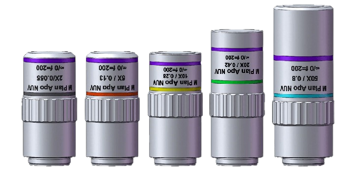
THz/Photonics/Optics Solutions
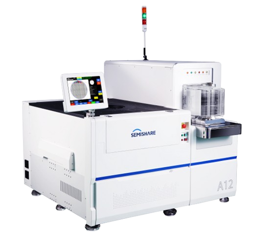
Probe Station System & Accessories
GaN Technology
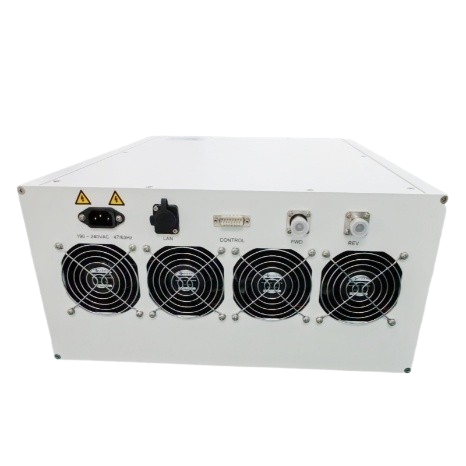
RF & Microwave
Lasers

Light Sources

Detectors

Imaging

Optics & Fiber

Opto-Mechanics

Optical Test & Metrology
GaN Technology
Module Development Steps
1. GaN Epitaxial (Epi) Design

The process begins with the design of the GaN epitaxial structure engineered on a high-performance substrate such as Silicon Carbide (SiC). Multiple layers—including GaN cap, AlGaN barrier, GaN buffer, and AlN nucleation—are optimized to ensure superior thermal conductivity, high electron mobility, and reliability required for high-power RF applications.
2. Processed GaN Wafer

Once the epi structure is finalized, the wafer undergoes semiconductor processing steps like photolithography, etching, metallization, and passivation. This transforms the wafer into functional GaN device layers ready for IC fabrication. The processed wafer contains multiple devices distributed across the substrate.
3. Fabricated IC

The processed wafer is diced, and individual GaN die are fabricated into integrated circuits. These ICs incorporate RF amplifier structures designed to handle high power and wide-band operation. The layout includes matching networks and metallization structures required for optimal RF performance.
4. Packaged Chip

The fabricated ICs are then packaged into protective high-reliability RF packages. Packaging improves mechanical strength, thermal handling, and electrical interfacing. It enables the device to be integrated into RF modules and systems while maintaining low parasitics and stable high-frequency performance.
5. RF Power Module
The packaged GaN device is integrated into a fully assembled RF power amplifier module. The module delivers:
- 150 W continuous-wave output power
- Operating range: 700 MHz – 6 GHz
- Compact size: 32 × 20 × 5 cm
This module is ready for deployment in applications such as radar, satellite communication, defense electronics, 5G infrastructure, and research systems.
Probe Station System & Accessories

Probe Station System

accessories

Test System
.jpg)
Test Services
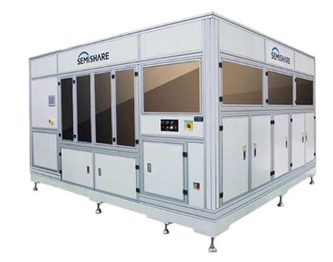
Laser Repair System
Probe Station System
Probe Stations, Precision Positioning Systems, Chuck Options, Environmental Accessories & High-Accuracy Hardware Solutions.
Probe Station System & Accessories
A Series Full Automatic Probe Station
Product Overview
A series is SEMISHARE years carefully developed a production automatic high and low temperature probe, the probe station has high test precision and super fast test speed, with automatic up-down material, automatic wafer alignment, automatic wafer center, automatic test diesize, etc, has the identification function of wafer ID at the same time, can be a single point test can also be continuous testing, test software feature-rich, heavily for the enterprise to gain test speed, greatly improving the productivity and efficiency.
Basic Information
Application direction
Wafer testing of various kinds of devices Wafer and other Wafer performed RF testing and other characteristics analysis of I-V C-V optical signal RF 1/ F noise, etc.
Technical characteristics
A8 Full Automatic Prober
High precision and test speed, greatly improving test efficiency
Micron-scale fully closed-loop motion control
High voltage and high current test application
Bernoulli arm support sheet
Small size, light weight, smaller footprint
24X7 hours on-chip detection
A12 Full Automatic Prober
Super high test precision and test speed, greatly improve productivity benefits
Fully automated system running, fast safe and reliable test
Support single point testing and continuous testing
Integrated control system, fast access to instrument testing
XY maximum speed (screw structure): 250mm/s; XY maximum speed (linear motor): 500mm/s
Index time (screw structure): 280ms(10mm Die size, 200μm separation height); Index time (linear
motor): 200ms(5mm Die size, 300μm separation height)
Rich software automation test, precise mechanical precision calibration
Automatic wafer thickness measurement and ID reading card can be upgraded
Leading internal anti - shock system device, more stable operation
X Series Semi-Automatic Probe Station

Product Overview
X series is an integrated and highly efficient semi-automatic wafer probe platform that is specialized in testing the performance of various advanced chips. It integrates various functions such as electric light wave and microwave, etc. It has the highest temperature width and test accuracy in the industry at present, and can match various test application environments, providing reliability wafer testing within -60 ~300 wide temperature range.
Basic Information
Application direction
Equipment professional deal with 12 "8" 6 "wafer Si/GaN/SiC and other kinds of devices of advanced chip performance test, can be equipped with corresponding instruments and meters, for the I - V C - V light RF signal character such as 1 / f noise analysis, feature-rich devices, scalable high-power wafer test RF test automatic test, and can load temperature control system, satisfy the customer in the high and low temperature environment of all kinds of wafer device performance test requirements.
Technical characteristics
The industry's most efficient CHUCK system, test efficiency increased by more than 40%
The industry's most efficient CHUCK test system running speed >70mm/s, motion precision 1 m, while
moving the translocation time index time 500ms, excellent system operating parameters have reached the
highest level of the industry, ultra-high test accuracy and efficiency to meet all kinds of wafers and
devices of high repeatability and stability test, compared with other probe brands in the industry,
the test efficiency is effectively increased by more than 40%. -60 ~300 is the highest temperature
wide area in the industry, with temperature control accuracy and stability better than 0.08, providing
reliability wafer testing in high and low temperature environments. The compact structure design of
four-dimensional motion with low center of gravity ensures the motion speed of 70mm/s while
maintaining the stability of motion acceleration and deceleration.
Industry leading 3 times imaging technology
Built-in SEMISHARE patent more than three zoom microscope view three times with JiaoGuang road system,
120 x 2000 x variable times optical amplifier, size view shows at the same time, more can make the
point needle and convenient operation, double Basler 2 million pixels high speed CCD 23 "display and
Mituyoyo high precision high resolution camera, precision positioning of high stability high
definition, image output and high precision measurement and dynamic monitoring.
Auxiliary CHUCK module silicon wafer safe upper and lower
The unique Chuck XY axis design in the industry has changed the common phenomenon that the probe
system of other brands in the market is affected by the resistance of laminated plates in different
directions and sizes, leading to the decline of motion stability.This ensures that the XY axis is not
affected by the laminate when moving, making the motion precision and stability higher. Compared with
other brands in the industry, the probe table cavity of SEMISHARE can be opened once and pulled out
the entire Chuck mechanism to load and load silicon wafers at a speed of 370mm with a long stroke. The
manual feeding of the Wafer is more convenient and faster.Meanwhile, the Chuck's rotation Angle range
is larger, which requires lower demand for manual laying wafer, and the operation is more flexible and
convenient.
Design of O-type needle seat platform
The probe testing system adopts the O-type needle seat platform design, which makes the most efficient
use of the space of the needle seat, up to 12 needle seats can be placed at the same time. Compared
with other probe brands in the market, the number of the needle seat is increased by 50%, effectively
realizing more efficient and rapid testing.
Air film shock absorption system
The industry's unique internal integration of high-performance air film shock absorption system and
the dual design of the external isolation barrier, effectively avoid the vibration caused by the
operator's touch;In addition, a long-aging casting is used as the substrate to suppress the vibration
in the process of motion at the fastest speed of 1S in the industry to ensure the stable operation of
the equipment, and to ensure that the screen does not shake when the image is enlarged at 2000X;At the
same time, the high-precision control valve ensures that the height error of the moving part of the
platform is 0.1mm, effectively realizing the test ability of fast DIE to die, ensuring that the whole
system can still maintain a stable running state when moving at a high speed, and greatly improving
the test efficiency.
Anti-interference shielding system
Anti interference EMI/Spectral noise/external light closed shielding cavity, cavity with the surface
of conductive oxide and nickel plating process, to ensure the conduction state between the parts so as
to achieve the shielding effect, reduce the system noise, blocking interference effectively, and
provide low leakage current protection, provides the best test environment for the weak electric
signal test;At the same time, the closed chamber in the low temperature environment to avoid the test
sample condensation, to ensure the wafer and device under the high and low temperature environment
fast and safe reliability test.
Independent research and development of software integration system, more compatibility
Support semi-automatic control (manual test or automatic test). Automatic Wafer calibration automatic
Wafer mapping automatic die size measurement automatic align automatic test data can be accessed
remotely. Automatic calibration of RF probe module with one key, automatic needle clearing function.
One-key adaptive four-axis Chuck precision calibration, supporting micron pad point measurement.
Single point or continuous testing can be supported. Strong data storage capacity and data processing
capacity. The bin value can be divided to determine the device NG. Multi-system integration to upgrade
the operating system application system and device test system independently. Intuitive and simple
operation design, quick and easy operation, effective saving operation training time.
Flexible optional configuration and extension
Convenient instrument access and support system automatic expansion and upgrade, temperature control
system loading;There are also a variety of test modules available. According to the test module, it
can be used together with a variety of positioner fixtures, needle CARDS and probe tables, such as
six-axis positioner RF cables.Many system operating parameters and features reach the highest level of
the industry, can meet your different test needs, but also an ideal choice for more industry customers
a semi-automatic probe table equipment.
V Series New Generation High Performance Probe Station

Product Overview
V series not only inherits the advantages of the X series on functions and operating performance, but also supports installation of loader and provides fully automatic testing function; It's about half the dimension and weight of the X series to decrease the floor area sharply; Ultra-fast speed, high precision and batch testing are all available.
Basic Information
Technical characteristics
Primary Options
Supports installation of loader and provides fully automatic testing function
High EMI shielding upper protective cover / standard upper protective cover
Single/dual-arm robotic automatic loading system
Chuck: room/high/low temperature
Virtual tabletop rapid lifting function, manual quick release of test samples
Chuck X/Y axis manually controllable movement
Computer interface: RS232, TCP/IP, GPIB
Designed with Full-coverage guard™ for extrem low system current leakage levels
CGX High-Low Temperature Vacuum Semi-automatic Probe Station

Product Overview
SEMISHARE CGX semi-automatic vacuum high-low temperature probe station is designed for research and specific production applications. It enables rapid and high-precision testing on single wafers in a vacuum environment, temperature range:77K-450K(liquid nitrogen), 10K-450K(liquid helium).
Basic Information
Application direction
Based on sample classification: Wafer Testing，LED Testing，Power Device Testing，MEMS Testing，PCB Testing ，LiquidDisplay Panel Testing，Solar Cell Panel Testing，Surface Resistivity Testing. Based on application classification: RF Testing，High-Temperature Environment Testing，Low Current (100fA Level) Testing，I-V/C-V/P-IV Testing，High Voltage, High Current Testing，Magnetic Field Environment Testing，Radiation Environment Testing.
Technical characteristics
Independent research and development of software integration system, more compatibility
Supports semi-automatic control (manual or automatic testing)
Automatic wafer calibration, wafer mapping, die size measurement, alignment, and remote access to test
data
One-click automatic calibration of RF probe module, with automatic probe cleaning function
One-click adaptive four-axis Chuck precision calibration, supporting micrometer-level pad point
testing
Supports single-point or continuous testing
Strong data storage and processing capabilities
Ability to divide test results into BIN values and identify NG devices
Multiple system integration capabilities, allowing independent upgrades of operating systems,
application systems, and device testing systems
Air film shock absorption system
The industry's unique internal integration of high-performance air film shock absorption system and the dual design of the external isolation barrier, effectively avoid the vibration caused by the operator's touch...
Industry leading 3 times imaging technology
12:1 fast and precise motorized zoom microscope, zoom range 0.6~7.2X, image resolution 3.05μm, total magnification range 33X~396X.
The industry's most efficient CHUCK system, test efficiency significantly improved
High efficient CHUCK test system，running speed≥40mm/s, motion precision≤±1μm...
High And Low Temperature Vacuum Probe Station
Product Overview
CG launched series is the first domestic company independent research and development of high and low temperature vacuum prober, in ultra high vacuum, automatic control, laser simulation...
Basic Information
Application direction
Chip test LD/LED/PD test Optical fiber spectral characteristics Test MATERIAL/device IV/CV characteristics Test Hall test electromagnetic transport characteristics high frequency characteristics test, etc.
Technical characteristics
Vacuum Chamber
Vacuum chamber adopts double shielding cavity and external cavity structure, to provide the sample test of extreme pressure...
Probe arm XYZ regulating mechanism
The XYZ adjusting mechanism of the probe arm adopts the structure of self-locking lead screw and cross roller guide rail...
Microscope regulating mechanism
By adjusting the telescopic height of the support frame and the adjustable seat of the microscope...
Refrigerant flow regulation system
The refrigerant regulating system is composed of the pressure control valve of compressed nitrogen in the duwa tank...
Refrigerant Coaxial Loop
Refrigerant coaxial circuit of the refrigerant from the middle line into the sample set...
Shockproof Platform
Shockproof system USES the import of South Korea's big companies air spring type brace shockproof platform...
High And Low Temperature Analysis Probe Station

Product Overview
The HL series high-low temperature probe station covers a temperature range from -60℃ to 300℃ and allows rapid temperature change between the minimum and maximum values. The temperature control accuracy reaches ±0.1℃.
Application direction
Device analysis and parametric testing under extreme high and low temperature environments.
Technical characteristics
Precision, stability and repeatability
Advanced temperature control system with fast transition time
Wide application for I-V, C-V, RF, optical and MEMS testing
Suitable for wafer-level and chip-level applications
FA Series Failure Analysis Probe Station

Product Overview
FA series failure analysis probe station is designed for defect localization and device-level failure evaluation. Supports optical, laser, and electrical characteristic diagnosis.
Application direction
Failure location, signal tracking, reverse engineering, short/open-circuit evaluation
Technical characteristics
Supports IR, OBIRCH, TIVA, LADA, XRAY, emission microscope and more
Excellent vibration isolation structure
Ultra-precision micro-positioning system
H Series Integrated Manual Probe Station
Product Overview
H series integrated manual probe station offers compact design, flexible test operation, and excellent performance for research and education labs.
Application direction
Basic device electrical performance test, chip-level testing, R&D and university applications
Technical characteristics
Compact footprint, fully integrated architecture
High precision XY stage, smooth motion
Optional SMU connection modules and microscope systems
E Series 150mm Economical Manual Probe Station

Product Overview
E series 150mm economical probe station is a budget-friendly platform designed for flexible semiconductor testing for early verification and teaching laboratories.
Application direction
Education, sample evaluation, parametric IV/CV testing
Technical characteristics
Cost-effective design
Stable mechanical framework
Compatible with mainstream microscopes and manipulators
M Series Basics Manual Probe Station

Product Overview
M series provides basic manual probing capability for fundamental research and electronic testing experiments.
Application direction
Entry-level semiconductor testing, university teaching, prototype verification
Technical characteristics
Smooth operation, stable structure
Supports various probe arms and chuck configurations
TEG Panel Laser Probe Station

Product Overview
TEG panel laser probe station is built for panel-level semiconductor and laser-based optical testing, supporting large-size substrates.
Application direction
Laser TEG testing, display panels, photovoltaic testing, optical signal analysis
Technical characteristics
Precision laser positioning
Compatible with large panel sizes
Low noise and high measurement accuracy
Probe Station Accessories
Probe Stations, Precision Positioning Systems, Chuck Options, Environmental Accessories & High-Accuracy Hardware Solutions.
Accessories & Supporting Hardware
Temperature Chuck
Normal temperature chuck

Room temperature porous chuck
Specification: Coaxial/Triaxial/RF/High Voltage
Size: 4, 6, 8, 12 inches
Features:
Multi-area independent adsorption/three-stage vacuum adsorption
Modular system, customized to adapt to personalized testing requirements
Compatible with all major production probes and all major analytical probes
Offers complete hardware and software integration
High and low temperature chuck

High and low temperature three-axis groove chuck
Specification: -50/60℃ to 200℃
Size: 8, 12 inches
Features:
Without cooling machine, the temperature can be as low as -10℃
Air only - no liquids or Peltier elements
Modular system, customized to adapt to personalized testing requirements
No separate purge air source required
Compatible with all major production probes and all major analytical probes
Offers complete hardware and software integration
Micropositioner
SS-700e-m

Motorised Micropositioner
Specification: XYZ stroke 15mm; movement resolution 0.1μm; repeat positioning accuracy ±1μm; maximum movement speed 10mm/s.
Size: 146L x 125W x 140H mm; Weight: 1.97kg
Features:
Quickly adjust the position manually
Compatible with a variety of manual probe fixtures
Conveniently expandable to support up to 4 motorised needle holders at the same time
SS-125-M

Submicron circuit/RF test micropositioner
Specification: X-Y-Z travel range: 14 x 14 x 14 mm; linear motion; screw precision: 125 threads/inch; movement accuracy: < 1 micron
Size: 110mmL×51mmW×100mmH，1.1kg
Features:
The axis movement mode shifts from differential head lifting to screw drive, preventing
post-collision jolts
Shorter tooth spacing enables more precise adjustments
Differently sized handles allow for easy distinction during operation
Probe Holder
High voltage probe holder HV-T-3KV

Specification: Maximum test voltage: 3KV; Leakage flow (tip diameter 20um): 5pA/3000KV; Working temperature: -55℃~300℃; Interface: HV male (female)
Size: 152*99*42mm
Features:
Ultra-low leakage
Easy to use and simple probe replacement
Large height adjustable range
Probe
ST Series Hard needle
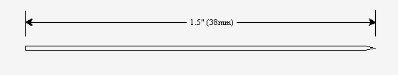
Specification: ST
Size: Hard needle tungsten material
Features: ST series hard needles are made from 0.020 inch (0.51mm) diameter tungsten needles after electrochemically processing and they come with a length of 1.5inch (38.1mm).They are mostly used for the vast majority of chip electrode spot tests and circuit spot tests. ST series hard needles can be used to scrape or pierce the passive layer on the chip surface. They can be optionally plated with nickel on the surface. If you choose nickel plating, add "NP" after the model number.
Radiofrequency Probe
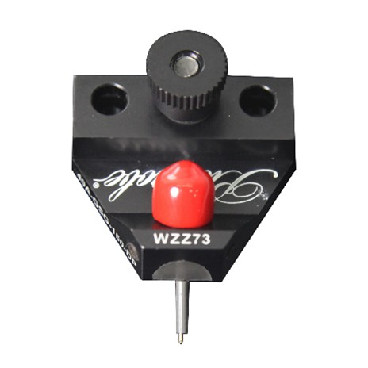
Specification: DC power supply DC-40GHz to -145GHz optional
Tip configuration: GS/SG/GSG/GSSG/GSGSG, etc.
Tip distance: Different tip types are available in a wide range (such as GSG: 25~2450 μm)
Size: Regular
Features: The voltage waveform in the circuit is converted into a specific voltage value for accurate measurement and analysis.
Adapter

Specification: Maximum current: 10A; Maximum frequency: 500 MHZ; Minimum leakage current: 100fA; Maximum voltage: 1000V
Size: Regular
Air-floating automatic balance anti-vibration table

Specification: Size: 600*900*600mm
Features: The pneumatic support frame is designed and manufactured with a special two-chamber system design to ensure that the natural vibration frequency is kept low, excellent vibration isolation in both vertical and horizontal directions, and excellent damping with leveling valve design provides automatic leveling.
Test Systems
Probe Stations, Precision Positioning Systems, Chuck Options, Environmental Accessories & High-Accuracy Hardware Solutions.
Test Systems
SR Series Fully Automatic Four-Probe Square Resistance Test System

Product Overview
The four-probe square resistance test system is a high-precision test device with advantages such as good reliability and simple operation. It is of great significance for the design, production, and quality control of microelectronic devices.
Basic Information
Application direction
Semiconductor materials, solar cell materials (silicon, polysilicon, silicon carbide, etc.), new materials, functional materials (carbon nanotubes, DLC, graphene, silver nanowires, etc.), conductive films (metal, ITO, etc.), silicon-related films (LTPS, etc.), diffusion layer testing, and others (*For more details, please contact us).
Technical characteristics
SR Series Fully Automatic Four-Probe Square Resistance Test System
● SR8 is compatible with 6/8-inch wafers, and SR12 is compatible with 8/12-inch wafers.
● Designed according to the fully automatic test performance of the production line, ensuring high
testing efficiency.
● Single/double probe configuration, suitable for different application scenarios.
● Optional SECS/GEM factory communication protocol.
● Compliant with ASTM and JIS industry standards.
Hall Effect System
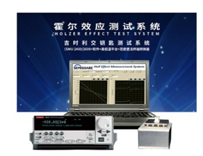
Product Overview
Hall Effect System is integrated Keithley2400/2600 series precision source and Semishare Polaris high and low temperature platform, using van der pol rule design, applied to the high precision of measuring carrier type of semiconductor material type (P/N) concentration of carrier mobility parameters such as resistivity hall coefficient, can be applied to Si SiGe SiC GaAs InGaAs InP semiconductor materials such as GaN.
Basic Information
Technical characteristics
Product Feature
The industry-leading Keithley testing platform.
Ultra high precision source table, achieve accurate measurement.
Modular design, stable performance and simple maintenance.
Rich software functions, convenient and flexible operation.
Visual interface, data analysis is clear.
High and low temperature variable temperature environment, effective implementation of reliability
testing.
Test Service
Semicom Professional Testing Services (PTS): Delivering efficient, cost-effective, and application-driven semiconductor testing solutions.
Test Service
Semicom Professional Testing Services (PTS)
Overview
To create more value for users through flexible, reliable, and fast semiconductor testing services.
Founding Purpose
To facilitate design validation, providing convenient testing and shortening development time.
To reduce testing costs by eliminating upfront equipment purchase requirements—users simply send PTS
testing requests.
To understand emerging market applications and promote innovation in semiconductor testing product
development.
Laser & Repair System
Probe Stations, Precision Positioning Systems, Chuck Options, Environmental Accessories & High-Accuracy Hardware Solutions.
Laser Repair Systems
Mask LCVD Repair LD14

Product Overview
The mask LCVD repair equipment mainly uses laser-induced chemical vapor deposition (LCVD) technology to repair defects on the masks. The SEMISHARE LD14 series offers a wide range of deposition thickness and high repair precision. The sub-micron level laser precision can effectively deal with masks with extremely small pitches. With sub-micron laser accuracy, it effectively addresses defects on masks with extremely small pitches, providing high-precision, low-cost repair solutions for high-value mask defects, thus significantly reducing production and operational costs for enterprises.
Basic Information
Application direction
It can be used to fill in missing parts on a mask or repair patterns. This technique is often employed to fix issues like open circuits and short circuits.
Technical characteristics
Mask LCVD Repair LD14
For products with different thicknesses and large spans, there is no need for manual adjustments when
changing products; the equipment can automatically adapt to the height adjustment of the deposition
head.
Exhaust gas recovery treatment utilizes high-temperature filters with up to dozens of layers,
effectively capturing harmful components in the decomposed exhaust gas, which is then cooled and
directed into the factory’s exhaust system.
Customized products can be provided according to customer needs.
Mask Cut Repair L14

Product Overview
The L14 series mask laser cutting and repair equipment is mainly used to repair defects that occur during the use of photomasks. At the core of the device is SEMISHARE's advanced machine vision system, which provides a high-precision, cost-effective repair solution for high-value photomask defects that helps companies lower production and operational costs.
Basic Information
Application direction
Application scenarios that require precise cutting or removal of specific material layers.
Technical characteristics
Mask Cut Repair L14
It can handle the repair of various materials including chromium, silicon, silicon nitride, quartz, EUV
materials, foreign particles and stubborn unknown particles.
It can precisely remove or repair defective areas without affecting other parts of the mask.
It can provide customized products according to customer needs.
FlexScan Panel Laser Spot Repair System

Product Overview
FlexScan series is designed for display of process design panel window abnormal defects and faults of a laser panel window repair equipment equipment SEMISHARE leading machine vision system as the core, provide high precision for LCD \ semi-finished goods display defect repair and low cost solution, greatly increase the degree of the enterprise technological process yield and economic benefits.
Basic Information
Application direction
Tft-lcd panel bright spot repair, OLED panel bright spot repair.
Technical characteristics
Product Feature
Laser system visual operation, greatly improve the efficiency of repair.
Repair shape can be edited, can be multi - station design.
Linear motor structure,1um laser precision, high speed mute.
Leading internal anti - shock system device, more stable operation.
High power optical image recognition, automatic calibration focus.
Local darkening can be achieved.
Automatic AOI positioning, automatic upper and lower slice.
Rich software testing function, high precision calibration of mechanical system.
LCD/OLED Panel Laser Repair System
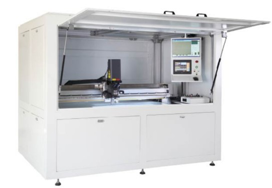
Product Overview
LCD series laser repair equipment is a kind of repair equipment to repair the defects and defects in the production process of display screen, so as to improve the yield of the process.With the leading machine vision system of SEMISHARE as the core, the equipment can provide high-precision and low-cost solutions for the defects of LCD finished products and semi-finished products, so as to improve the business efficiency to a greater extent.
Basic Information
Application direction
OLED/LCD panel within 20 "55" and 70 "highlights and abnormal repair.
Technical characteristics
Product Feature
High power optical image recognition, automatic calibration focus.
Laser system visual operation, greatly improve the efficiency of repair.
Linear motor structure,1um laser precision, high speed mute.
Automatic AOI positioning, automatic upper and lower slice.
Rich software testing function, high precision calibration of mechanical system.
Repair shape can be edited, can be multi - station design.
Leading internal anti - shock system device, more stable operation.
Electrical shielding system, shielding light and electromagnetic interference.
LCVD Panel Laser Repair System

Product Overview
LCVD laser repair equipment is mainly an automatic repair equipment designed for the poor process and defects of LCD display. With the leading machine vision system of SEMISHARE as the core, LCVD laser repair equipment can provide high-precision repair and low-cost solutions for the defects of LCD finished products and semi-finished products, so as to improve the business efficiency of enterprises to a greater extent.
Basic Information
Application direction
TFT-LCD and OLED Array Panel circuit open and short circuit repair,Mask defect repair.
Technical characteristics
Product Feature
High power optical image recognition, automatic calibration focus.
Laser system visual operation, greatly improve the efficiency of repair.
Linear motor structure,1um laser precision, high speed mute.
Electrical shielding system, shielding light and electromagnetic interference.
Rich software testing function, high precision calibration of mechanical system.
Minimum machining accuracy up to 1*1um.
Leading internal anti - shock system device, more stable operation.
Can be upgraded for sample testing up to 120 inches.
RF & Microwave Solutions

Anti-Jamming Antenna

Power Amplifier Modules

Low Noise Amplifier LNA

T/R Components & Up/Down Converters

RF Systems & Frequency Sources

Passive Components

Horn Antennas
Horn Antennas
Horn Antennas
1 ) 18-40GHz conical horn antenna for various communication systems with horizontal and vertical dual-line polarization

Product Description
18-40GHz conical horn antenna for various communication systems with horizontal and vertical dual-line polarization
Product Description
This SH-AnT-1840 antenna features a conical horn design and supports a frequency range from 18GHz to 40GHz. It provides horizontal and vertical dual-line polarization, ensuring versatile performance. The antenna’s main flap width ranges from 10° to 40°, with side-valve rejection of 15 dB in the E-plane and 23 dB in the H-plane, ensuring excellent signal quality and reduced interference. The gain ranges from 14 to 20 dB, and the isolation between both ports is no less than 20 dB, offering superior performance in high-frequency applications. The antenna has an SMA-K interface and is lightweight, weighing less than 0.07kg. Its compact mouth size is less than 34mm, making it suitable for various communication systems. The surface is treated with conductive oxidation for improved durability, and it can withstand power up to 800W. The antenna is designed to operate in a wide temperature range from -40°C to 70°C, with a storage temperature range from -55°C to 80°C
| Model | SH-AnT-1840 | Interface form | SMA-K |
| Antenna form | conical horn | Mouth size | ≤34mm |
| Frequency Range | 18GHz-40GHz | Weight | ≤0.07kg |
| Standing wave | not greater than 2.5 | Surface treatment | conductive oxidation |
| Polarization | Horizontal and vertical double line polarisation | Operating temperature | -40°C～70°C |
| Gain | 14 to 20 dB | Storage temperature | -55°C～80°C |
2 ) SWT-AnT-0506 High Gain 5-6GHz Horn Antenna for Independent Base Stations

Product Description
1. Product technical indicators 1) Model: SWT-AnT-0506 2) Frequency range: 5GHz to 6GHz 3) Standing wave: no more than 1.5 4) Polarization: Linear Polarization 5) Beam width: 30 。-45 ° 6) Gain: ≥12dB@5-6GHz 7) Power: 100W 8) Outer dimensions138.27x168.38mm 9) Basic material: Aluminum
3 ) High-Gain 17.6-26.5GHz Horn Antenna for Radar & Communication System

Product Description
1.0 Electrical parameters: 1.1 frequency range 17.6-26.5 GHz 1.2 Standing wave (Max. VSWR) ≤1.5 1.3 Antenna Gain (TYP) 10 dB 1.4 Polarization mode linear polarization 2.0 Mechanical parameters: 2.1 Outer contour dimensions (length x width x height) About 12*16*45mm 2.2 Paint the exterior surface Sea grey 2.3 basic materials aluminium product 2.4 weight make an appointment: 3.0 Product profile
4 ) Wideband High-Gain Horn Antenna for Robust RF Performance in Demanding Operational Environments

Product Description
| Model | SH-AnJ-0208 |
| Antenna form | Pyramid Horn |
| Frequency Range | 2GHz~8GHz |
| Standing wave | ≤2.0 |
| Polarization | Single linear polarization |
| Beam width | ≥45° |
| Gain | 8～12dB |
| Interface form | SMA-50K |
| Oral size | 138.27x168.38mm |
| Weight | ≤1.2kg |
| Surface treatment | Conductive oxidation |
| Operating temperature | -40~70℃ |
| Storage temperature | -55~80℃ |
5 ) Professional Horn Antenna - 25dB Gain, VSWR ≤1.5, 2.92-K Coaxial Interface, Copper Material with Pickling Passivation & Black Lacquer

Product Description
Model: SWT-LB220D25CZYP VSWR: ≤1.5 Gain: 25dB Coaxial Interface: 2.92-K Material: copper Surface treatment: pickling passivation Coating: black lacquer Interface Form: 25 dB
6 ) RF Microwave 8-23 GHz Horizontal and Vertical Dual Linear Polarization Antenna

Product Description
RF Microwave 8-23 GHz Horizontal and Vertical Dual Linear Polarization Antenna
Product Description
The 8-23 GHz dual linear polarization antenna is a type of antenna designed to operate within the frequency range of 8 GHz to 23 GHz. It features dual linear polarization, allowing it to simultaneously transmit and receive electromagnetic waves in two orthogonal directions. This antenna is commonly used in high-frequency communication systems such as radar, satellite communications, radio links, and communication networks. Frequency Range: Operates within the range of 8 GHz to 23 GHz, covering various communication and radar application bands. Dual Linear Polarization: Capable of independent polarization in vertical and horizontal directions, providing flexibility in signal transmission and reception. Radiation Characteristics: Exhibits good radiation characteristics such as radiation power, radiation pattern, beamwidth, etc., which can be designed and optimized based on specific requirements. Antenna Gain: Typically offers high antenna gain, enhancing signal transmission distance and coverage. Interference Resistance: Dual linear polarization design improves the antenna's resistance to environmental and channel interference, enhancing the reliability and stability of communication systems. Antenna Structure: May employ complex antenna structures such as dipole antennas, waveguide antennas, or compensating antennas to achieve desired performance metrics and operational requirements. Application Areas: Widely used in military communications, satellite communications, radar systems, radio links, and mobile communications, playing a crucial role in the transmission and reception of high-frequency signals. Performance Optimization: Design and optimization processes may consider parameters such as bandwidth, resonance frequency, impedance matching, beamwidth, cross-polarization, etc., to achieve optimal performance and efficiency. Understanding these aspects provides insight into the role and advantages of the 8-23 GHz dual linear polarization antenna in communication systems, as well as its specific application methods and performance requirements in different scenarios.
Specification
| Model | SH-AnT-0823 | Interface form | SMA-50K |
| Antenna form | Cone horn | Oral size | ≤77mm |
| Frequency Range | 8GHz-23GHz | Weight | ≤0.5kg |
| Standing wave | no more than 2 | Surface treatment | Conductive oxida |
| Polarization | Horizontal and vertical dual linear polarization 10-40° | Operating temperature | -40°C～70°C |
| Gain | ＞20dB | Storage temperature | -55°C～80°C |
7 ) Full Range Wr3~Wr42 18-325 GHz Waveguide Horn Antenna For wireless networks

Product Description
1. Full Range Wr3~Wr42 18-325 GHz Wideband Wireless Antennas Waveguide Horn Antenna For wireless networks
Description
Rectangular horns are one of our most popular antennas. Each horn is precisely electrocast and gold-plated on the mandrel. These horns have maximum return loss and the gain from 22 to 24dB. Special orders can be made for horns with different gains, Dimension of this antenna is from WR3 to WR42. The rectangular waveguide horn antenna with a gain ranging from 22 dB to 24 dB, operating in the frequency range of 18 GHz to 325 GHz, is a type of antenna designed for microwave and millimeter-wave applications. This antenna is commonly used in radar systems, communication systems, wireless networks, as well as in astronomy and remote sensing applications. Here is a specific introduction to this antenna: 1. Frequency Range: Suitable for microwave and millimeter-wave frequencies ranging from 18 GHz to 325 GHz, covering a wide range of applications. 2. Gain: Typically offers a gain of 22 dB to 24 dB, enhancing signal reception and transmission efficiency. 3. Waveguide Structure: Utilizes a rectangular waveguide structure, providing excellent waveguide characteristics and low transmission losses. 4. Horn Design: Incorporates a horn-shaped design, allowing for a wide beamwidth and excellent radiation characteristics, suitable for long-distance and wide-area communication needs. 5. Materials and Manufacturing: Usually constructed from metal materials such as aluminum, brass, or copper, offering durability and stability. 6. Application Areas: Widely used in antenna arrays for radar systems, transceivers in communication systems, remote sensing, and astronomical observations. 7. Performance Features: Offers high gain, low losses, excellent radiation characteristics, and interference resistance, suitable for complex communication environments and demanding applications. 8. Installation and Adjustment: Relatively straightforward to install and adjust, allowing for customization and optimization based on specific requirements. Understanding these details provides insights into the role and advantages of the rectangular waveguide horn antenna operating in the 18 GHz to 325 GHz frequency range with gains of 22 dB to 24 dB in microwave and millimeter-wave communication systems, as well as its specific application methods and performance requirements in various scenarios.
| Part Name | WR | Frequency (GHz) | VSWR | WG A DIM | WG B DIM | Height-H | Length-L | Width-W | Flange |
|---|---|---|---|---|---|---|---|---|---|
| SWT42S | 42 | 18 - 26.5 | 1.1:1 | 0.42 in | 0.17 in | 3.064 in | 7.48 in | 4.068 in | S 0.875 |
| SWT42S | 28 | 26.5 - 40 | 1.1:1 | 0.28 in | 0.14 in | 2.069 in | 5.0 in | 2.712 in | S 0.750 |
| SWT22R | 22 | 33 - 50 | 1.1:1 | 0.224 in | 0.112 in | 1.656 in | 4.07 in | 2.17 in | R 1.125 |
| SWT19R | 19 | 40 - 60 | 1.1:1 | 0.188 in | 0.094 in | 1.39 in | 3.48 in | 1.821 in | R 1.125 |
| SWT15R | 15 | 50 - 75 | 1.1:1 | 0.148 in | 0.074 in | 1.094 in | 2.78 in | 1.434 in | R 0.750 |
| SWT12R | 12 | 60 - 90 | 1.1:1 | 0.122 in | 0.061 in | 0.902 in | 2.35 in | 1.182 in | R 0.750 |
| SWT10R | 10 | 75 - 110 | 1.1:1 | 0.10 in | 0.05 in | 0.74 in | 1.94 in | 0.969 in | R 0.750 |
| SWT8R | 8 | 90 - 140 | 1.1:1 | 0.08 in | 0.04 in | 0.591 in | 1.56 in | 0.775 in | R 0.750 |
| SWT6R | 6 | 110 - 175 | 1.1:1 | 0.065 in | 0.0325 in | 0.481 in | 1.26 in | 0.63 in | R 0.750 |
| SWT5R | 5 | 140 - 220 | 1.1:1 | 0.051 in | 0.0255 in | 0.377 in | 1.04 in | 0.494 in | R 0.750 |
| SWT4R | 4 | 170 - 260 | 1.1:1 | 0.043 in | 0.0215 in | 0.318 in | 0.86 in | 0.417 in | R 0.750 |
| SWT3R | 3 | 220 - 325 | 1.1:1 | 0.034 in | 0.017 in | 0.251 in | 0.71 in | 0.329 in | R 0.750 |
8 ) 1~18 GHz 800 W digital satellite TV RF module satellite receiver conical horn antenna

Product Description
1~18 GHz 800 W digital satellite TV RF module satellite receiver conical horn antenna
A conical horn antenna is a type of antenna commonly used in microwave and radio frequency (RF) applications. Here's an overview:
1.Structure: It consists of a flared, conical-shaped horn that gradually expands from a narrow opening to a wider aperture. The horn may have a smooth or corrugated inner surface, depending on design requirements.
2.Functionality: Radiation Pattern: The conical horn antenna is known for its directional radiation pattern, with a well-defined beamwidth and gain. Frequency Range: It can operate over a wide frequency range, typically in the microwave or RF spectrum. Impedance Matching: Properly designed horns offer good impedance matching to the transmission line or feed system, minimizing signal reflections. Polarization: Depending on the design, conical horn antennas can support linear or circular polarization.
3.Applications: Communication Systems: Used in satellite communication, radar systems, wireless networks, and point-to-point communication links. Test and Measurement: Employed in antenna testing, EMC testing, and RF measurements. Remote Sensing: Utilized in remote sensing applications for data collection and analysis.
4.Advantages: High Gain: Offers high gain, making it suitable for long-distance communication. Low Sidelobes: Typically exhibits low sidelobes, enhancing its ability to focus energy in the desired direction. Durable Construction: Can be constructed from materials suitable for outdoor and harsh environments.
5.Variants: Pyramidal Horn: A variation with a square or rectangular aperture instead of a conical shape. Exponential Horn: Features a continuously flaring profile, offering broadband performance.
Overall, conical horn antennas are valued for their directional properties, frequency versatility, and suitability for various communication and sensing applications.
Specification
| Model | SH-AnT-0118 |
| Antenna form | Cone horn |
| Frequency Range | 1GHz~18GHz |
| Standing wave | ≤3 |
| Polarization | Horizontal and vertical dual linear polarization |
| Sidelobe suppression | 10~70 ° |
| Sidelobe suppression | E-side 8 dB; H-side 13 dB |
| Gain | 2~21dB(Need to test 1-2GHz1-2GHz) |
| Two-port isolation | ≥25dB |
| Interface form | SMA-50K |
| Oral size | ≤193mm |
| Weight | ≤2.4kg |
| Surface treatment | Conductive oxidation |
| Operating temperature | -40~70℃ |
| Storage temperature | -55~80℃ |
| Withstand power | 800W |
9 ) 18-325 GHz Rectangular Waveguide Horn Antenna for Audio, Television with High Direction

Product Description
18-325 GHz Rectangular Waveguide Horn Antenna for Audio, Television with High Direction
Description
Rectangular horns are one of our most popular antennas. Each horn is precisely electrocast and gold-plated on the mandrel. These horns have maximum return loss and the gain from 22 to 24dB. Special orders can be made for horns with different gains, Dimension of this antenna is from WR3 to WR42. The rectangular waveguide horn antenna with a gain ranging from 22 dB to 24 dB, operating in the frequency range of 18 GHz to 325 GHz, is a type of antenna designed for microwave and millimeter-wave applications. This antenna is commonly used in radar systems, communication systems, wireless networks, as well as in astronomy and remote sensing applications.
| Part Name | WR | Frequency (GHz) | VSWR | WG A DIM | WG B DIM | Height-H | Length-L | Width-W | Flange |
|---|---|---|---|---|---|---|---|---|---|
| SWT42S | 42 | 18 - 26.5 | 1.1:1 | 0.42 in | 0.17 in | 3.064 in | 7.48 in | 4.068 in | S 0.875 |
| SWT42S | 28 | 26.5 - 40 | 1.1:1 | 0.28 in | 0.14 in | 2.069 in | 5.0 in | 2.712 in | S 0.750 |
| SWT22R | 22 | 33 - 50 | 1.1:1 | 0.224 in | 0.112 in | 1.656 in | 4.07 in | 2.17 in | R 1.125 |
| SWT19R | 19 | 40 - 60 | 1.1:1 | 0.188 in | 0.094 in | 1.39 in | 3.48 in | 1.821 in | R 1.125 |
| SWT15R | 15 | 50 - 75 | 1.1:1 | 0.148 in | 0.074 in | 1.094 in | 2.78 in | 1.434 in | R 0.750 |
| SWT12R | 12 | 60 - 90 | 1.1:1 | 0.122 in | 0.061 in | 0.902 in | 2.35 in | 1.182 in | R 0.750 |
| SWT10R | 10 | 75 - 110 | 1.1:1 | 0.10 in | 0.05 in | 0.74 in | 1.94 in | 0.969 in | R 0.750 |
| SWT8R | 8 | 90 - 140 | 1.1:1 | 0.08 in | 0.04 in | 0.591 in | 1.56 in | 0.775 in | R 0.750 |
| SWT6R | 6 | 110 - 175 | 1.1:1 | 0.065 in | 0.0325 in | 0.481 in | 1.26 in | 0.63 in | R 0.750 |
| SWT5R | 5 | 140 - 220 | 1.1:1 | 0.051 in | 0.0255 in | 0.377 in | 1.04 in | 0.494 in | R 0.750 |
| SWT4R | 4 | 170 - 260 | 1.1:1 | 0.043 in | 0.0215 in | 0.318 in | 0.86 in | 0.417 in | R 0.750 |
| SWT3R | 3 | 220 - 325 | 1.1:1 | 0.034 in | 0.017 in | 0.251 in | 0.71 in | 0.329 in | R 0.750 |
10 ) 6-18GHz 40dB Dual Polarized High Isolation Antenna for communication system

Product Description
6-18 G 40 dB Dual Polarized High Isolation Antenna for communication system
The 6-18 GHz 40 dB Dual Polarized High Isolation Antenna is a professional antenna designed for communication systems, featuring: Frequency Range: Covers frequencies from 6 to 18 GHz, encompassing many common communication bands. 40 dB High Isolation: Uniquely designed to achieve up to 40 dB of polarization isolation, effectively reducing polarization interference. Dual Polarization Design: Supports both horizontal and vertical polarization, offering flexibility for different communication scenarios and requirements. Specialized Communication Applications: Suitable for radar, satellite communication, radio links, and other fields, with stable and reliable performance. High-Performance Materials: Manufactured with premium materials to ensure excellent performance and durability in various environments. This antenna plays a crucial role in communication systems, providing a stable and efficient solution for signal transmission.
| Model | SH-AnJ-0618 |
| Antenna form | Pyramid Horn |
| Frequency Range | 6GHz~18GHz |
| Standing wave | ≤2 |
| Polarization | Single linear polarization |
| Gain | 10～18dB |
| Interface form | SMA-50K |
| Oral size | 73.2x58.16mm |
| Weight | ≤0.4kg |
| Surface treatment | Conductive oxidation |
| Operating temperature | -40~70℃ |
| Storage temperature | -55~80℃ |
Product Description
6-18 G 40 dB Dual Polarized High Isolation Antenna for communication system
Product Description
The 6-18 GHz 40 dB Dual Polarized High Isolation Antenna is a professional antenna designed for communication systems, featuring: Frequency Range: Covers frequencies from 6 to 18 GHz, encompassing many common communication bands. 40 dB High Isolation: Uniquely designed to achieve up to 40 dB of polarization isolation, effectively reducing polarization interference. Dual Polarization Design: Supports both horizontal and vertical polarization, offering flexibility for different communication scenarios and requirements. Specialized Communication Applications: Suitable for radar, satellite communication, radio links, and other fields, with stable and reliable performance. High-Performance Materials: Manufactured with premium materials to ensure excellent performance and durability in various environments. This antenna plays a crucial role in communication systems, providing a stable and efficient solution for signal transmission.
| Model | SH-AnJ-0618 | Antenna form | Pyramid Horn |
| Frequency Range | 6GHz~18GHz | Standing wave | ≤2 |
| Polarization | Single linear polarization | Gain | 10～18dB |
| Interface form | SMA-50K | Oral size | 73.2x58.16mm |
| Weight | ≤0.4kg | Surface treatment | Conductive oxidation |
| Operating temperature | -40~70℃ | Storage temperature | -55~80℃ |
Anti-Jamming Antenna
1) 4 Element BD2-B1 Anti Jamming Antenna GPS-L1, GPS-L2 and GLONASS

Application: Airborne, vehicle-borne, ship-borne, ground systems and other application platforms.
Function:
- Simultaneously receive BD2-B1, GPS-L1, GPS-L2 and GLONASS G1 frequency navigation signals
- Counter suppressive interference of BD2-B1 and GPS-L1 frequency signals
- Receive and amplify GPS-L2 and GLONASS G1 frequency navigation signal with low noise
| Working Frequency | B1: 1561.1 MHz±2MHz; GPS L1: 1575.42 MHz±1.023MHz; GPS L2: 1227.6 MHz±10.23MHz; GLONASS: 1602 MHz±6MHz |
| Anti-interference Ability | ISR ≥85dB (single); ≥75dB (triple) |
| Channel Gain | 35dB±5dB |
| Output VSWR | ≤2 |
| Output Signal Amplitude | -60dBm ~ -70dBm (center freq 1568MHz) |
| Power Consumption | ≤12W (9V-36V DC) |
| Weight | ≤1.5kg |
| Operating Temperature | -40℃ ~ +85℃ |
| Physical Interface | SMA-K RF socket, 30J-9ZKP power socket |
2) Two-Element GPS Anti-Jamming Antenna for UAV Applications

Product Description: Specialized 2-element antenna designed to mitigate interference signals on GPS reception with multi-antenna beamforming and diversity reception technology.
Function: Receive BD2-B1/GPS L1/GLONASS L1 satellite navigation signals with anti-jamming capability. Power supply and RF signal provided by same wire.
| Number of Channels | 2-channel |
| Anti-jamming Performance | Single broadband: 75-80dB; Narrowband: 85-90dB |
| Output Signal Power | -65dBm±5dBm |
| Gain | 40dB±1dB |
| Power Supply | DC5V±0.5V |
| Power Consumption | 5.0W±0.5W |
| Weight | 270±10g |
| Overall Dimensions | 119.4×76.2×18.6mm |
| Physical Interface | TNC type socket |
| Operating Temperature | -40°C ~ +85°C |
3) GPS-L1, Galileo E1 and GLONASS G1 Anti-Interference Receiver 4 Elements

Description: 4-element anti-jamming antenna for navigation systems. Receives satellite signals (BD-B1, GPS-L1, Galileo E1, GLONASS G1) and outputs NMEA0183 data via RS-232C.
| Receiving Signal | BD-B1, GPS L1, Galileo E1, GLONASS G1 |
| Channels | 4-channel B1/L1/E1, 1 channel GLONASS |
| Anti-interference Type | ISR: 80-85dB (3 broadband), 90-95dB (single broadband) |
| Location Precision (1σ) | Level ≤10m, Height ≤10m |
| Speed Precision | ≤0.2m/s |
| Power Supply | DC9V~DC36V |
| Power Consumption | ≤12W |
| Dimensions | 134mm × 134mm × 19mm |
| Weight | 500±5g |
| Baud Rate | 4800-921600bps (default 9600bps) |
| Operating Temperature | -40°C ~ +85°C |
4) 7-Element B3 Anti-Interference Antenna

Function:
- Channels 1 & 7 receive BD2-B3 satellite signals with anti-jamming for frequency point signals
- Receive and amplify B1/GPS/GLONASS navigation signals with low noise
- Straight-through anti-interference function switch
- Self-detection and online software upgrade capability
| Received Signal | BD2-B3, B1/GPS/GLONASS |
| Number of Channels | 7 channel B3, 1 channel B1/GPS/GLONASS |
| Anti-jamming Performance | Single broadband ≥95dB; Broadband ≥80dB |
| Channel Gain | 37±2dB |
| Output Signal Power | -65±5dBm |
| Power Supply | DC28V |
| Power Consumption | 25W |
| External Dimension | 230mm × 50mm |
| Physical Interface | JY27496E low frequency; N-type RF connector |
| Operating Temperature | -40°C ~ +85°C |
5) BDS-B3 and B1/L1 Frequency 4 Elements Anti-Jamming Antenna (Vehicle-borne)

Function: Receive BD2-B3 satellite signal and realize anti-jamming function for BD2-B3 frequency point satellite signal.
Application: Airborne, vehicle-borne, ship-borne, ground systems and other application platforms.
| Signal Reception | BD2-B3 |
| Number of Channels | 4 Elements |
| Anti-jamming Performance | Single broadband: 90-95dB; Triple broadband: 75-80dB |
| Gain of Channel | 40±1dB |
| Output Signal Power | -60±5dBm |
| Power Supply | DC9~DC36V |
| Power Consumption | 10W (28V/0.36A) |
| Size | 134mm × 134mm × 20mm |
| Weight | 0.5kg |
| Channel Isolation | ≥65dB |
| Physical Interface | J30J-9, SMA-K |
| Operating Temperature | -45°C ~ +85°C |
6) High Performance 8-Channel Multi-GNSS Anti-Jamming System

Description: Advanced integrated device for 8-channel BDS_B1, GPS_L1, and Galileo_E1 signals with spatio-temporal adaptive anti-jamming technology.
| Antenna Elements | 8-channel B1/L1/E1 array |
| Input Frequency (BDS_B1) | 1561.098MHz ± 2.046MHz |
| Input Frequency (GPS_L1) | 1575.42MHz ± 1.023MHz |
| Anti-Jamming Capability | Resists up to 7 combined wideband and narrowband interferences |
| Single ISR | ≥110dB @ -130dBm |
| Triple ISR | ≥95dB @ -130dBm |
| Seven ISR | ≥85dB @ -130dBm |
| Cold Start Time | ≤60s (including self-test) |
| Positioning Accuracy | ≤10m |
| Velocity Accuracy | ≤0.2m/s |
| MTBF | ≥2000 hours |
| Operating Temperature | -45°C ~ +70°C |
| Dimensions | 150.0±0.5mm × 150.0±0.5mm × 35.0±0.5mm |
| Power Consumption | ≤20W (18V-32V) |
| Weight | ≤680g |
7) High-Performance Anti-Jamming GNSS Antenna for BDS B1/B3 with Direction-Finding

Description: Advanced antenna with direction-finding capability for BDS_B3, BDS_B1 frequency signals. Counters up to 3 wideband interference sources simultaneously.
| Number of Channels | 4-channel B3, 4-channel B1 |
| BDS_B3 Frequency | 1268.52MHz ± 10.23MHz |
| BDS_B1 Frequency | 1575.42MHz ± 16.368MHz |
| Single Wideband Jamming Resistance | JSR ≥100dB @ -130dBm |
| Triple Wideband Jamming Resistance | JSR ≥90dB @ -130dBm |
| Output RF Power | -60dBm to -70dBm |
| Phase Center Stability | ±2mm |
| Anti-Burnout Power | ≥10W |
| Power Consumption | ≤25W |
| Dimensions | 200mm × 40mm × 40mm |
| Weight | ≤1.5kg |
| Power Supply | +9V to +32V |
| Operating Temperature | -45°C ~ +75°C |
| Interface | J30J connector, TNC_K RF connector |
8) Anti-Jamming Integrated Device for 7-Channel BDS/GPS/Galileo

Description: Integrated anti-jamming system for 7-channel BDS_B1, GPS_L1, Galileo_E1 signals with capability against 7 wideband interferences.
| Antenna Elements | 7-channel BDS_B1, GPS_L1, GAL_E1 |
| Number of Channels | 7 BDS_B1, GPS_L1, GAL_E1 channels |
| Anti-single Wideband Capability | JSR ≥105dB @ -130dBm |
| Anti-three Wideband Capability | JSR ≥90dB @ -130dBm |
| Anti-six Wideband Capability | JSR ≥80dB @ -130dBm |
| Cold Start Time | ≤60s (including self-test) |
| Warm Start Time | ≤10s |
| Positioning Accuracy | ≤10m |
| Velocity Accuracy | ≤0.2m/s |
| MTBF | ≥5000 hours |
| Continuous Operation | ≥24 hours |
| Power Consumption | ≤20W |
| Dimensions | Diameter: (150±0.5)mm, Height: (55.2±0.5)mm |
| Weight (Aluminum) | ≤980g |
| Weight (Magnesium) | ≤750g |
| Power Supply | +18V to +32V |
| Operating Temperature | -45°C ~ +70°C |
9) Anti-Jamming Integrated Device for 8-Channel BDS/GPS/Galileo Signals

Description: Advanced 8-channel anti-jamming system with spatio-temporal adaptive technology for simultaneously countering up to 7 combined interference sources.
| Antenna Elements | 8-channel B1/L1/E1 array |
| RF Output Power | -50dBm to -70dBm |
| Single ISR | ≥110dB (reference: -130dBm) |
| Triple ISR | ≥100dB (reference: -130dBm) |
| Seven ISR | ≥85dB (reference: -130dBm) |
| Cold Start Time | ≤60s |
| Warm Start Time | ≤10s |
| Positioning Accuracy | ≤10m |
| Velocity Accuracy | ≤0.2m/s |
| MTBF | ≥5000 hours |
| Continuous Operation | ≥24 hours |
| Dimensions | Diameter: (165±0.5)mm, Height: (73±0.5)mm |
| Power Consumption | ≤20W |
| Weight | ≤1000g |
| Power Supply | +12V to +32V |
| Operating Temperature | -45°C ~ +70°C |
10) Anti-Jamming Integrated Device for 4-Channel BDS/GPS/Galileo

Description: Compact 4-element anti-jamming antenna array with anti-jamming capability against 3 wideband interferences.
| Antenna Elements | 4-element BDS_B1, GPS_L1, GAL_E1 array |
| B1 Input Frequency | 1561.098MHz ± 2.046MHz |
| L1 Input Frequency | 1575.42MHz ± 1.023MHz |
| E1 Input Frequency | 1575.42MHz ± 12.276MHz |
| Single Broadband Jamming | JSR ≥95dB @ -130dBm |
| Triple Broadband Jamming | JSR ≥85dB @ -130dBm |
| Cold Start Time | ≤60s (with self-test) |
| Warm Start Time | ≤10s |
| Positioning Accuracy | ≤10m |
| Velocity Accuracy | ≤0.2m/s |
| MTBF | ≥5000 hours |
| Continuous Operation | ≥24 hours |
| Dimensions | (100.0±0.5)mm × (100.0±0.5)mm × (24±0.5)mm |
| Power Consumption | ≤8W |
| Weight (Aluminum) | ≤370g |
| Weight (Magnesium) | ≤320g |
| Power Supply | +12V to +32V |
| Operating Temperature | -45°C ~ +70°C |
11) Receiving GPS-L2, BDS-B1/GPS-L1, and BDS-B3 Anti-Jamming Antenna

Function:
- Receiving GPS-L2 frequency and BDS-B1/GPS-L1 with interference suppression
- Receiving BDS-B3 navigation signal and combining with anti-jamming signals
- Online algorithm software upgrade capability
| Number of Channels | 4 Channels B1/GPS-L1, 4 Channels GPS-L2, 1 Channel B3 |
| Anti-interference Performance (ISR) | Three broadband: 75-80dB; Single broadband: 85-90dB |
| Gain of Channel | 37dB±1dB |
| Channel Isolation | ≥60dB |
| Channel Phase Consistency | ≤5° |
| Output Signal Power | -65dBm±5dBm |
| Power Supply | DC18V~DC36V |
| Power Consumption | 14.2W (28V) |
| Dimension | 210mm × 210mm × 53mm |
| Weight | 2.73kg |
| Physical Interface | RF: SMA-K; Power: JY27496E13B35PN |
| Communication | Serial port RS-422A |
| Working Temperature | -40°C ~ +85°C |
12) 2-Element Anti-Interference Antenna for GPS Navigation & Positioning

Description: Specialized 2-element design with directional performance and multi-antenna beamforming for GPS signal protection and interference rejection.
Function: Receiving BD2-B1/GPS L1/GLONASS L1 satellite signals with anti-jamming capability. Power supply and RF signal via same wire.
| Number of Channels | 2-channel |
| Anti-jamming Performance | Single broadband: 75-80dB; Narrowband: 85-90dB |
| Output Signal Power | -65dBm±5dBm |
| Gain | 40dB±1dB |
| Power Supply | DC5V±0.5V |
| Power Consumption | 5.0W±0.5W |
| Weight | 270±10g |
| Overall Dimensions | 119.4×76.2×18.6mm; Installation: 83.8×40.6mm |
| Physical Interface | TNC type socket |
| Operating Temperature | -40°C ~ +85°C |
13) 2-Element GPS Anti-Jamming Antenna for Aerospace & Maritime Navigation

Description: Reducing signal interference with 2-element GPS anti-jamming antenna specifically designed for aerospace and maritime navigation applications.
| Number of Channels | 2-channel |
| Anti-jamming Performance | Single broadband: 75-80dB; Narrowband: 85-90dB |
| Output Signal Power | -65dBm±5dBm |
| Gain | 40dB±1dB |
| Power Supply | DC5V±0.5V |
| Power Consumption | 5.0W±0.5W |
| Weight | 270±10g |
| Overall Dimensions | 119.4×76.2×18.6mm |
| Physical Interface | TNC type socket |
| Operating Temperature | -40°C ~ +85°C |
| Storage Temperature | -88°C ~ +85°C |
14) BD2-B3 B1 GLONASS 7-Element GPS Anti-Jamming Antenna

Description: 7-element antenna for wireless communication and radar systems with multi-element design for enhanced anti-interference performance.
Function:
- Channels 1 & 7 receive BD2-B3 signals with anti-jamming capability
- Receive and amplify B1/GPS/GLONASS signals with low noise
- Straight-through anti-interference function switch
- Self-detection and online software upgrade
| Received Signal | BD2-B3, B1/GPS/GLONASS |
| Number of Channels | 7 channel B3, 1 channel B1/GPS/GLONASS |
| Anti-jamming Performance | Single broadband ≥95dB; Broadband ≥80dB |
| Channel Gain | 37±2dB |
| Output Signal Power | -65±5dBm |
| Power Supply | DC28V |
| Power Consumption | 25W |
| External Dimension | 230mm × 50mm |
| Installation Size | 180mm × 180mm |
| Physical Interface | JY27496E low frequency; N-type RF |
| Operating Temperature | -40°C ~ +85°C |
15) 4-Element Anti-Interference Antenna for BD3-B1, GPS-L1, Galileo E1 Navigation

Description: 4-element antenna for multi-signal navigation systems with GNSS compatibility and anti-jamming for navigation signals.
| Received Signal | BD3-B1, GPS L1, Galileo E1, GLONASS G1 |
| Channels | 4-channel B1/L1/E1, 1 channel GLONASS |
| Anti-interference (ISR) | Three broadband: 60-70dB; Single broadband: 70-80dB |
| Location Precision | Level ≤10m, Height ≤10m |
| Speed Precision (1σ) | ≤0.2m/s |
| Power Supply | DC9V~DC36V |
| Power Consumption | ≤14W |
| Dimension | 100mm × 100mm × 22mm |
| Weight | ≤0.2kg |
| Physical Interface | J30J-9ZKP, MCX |
| Communication | 1 serial port TTL-3.3V |
| Data Format | NMEA-0183 |
| Operating Temperature | -40°C ~ +85°C |
Low Noise Amplifier (LNA)
1) Ultra-wideband 70-6000 MHz 10 dBm RF Low Noise Amplifier

Product Description: Wideband low-noise, high-gain small signal amplifier operating from 70 MHz to 6000 MHz with 10 dBm maximum output power.
Features:
- Wide Frequency Coverage: 70 MHz to 6000 MHz
- Low Noise Figure: Typically below 2 dB
- High Gain: Typically 20-30 dB
- Compact Design: Small and lightweight
- Suitable for wireless communications, satellite communications, radar, and testing
| Frequency Range | 70 - 6000 MHz |
| Gain | 50 dB typ |
| Gain Flatness | ±2 dB |
| Noise Figure @ 50dB GAIN | ≤2 dB |
| Noise Figure @ 1dB GAIN | ≤10 dB |
| Gain Control Range | 0-50 dB |
| Output P1dB | 10 dBm |
| Input VSWR | ≤1.9:1 |
| Output VSWR | ≤1.9:1 |
| Operating Voltage | 12V |
| Current | 800 mA |
| Dimensions | 100×130×20 mm |
| RF Connectors | SMA, Female |
| Operating Temperature | -20°C ~ +60°C |
2) High Gain 6-18GHz Low Noise Amplifier for Satellite & Wireless Networks

Product Description: High-performance LNA for 6-18GHz with outstanding performance in low noise, high gain, and wide bandwidth. Ideal for communication, radar, electronic warfare, and RF/microwave applications.
| Working Frequency | 6-18 GHz |
| Noise Figure | 3 dB typ @ 23°C |
| Gain | 30 dB |
| Gain Variation | ±2.0 dB p-p |
| Input VSWR | ≤1.9:1 |
| Output P1dB | ≥10 dBm |
| Power Supply | DC 12V, 200mA |
| Connectors | Input/Output: SMA-Female, 50Ω |
| Dimensions | 35×38×13 mm (Preliminary) |
| Working Temperature | -40°C ~ +60°C |
3) 30dB 6-18GHz Low Noise Amplifier for Electronic Warfare Systems

Product Description: High-gain 6-18GHz LNA with exceptional performance for signal interception and processing in electronic warfare systems. Low noise figure ensures excellent signal quality.
| Working Frequency | 6-18 GHz |
| Noise Figure | 3 dB typ @ 23°C |
| Gain | 30 dB |
| Gain Variation | ±2.0 dB p-p |
| Input VSWR | ≤1.9:1 |
| Output P1dB | ≥10 dBm |
| Power Supply | DC 12V, 200mA |
| Connectors | Input/Output: SMA-Female, 50Ω |
| Dimensions | 35×38×13 mm (Preliminary) |
| Working Temperature | -40°C ~ +60°C |
4) Customized 1000-4000MHz 0.7dB Noise Figure LNA for Wireless Communication

Product Description: Customized amplifier module for 1000-4000MHz band with ultra-low 0.7dB noise figure, providing superior low-noise performance for wireless communication applications.
| Frequency Range | 1000-4000 MHz |
| Gain | 15 dB typ |
| Gain Flatness | ±2 dB |
| Noise Figure | 0.7-1 dB |
| Input VSWR | ≤2.3:1 |
| Output VSWR | ≤2:1 |
| Output P1dB | 15 dBm |
| Operating Voltage | 12-15V |
| Current | ≤180 mA |
| Dimensions | 66×30×12 mm |
| RF Connectors | SMA, Female |
| Operating Temperature | -40°C ~ +60°C |
5) Low Noise and High Gain 0.01~18GHz LNA for Satellite Communication

Product Description: Wideband 0.01-18GHz LNA featuring low noise and high gain characteristics suitable for satellite communications, radar systems, and RF/microwave test applications.
| Working Frequency | 0.01-18 GHz |
| Noise Figure | 5 dB typ @ 23°C |
| Gain | 80 dB |
| Gain Variation | ±2 dB p-p |
| Input VSWR | ≤2:1 |
| Output P1dB | ≥20 dBm typ |
| Power Supply | DC 12-16V, 600mA |
| Connectors | Input/Output: SMA-Female, 50Ω |
| Dimensions | 55×55×13 mm (Preliminary) |
| Working Temperature | -40°C ~ +80°C |
6) 50MHz-1.5GHz P1dB 30dBm Low Noise Amplifier for Testing Scenarios

Product Description: Versatile 50MHz-1.5GHz P1dB 30dBm LNA providing high output power and stable amplification for RF testing, communication systems, military applications, and broadcasting.
| Frequency Range | 0.05-1.5 GHz |
| Small Signal Gain | 30 dB |
| Gain Flatness | ±2 dB |
| Noise Figure | ≤3 dB |
| Output Power 1dB Compression | 30 dBm |
| VSWR Input/Output | ≤2.2:1 |
| DC Power Supply | 28V |
| Current | 200 mA |
| Dimensions | 60×35×17 mm |
| RF Connectors | SMA-F Input/Output |
| Operating Temperature | 0°C ~ +40°C |
7) 10000-13000MHz 20W Power Amplifier for Industrial & Commercial Use

Product Description: Ka-band 10-13GHz power amplifier with 20W output for industrial and commercial applications. Uses latest technologies for high power density, efficiency, and linearity in compact package.
| Operating Frequency | 10-13 GHz |
| RF Input | 0-5 dBm |
| P-sat Power Output | 42-45 dBm (25W typ) |
| Power Gain Flatness | ±1.5 dB |
| Spurious Signals | ≤-50 dB |
| Input VSWR | 1.8-2.0 |
| Operating Voltage | 28-32 VDC |
| Current | ≤3A |
| Impedance | 50Ω |
| Dimensions | 60×70×15 mm |
| RF Connectors | SMA Female Input/Output |
| Operating Temperature | -40°C ~ +60°C |
8) 2000-6000MHz 10dBm P-1dB Low Noise Amplifier for Industrial Applications

Product Description: S-band 2-6GHz LNA designed for industrial and commercial applications with high gain (33-36dB) and low noise figure (1.5-3dB). Latest device technologies ensure high power density and efficiency.
| Operating Frequency | 2-6 GHz |
| RF Input | ≤0 dBm |
| P-1dB Power Output | 10 dBm |
| Gain | 33-36 dB |
| Noise Figure | 1.5-3 dB |
| Power Gain Flatness | ±2 dB |
| Input VSWR | ≤2.0 |
| Operating Voltage | 12-15 V DC |
| Current | 0.2A |
| Impedance | 50Ω |
| Dimensions | 40×50×15 mm |
| RF Connectors | SMA-KFD Input/Output |
| Operating Temperature | -20°C ~ +60°C |
9) High Performance 1-8GHz 30dB Linear Low Noise Amplifier for Communication & Radar

Product Description: High-performance 1-8GHz LNA with 30dB gain and excellent linearity, ideal for communication and radar systems requiring high signal integrity and minimal distortion.
| Working Frequency | 1-8 GHz |
| Noise Figure | 2 dB typ @ 23°C |
| Gain | 30 dB |
| Gain Variation | ±2.5 dB p-p |
| Input VSWR | ≤1.7:1 |
| Output P1dB | ≥10 dBm |
| Power Supply | DC 12-16V, 600mA |
| Connectors | Input/Output: SMA-Female, 50Ω |
| Dimensions | 35×38×13 mm (Preliminary) |
| Working Temperature | -40°C ~ +60°C |
10) 4500-5000MHz Low Noise High Gain Amplifier for 5G Base Stations

Product Description: Specialized 5G band 4500-5000MHz LNA with ultra-low noise figure (1.6-1.8dB) and high gain (24dB). Designed for industrial and commercial 5G applications.
| Operating Frequency | 4500-5000 MHz |
| P-1dB Power Output | 10 dBm |
| Gain | 24 dB |
| Noise Figure @ 25°C | 1.6-1.8 dB |
| Power Gain Flatness @ 25°C | ±2 dB |
| Input VSWR | ≤2.0 |
| Operating Voltage | 5V DC |
| Current | 70 mA |
| Impedance | 50Ω |
| Dimensions | 40×50×15 mm |
| RF Connectors | SMA-KFD Input/Output |
| Operating Temperature | -20°C ~ +55°C |
11) 0.3~20GHz 15dB Gain High-Performance LNA for Radar & Broadband Communication

Product Description: SWT177060 broadband 0.3-20GHz LNA with 15dB small signal gain and 3dB noise figure. Excellent port return losses and low power requirements (70mA @ 12VDC). Ideal for radar, communication, and low-noise receiver applications.
| Frequency | 0.3-20.0 GHz |
| Gain | 15 dB |
| Gain Flatness | ±2.5 dB |
| Noise Figure | 3.0-3.8 dB |
| P1dB | +10 dBm |
| Input Return Loss | ≥10 dB |
| Output Return Loss | ≥10 dB |
| DC Voltage | +10 to +16 VDC (+12 VDC typ) |
| DC Supply Current | 70 mA |
| Size | 0.67" (W) × 0.67" (L) × 0.32" (H) |
| Input/Output Port | SMA (F) |
| Operating Temperature | -40°C ~ +85°C |
12) 1-18GHz 3W Low Noise Amplifier for Radar & Communication Systems

Product Description: SWT177062 broadband 1-18GHz LNA with 30dB small signal gain and state-of-the-art 2.5dB noise figure. Excellent for radar systems, communication systems, and low-noise receivers with 20dBm output P1dB.
| Frequency | 1-18 GHz |
| Gain | 30 dB |
| Noise Figure | 2.5 dB |
| Output P1dB | 20 dBm |
| Output Psat | 22 dBm |
| Input Return Loss | ≥13 dB |
| Output Return Loss | ≥13 dB |
| Operational RF Input Power | ≤0 dBm |
| Damage RF Input Power | ≤+18 dBm |
| DC Voltage | +12 VDC |
| DC Supply Current | 250 mA |
| Size | 1.18" (L) × 1.18" (W) × 0.32" (H) |
| Input/Output Port | SMA (F) Connector |
| Operating Temperature | 0°C ~ +50°C |
T/R Components & Up/Down Converters
1) L-band TRM Module 1000-1200MHz 100W 4-Channel Phased Array Transceiver

Product Description: TRM (Tx/Rx Module) with 4 TX/RX channels for phased array systems. Features independent phase shifters and attenuators per channel with individual output ports for antenna connection. Includes TRM controller, health monitoring, and power supply card.
| Operating Frequency | 1000-1200 MHz |
| Number of Tx/Rx Channels | 4 |
| Peak Output Power/Channel | 50-51 dBm |
| Transmit Gain | 53-54 dB |
| Tx Input Power | -3 dBm |
| Pulse Width | 2-50 µs |
| Max Duty Cycle | 10% |
| TR Switching Time | ≤1 µs |
| Rx Gain | 26-28 dB |
| Rx Output P1dB | +10 dBm |
| Rx Noise Figure | ≤2 dB |
| Phase Shifter | 6 bits, 360° |
| Attenuator | 6 bits, 31.5 dB |
| Channel Isolation | 80 dB |
| Power Supply | 28V DC |
| Average Power Consumption | ≤300W |
| Peak Current | 44A |
| Dimensions | 200×200×30 mm |
| RF Connectors | SMA-K |
| Operating Temperature | -40°C ~ +60°C |
2) 1710-1880MHz 20W Dual-Band Power Amplifier for Commercial Applications

Product Description: Dual-band power amplifier for commercial applications supporting both uplink (1710-1785 MHz) and downlink (1805-1880 MHz) frequencies. Uses latest device technologies for high power density, efficiency, and linearity in compact package.
| Downlink Frequency | 1805-1880 MHz |
| Uplink Frequency | 1710-1785 MHz |
| TX Channel - RF Input | ≤10 dBm |
| TX P-sat Power Output | 43 dBm |
| TX Gain | 33 dB |
| Spurious Signals | ≤-60 dBc |
| Harmonic Signals | ≤-20 dBc |
| RX Gain (AGC) | 0-30 dB |
| Noise Figure (Max Gain) | ≤2 dB |
| RX P-1dB Power Output | 10 dBm |
| Operating Voltage | 28V DC |
| Current @ 20W | 2.5-3 A |
| Input VSWR | 1.8-2.0 |
| Impedance | 50Ω |
| Dimensions | 114×114×55 mm |
| RF Connectors | SMA-KFD Input/Output |
| Operating Temperature | -20°C ~ +55°C |
3) 1710-1880MHz 20W Industrial & Commercial Power Amplifier

Product Description: Industrial and commercial dual-band power amplifier covering 1710-1785 MHz uplink and 1805-1880 MHz downlink. Compact design with high efficiency and linearity for 20W output applications.
| Downlink Frequency | 1805-1880 MHz |
| Uplink Frequency | 1710-1785 MHz |
| TX Channel - RF Input | ≤10 dBm |
| TX P-sat Power Output | 43 dBm |
| TX Gain | 33 dB |
| Spurious Signals | ≤-60 dBc |
| Harmonic Signals | ≤-20 dBc |
| RX Gain (AGC) | 0-30 dB |
| Noise Figure (Max Gain) | ≤2 dB |
| RX P-1dB Power Output | 10 dBm |
| Operating Voltage | 28V DC |
| Current @ 20W | 2.5-3 A |
| Input VSWR | 1.8-2.0 |
| Impedance | 50Ω |
| Dimensions | 122×60×19 mm |
| RF Connectors | SMA-KFD Input/Output |
| Operating Temperature | -20°C ~ +55°C |
4) 14500-16500MHz 30dB Ku-Band 8-Channel TR Module for Satellite/Radar

Product Description: Advanced Ku-band 8-channel T/R module designed for satellite communications and radar systems. Features high transmit power, excellent receive gain with 8-channel combination, and independent phase shifter/attenuator control per channel.
Transmit Specifications:
| Operating Frequency | 14500-16500 MHz |
| Pulse Width | 0.5-200 µs (20% DC); up to 20ms (50% DC) |
| Transmit Output Power | 30-31 dBm (20% DC); ≥27 dBm (50% DC) |
| Transmit Input Power | -2±2 dBm |
| Rise/Fall Time | ≤50 ns |
| Pulse Ripple | ≤0.5 dB |
| Spurious Emission | ≥70 dBc |
| Emission Efficiency | ≥23% (typical) |
| Channel Gain Consistency | ≤1.5 dB |
Receive Specifications:
| Receive Power Handling | ≥+31 dBm |
| Receive Gain (8-channel combined) | ≥37 dB |
| Receive Gain (single channel) | ≥28 dB |
| Band Gain Flatness | ≤2.0 dB |
| Channel Noise Figure | ≤3.5 dB |
| Receive Output P-1dB | ≥+10 dBm |
| Gain Consistency (8 channels) | ≤2 dB |
| Gain Consistency (module-to-module) | ≤2.5 dB |
Control Specifications:
| Phase Shifter Bits | 6 bits |
| Phase Shift Step | 5.625° |
| Phase Accuracy | ≤5° RMS |
| Attenuator (Ch 01-08) | 3-bit, max 3.5 dB |
| Attenuator (Input/Output) | 6-bit, max 31.5 dB |
| Attenuation Step | 0.5 dB |
| Attenuation Accuracy | ≤1.5 dB RMS |
5) X-Band TRM Module 8500-9500MHz 50W Single-Channel Transmit/Receive

Product Description: Single-channel X-band TRM for industrial microwave systems and defense radar applications. Features 50W peak power output, independent phase shifter and attenuator control, and dual input ports for LO and TX signals.
Transmit Specifications:
| Operating Frequency | 8500-9500 MHz |
| Number of Tx/Rx Channels | 1 |
| Peak Output Power/Channel | 47 dBm |
| Transmit Gain | 45 dB |
| Tx Input Power | 2-6 dBm |
| Second Harmonic | <-25 dBc |
| Period | 1200 µs |
| Pulse Width | 0.5-300 µs |
| Max Duty Cycle | 25% |
| Pulse Droop | <0.5 dB (300 µs pulse) |
| Rise/Fall Time | 150 ns |
| Phase Shifter Settling Time | <150 ns |
| TX Output ON/OFF Ratio | >110 dBc |
| Power Added Efficiency | 25% |
Receive Specifications:
| Rx Gain | 50 dB |
| Rx Output P1dB | ≥10 dBm |
| RX Input P1dB | -15 dBm |
| Rx Noise Figure (0 dB Attenuation) | ≤4 dB |
| Rx Noise Figure (15 dB Attenuation) | ≤6 dB |
| Image Rejection | >25 dBc |
| In-Band Spurious Rejection | >60 dBc |
| Out-of-Band Spurious Rejection | >50 dBc |
| VSWR (TX/ANT/RX OUT) | ≤1.8:1 |
Control & Power Specifications:
| Phase Shifter | 6 bits, 0-360° |
| Phase Shifter Accuracy | <5° RMS |
| Attenuator | 6 bits, 0-31.5 dB |
| Attenuator Accuracy | <1.7 dB RMS |
| Max Phase Change vs Attenuator | <15° |
| LO Input Power Level | 0-4 dBm |
| Power Supply | 28V ±5V DC |
| Average Current | 2 A |
| Peak Current | 8 A |
| Max Rx Tolerable Power | ≥50W (max duty cycle) |
| Dimensions | 120×100×11 mm |
| RF Connectors | BMA/SMA-K |
| Operating Temperature | -33°C ~ +70°C |
RF Systems & Frequency Sources
1) 50MHz-22.6GHz Low Phase Noise Rapid Frequency Hopping Source

Product Description: Ultra-wideband frequency source covering 50 MHz to 22.6 GHz with low phase noise and rapid frequency hopping capability. Designed for critical communication systems requiring minimal phase noise and fast frequency switching (≤25 µs). Features both internal and external reference synchronization.
Reference & Input Specifications:
| Input Frequency | 10 MHz |
| Input Power | 7 ± 3 dBm |
| Reference Phase Noise | ≤-155 dBc/Hz @ 1kHz |
| Built-in Reference | 100 MHz |
| Power Supply | +12V / 1A (stabilized) |
RF Output Specifications (RF1):
| Output Frequency Range | 50-22,600 MHz |
| Frequency Step | 0.1 mHz |
| Frequency Stability | ≤2×10⁻⁷ |
| Frequency Accuracy | ≤2×10⁻⁷ |
| Frequency Hopping Time | ≤25 µs (excluding communication) |
| Output Power | 4 ± 5 dBm |
| Spurious | ≤-70/-65 dBc (typical/max) |
| Harmonics | ≤-5 dBc; ≤-20 dBc (1/2 & 3/2 harmonics @ 11.3-22.6 GHz) |
Phase Noise Performance @ Output Frequency:
| Offset | @ 1 GHz | @ 5 GHz | @ 10 GHz | @ 22.6 GHz |
| 100 Hz | ≤-110 dBc/Hz | ≤-98 dBc/Hz | ≤-92 dBc/Hz | ≤-85 dBc/Hz |
| 1 kHz | ≤-130 dBc/Hz | ≤-117 dBc/Hz | ≤-110 dBc/Hz | ≤-104 dBc/Hz |
| 10 kHz | ≤-136 dBc/Hz | ≤-125 dBc/Hz | ≤-119 dBc/Hz | ≤-112 dBc/Hz |
| 100 kHz | ≤-136 dBc/Hz | ≤-125 dBc/Hz | ≤-119 dBc/Hz | ≤-112 dBc/Hz |
| 1 MHz | ≤-136 dBc/Hz | ≤-125 dBc/Hz | ≤-119 dBc/Hz | ≤-112 dBc/Hz |
RF2 Output Specifications:
| Output Frequency | 100 MHz |
| Output Power | ≥0 dBm |
| Harmonics | ≤-30 dBc |
Control & Interface Specifications:
| Control Method | SPI (LVTTL level) |
| RF1 Connector | 2.92 (K-type female, removable) |
| RF2 Connector | SMA-KFD (removable) |
| Reference Input | SMA-KFD (removable) |
| Power & Control Connector | J30J-9-ZKP |
| Outline Dimensions | 93×60×16 mm |
| Operating Temperature | -40°C ~ +70°C |
| Storage Temperature | -55°C ~ +85°C |
J30J-9-ZKP Interface Pin Definitions:
| Pin 1 | +12V (Power) | Pin 4 | GND (Earth) | Pin 7 | MISO (SPI) |
| Pin 2 | +12V (Power) | Pin 5 | LD (Lock: High = Locked) | Pin 8 | CLK (SPI) |
| Pin 3 | GND (Earth) | Pin 6 | MOSI (SPI) | Pin 9 | LE (SPI) |
Key Features:
- Ultra-wideband coverage: 50 MHz to 22.6 GHz in single synthesizer
- Extremely low phase noise across entire frequency range
- Fast frequency hopping: ≤25 µs switching time
- Automatic external reference synchronization when available
- Dual RF outputs: wideband (RF1) and fixed 100 MHz reference (RF2)
- 0.1 mHz frequency resolution for precise tuning
- SPI digital control interface for remote frequency setting
- Integrated lock detection for system monitoring
- Compact form factor suitable for integrated systems
Applications:
- Agile communication systems requiring rapid frequency switching
- Radar and electronic warfare systems
- Satellite communication ground stations
- RF test and measurement equipment
- Phase array radar systems
- Frequency hopping spread spectrum (FHSS) systems
- High-precision signal generation
Passive RF Components
A) RF Attenuators - Coaxial Fixed Attenuators
RF Attenuators Overview: Coaxial fixed attenuators designed to reduce power levels, extend power ranges, improve circuit matching, and control signal levels. Wide frequency coverage with low VSWR and strong pulse/burn protection.
1) 5W Coaxial Fixed Attenuators DC-67GHz Connector 1.85

| Frequency Range | DC-67 GHz |
| Average Power | 5W @ 25°C (0.5W @ 125°C) |
| Peak Power | 0.2 KW (5µs pulse, 0.5% duty) |
| Attenuation Accuracy | -1.0/+1.5 dB (10-20 dB) |
| Max VSWR | 1.45 |
| Temperature Coefficient | <0.0004 dB/dB/°C |
| Connector | 1.85 mm (M,F) |
| Operating Temp | -55°C ~ +125°C |
| Dimensions | Ø38×29.4 mm |
| Impedance | 50Ω |
2) 2W Coaxial Fixed Attenuators DC-18GHz (N,TNC,SMA)

| Frequency Range | DC-18 GHz (TS2G Series) |
| Average Power | 2W @ 25°C (0.5W @ 125°C) |
| Peak Power | 0.5 KW (5µs pulse, 0.4% duty) |
| Max VSWR | 1.30-1.40 |
| Attenuation Accuracy | ±0.4-±1.2 dB (varies by frequency) |
| Connectors | N, TNC, SMA |
| Operating Temperature | -55°C ~ +125°C |
| Dimensions | Ø20×77 mm |
| Weight | 80g |
3) 2W Coaxial Fixed Attenuators DC-18GHz Connector SMA (MSMA)

| Frequency Range | DC-18 GHz |
| Average Power | 2W @ 25°C |
| Peak Power | 0.5 KW (5µs pulse, 0.4% duty) |
| Max VSWR | 1.15-1.30 |
| Attenuation Accuracy | ±0.5-±1.0 dB |
| Connector | SMA (M,F) |
| Impedance | 50Ω |
| Dimensions | S8×21.8 mm (≤12dB); S8×25 mm (>12dB) |
| Weight | 4-5g |
4) 2W Coaxial Fixed Attenuators DC-40GHz Connector 2.92mm
| Frequency Range | DC-40 GHz |
| Average Power | 2W @ 25°C |
| Peak Power | 0.2 KW (5µs pulse, 1% duty) |
| Attenuation Accuracy | ±0.8-±1.5 dB |
| Max VSWR | 1.25-1.40 |
| Connector | 2.92 mm |
| Operating Temperature | -55°C ~ +125°C |
| Impedance | 50Ω |
5) 2W Coaxial Fixed Attenuators DC-26.5GHz Connector 3.5mm

| Frequency Range | DC-26.5 GHz (3.5TS2) |
| Average Power | 2W @ 25°C |
| Peak Power | 0.5 KW (5µs pulse, 0.4% duty) |
| Max VSWR | 1.15-1.25 |
| Attenuation Accuracy | -0.3/+0.8 dB (1-30 GHz); ±1.0-±1.5 dB (40-70 dB) |
| Connector | 3.5 mm |
| Dimensions | Ø10 × L mm (variable by attenuation) |
| Weight | 8g |
6) 2W Coaxial Fixed Attenuators DC-50GHz Connector 2.4mm

| Frequency Range | DC-50 GHz (2.4TS2-H) |
| Average Power | 2W @ 25°C |
| Peak Power | 0.2 KW (5µs pulse, 0.5% duty) |
| Max VSWR | 1.45 |
| Attenuation Accuracy | ±1.0-±1.5 dB |
| Connector | 2.4 mm |
| Operating Temperature | -55°C ~ +100°C |
| Dimensions | Ø8×29 mm |
| Weight | 5g |
7) 2W Coaxial Fixed Attenuators DC-67GHz Connector 1.85mm (1.85TS2)

| Frequency Range | DC-67 GHz |
| Average Power | 2W @ 25°C |
| Peak Power | 0.2 KW |
| Max VSWR | 1.35-1.45 |
| Attenuation Accuracy | -1.0/+2.0 dB |
| Connector | 1.85 mm (M,F) |
| Operating Temperature | -55°C ~ +125°C |
| Dimensions | Ø8×26.9 mm |
8) 5W Coaxial Fixed Attenuators DC-26.5GHz Connector 3.5mm (3.5TS5)

| Frequency Range | DC-26.5 GHz |
| Average Power | 5W @ 25°C |
| Peak Power | 0.5 KW (5µs pulse, 1% duty) |
| Max VSWR | 1.15-1.25 |
| Attenuation Accuracy | ±0.5-±1.2 dB |
| Connector | 3.5 mm |
| Operating Temperature | -55°C ~ +85°C |
| Dimensions | ØD×L (A-C variants) |
| Weight | 10-25g |
9) 5W Coaxial Fixed Attenuators DC-26.5GHz Connector SMA (SMA5)

| Frequency Range | DC-26.5 GHz |
| Average Power | 5W @ 25°C |
| Max VSWR | 1.15-1.35 |
| Attenuation Accuracy | ±0.3-±1.5 dB (varies by frequency) |
| Connector | SMA |
| Operating Temperature | -55°C ~ +125°C |
| Dimensions | Ø15.7×34 mm (A); Ø16.5×37.5 mm (B) |
| Weight | 10-13g |
10) 10W Coaxial Fixed Attenuators DC-26.5GHz Connector 3.5mm (3.5TS10)

| Frequency Range | DC-26.5 GHz |
| Average Power | 10W @ 25°C (1W @ 125°C) |
| Peak Power | 0.5 KW (5µs pulse, 2% duty) |
| Max VSWR | 1.15-1.25 |
| Attenuation Accuracy | ±0.6-±1.2 dB |
| Connector | 3.5 mm |
| Dimensions | Ø26×45.8 mm |
| Weight | 15g |
11) 10W Coaxial Fixed Attenuators DC-26.5GHz (SMA, 2.92mm)

| Frequency Range | DC-26.5 GHz |
| Average Power | 10W @ 25°C (1W @ 125°C) |
| Peak Power | 0.5 KW (5µs pulse, 2% duty) |
| Max VSWR | 1.15-1.35 |
| Attenuation Accuracy | ±0.4-±1.5 dB |
| Connectors | SMA, 2.92 mm (≥18GHz) |
| Operating Temperature | -55°C ~ +125°C |
| Dimensions | Ø16.5×48 mm (A); Ø26×43.5 mm (B) |
| Weight | 15-20g |
12) 10W Coaxial Fixed Attenuators DC-18GHz (N, SMA, TNC) (DTS10G)

| Frequency Range | DC-18 GHz |
| Average Power | 10W @ 25°C (1W @ 125°C) |
| Peak Power | 1 KW (5µs pulse, 1% duty) |
| Max VSWR | 1.30-1.45 |
| Attenuation Accuracy | ±0.5-±1.2 dB |
| Connectors | N, SMA, TNC |
| Operating Temperature | -55°C ~ +125°C |
| Dimensions | Ø38×77 mm |
| Weight | 112g |
B) RF Switches - Coaxial & Waveguide Switches
RF Switches Overview: Electromagnetic and manual operated coaxial switches for RF signal routing. Available in SPDT, SP3T, SP8T, and waveguide configurations. Features low loss, high isolation, and fast switching for telecom, radar, and test equipment applications.
1) SPDT N 3GHz High Power Coaxial Switch

| Frequency Range | DC to 3 GHz |
| Insertion Loss | 0.2 dB (DC-1 GHz); 0.3 dB (1-3 GHz) |
| Isolation | 75 dB (DC-1 GHz); 70 dB (1-3 GHz) |
| VSWR | 1.2-1.3 |
| RF Power CW | 700W (DC-1 GHz); 400W (1-3 GHz) |
| Operating Voltage | 12V, 24V, 28V (selectable) |
| Switching Time | 15 ms max |
| Connectors | N Female (RF); Solder Pins/D-SUB 9 (Control) |
| Operating Temperature | -25°C ~ +65°C (Standard); -45°C ~ +85°C (Extended) |
| Mechanical Life | ≥2 million cycles |
2) 2W Absorptive SPDT Switch 0.3-8.5GHz (RF Switch Module)

| Type | Absorptive SPDT Switch |
| Frequency Range | 0.3-8.5 GHz |
| Isolation | ≥80 dB |
| Insertion Loss | ≤1.6 dB (0.4-6 GHz); ≤2.0 dB (6-8.5 GHz) |
| VSWR | ≤1.4 |
| RF Input Power | 2W |
| Switching Speed | ≤200 ns |
| Impedance | 50Ω |
| Connectors | SMA-F (Input/Output) |
| Control | TTL: 0-0.8V / 3.3-5V |
| DC Power Supply | +5V / ≤100 mA |
| Operating Temperature | -40°C ~ +70°C |
3) 12.4GHz High Power Coaxial Switch

| Frequency Range | DC to 12.4 GHz |
| Insertion Loss | 0.3 dB (DC-5 GHz); 0.5 dB (5-12.4 GHz) |
| Isolation | 70 dB (DC-5 GHz); 60 dB (5-12.4 GHz) |
| VSWR | 1.3-1.5 |
| RF Power CW | 350W (DC-5 GHz); 250W (5-12.4 GHz) |
| Operating Voltage | 12V, 24V, 28V |
| RF Connector | N Female |
| Impedance | 50Ω |
4) 80W RF Switch Module DC-18GHz SPDT (SMA Connector)

| Frequency Range | DC to 18 GHz |
| Insertion Loss | 0.2 dB (DC-6 GHz); 0.3 dB (6-12 GHz); 0.4 dB (12-18 GHz) |
| Isolation | 70 dB (DC-12 GHz); 60 dB (12-18 GHz) |
| VSWR | 1.2-1.4 |
| RF Power CW | 80W (DC-6 GHz); 60W (6-12 GHz); 50W (12-18 GHz) |
| Operating Voltage | 12V, 24V, 28V |
| Connectors | SMA (RF) |
| Impedance | 50Ω |
5) Customized 2450MHz RF Waveguide Switch (Manual)

| Frequency | 2450 MHz ± 50 MHz |
| VSWR | ≤1.1 |
| Insertion Loss | ≤0.15 dB |
| Isolation | ≥75 dB |
| Connector Type | FDP26 |
| Control Type | Manual |
| Material | Aluminum Alloy |
| Surface Treatment | Conductive Oxidation |
6) 2.6-3.95GHz Electric & Manual Waveguide Switch (FDP32)

| Frequency Range | 2.6-3.95 GHz |
| VSWR | ≤1.1 |
| Insertion Loss | ≤0.1 dB |
| Port Isolation | ≥80 dB |
| Port Switching | Dual Knife, Dual Throw |
| Switching Time | ≤120 mS |
| Voltage Range | 24V ± 10% |
| Steady State Current | ≤3 A |
| Connector | FDP32 |
| Operating Temperature | -40°C ~ +85°C |
7) 18-26.5GHz RF Waveguide Switch (Electric/Manual)

| Frequency Range | 18-26.5 GHz |
| VSWR | ≤1.10 |
| Insertion Loss | <0.10 dB |
| Isolation | >60 dB |
| Switching Time | ≤50 ms |
| Voltage | 24 VDC |
| Current | ≤625 mA @ 24 VDC |
| Control Modes | Latching, Manual, Electric |
| Operational Life | 100,000 cycles |
| Connector | MS3112E10-6P |
| Operating Temperature | -40°C ~ +70°C |
8) DC-26.5GHz SPDT Coaxial Switch (SWT-801 Series)

| Frequency Range | DC-26.5 GHz |
| Impedance | 50Ω |
| Operating Voltage | DC 12V, 24V, 28V |
| Switching Time | ≤15 ms |
| Mechanical Life | ≥10⁶ cycles |
| Operating Temperature | -40°C ~ +85°C |
| VSWR/Isolation/Loss | Variable by frequency band (1.15-1.6 VSWR; 55-90 dB isolation) |
| Weight | 38g |
9) DC-18GHz SPDT Coaxial Switch with TTL (N Type)

| Frequency Range | DC-18 GHz |
| VSWR | 1.25-1.7 |
| Isolation | 55-70 dB |
| Insertion Loss | 0.25-0.8 dB |
| Operating Voltage | DC 12V, 24V, 28V |
| Switching Time | ≤20 ms |
| TTL Drive Voltage | 2.5-5V |
| TTL Drive Current | 0.02-0.8 mA |
| Connectors | N Type (RF) |
| Impedance | 50Ω |
| Weight | 230g |
10) DC-22GHz SP3T-6T Failsafe Coaxial Switch with TTL

| Frequency Range | DC-22 GHz |
| VSWR | 1.15-1.5 |
| Isolation | 60-90 dB |
| Insertion Loss | 0.2-0.4 dB |
| Operating Voltage | DC 12V, 24V, 28V |
| Switching Time | ≤20 ms |
| TTL Drive Voltage | 2.5-5V |
| Mechanical Life | ≥10⁶ cycles |
| Impedance | 50Ω |
| Operating Temperature | -40°C ~ +85°C |
| Weight | 150g |
11) DC-1GHz 10W SPDT Coaxial Switch (SWT-TKC-2)

| Frequency Range | DC-1 GHz |
| Average Power | 10W |
| Max VSWR | 1.3 |
| Insertion Loss | ≤0.6 dB |
| Isolation | ≥50 dB |
| Operating Voltage | +12V |
| Switching Time | ≥10 ms |
| Impedance | 50Ω |
| Connectors | SMA (F) |
| Dimensions | 40×43×20.5 mm |
| Weight | 60g |
12) DC-1GHz 10W SP3T Coaxial Switch (SWT-TKC-3)

| Frequency Range | DC-1 GHz |
| Average Power | 10W |
| Max VSWR | 1.3 |
| Insertion Loss | ≤0.6 dB |
| Isolation | ≥50 dB |
| Operating Voltage | +12V |
| Switching Time | ≥10 ms |
| Impedance | 50Ω |
| Connectors | SMA (F) |
| Dimensions | 68×49×20.5 mm |
| Weight | 95g |
Power Amplifier Modules

A) Broadband RF Power Amplifiers

B) L band S band C band RF Power Amplifiers

C) X Band / Ku Band RF Power Amplifiers

D) HF / VHF / UHF Band RF Power Amplifiers
E) UAV / Drone Jammer Power Modules
A) Broadband RF Power Amplifiers
1 ) 20W 20-280MHz Power Amplifier for Industrial & Commercial Applications
Product Description
Description
The module is designed for both Industrial and commercial applications. The latest device technologies
and design methods are employed to offer high power density, efficiency, and linearity in a small,
lightweight package.
Specification
Typical performance at +28V DC +25oC, and in a 50Ω system.
| RF / ELECTRICAL | ||||
|---|---|---|---|---|
| PARAMETER | MIN | TYP. | MAX | UNIT |
| Operating Frequency | 20 | 280 | MHz | |
| RF INPUT | -2 | dBm | ||
| Power Gain@ can be adjust by Potentiometer | 45 | dB | ||
| P-1dB Power Output | 43 | dBm | ||
| Frequency response@ Temp | ±0.5 | dB | ||
| Frequency response @ 20-280 MHz | ±2 | dB | ||
| Frequency response @ 40-100 MHz | ±1 | dB | ||
| Harmonic | -20 | dBc | ||
| Spurious | -50 | dBc | ||
| Input VSWR | 1.5 | |||
| Operating Voltage | 24 | 28 | VDC | |
| In-Out impedance | 50 | Ω | ||
| Current | 4 | 5 | A | |
2 ) 100W, 1-6 GHz Industrial & Commercial Rack Mount Power Amplifier

Product Description
Description
The chassis is designed for both Industrial and commercial applications. The latest device
technologies and design methods are employed to offer high power density, efficiency, and linearity in
a small, lightweight package.
Specification
Typical performance at 220V AC +25oC, and in a 50Ω system.
| RF / ELECTRICAL | ||||
|---|---|---|---|---|
| PARAMETER | MIN | TYP. | MAX | UNIT |
| Operating Frequency | 1000 | 6000 | MHz | |
| RF INPUT | 0 | 5 | dBm | |
| Power Gain | 50 | dB | ||
| P-1dB Output Power | 50 | W | ||
| P-sat Output Power | 100 | W | ||
| Power Gain Flatness | ±4 | dB | ||
| In/Out Impedance | 50 | Ω | ||
| Spurious Signals | -65 | dBc | ||
| Harmonic Signals | -15 | dBc | ||
| Gain Adjust Range | 31.5 | |||
| Gain Adjust Ste | 0.5 | |||
| Operating Voltage | 200 | 220 | 240 | V AC |
| Supply Power | 1600 | W | ||
| Input VSWR | 2 | |||
3 ) 500-3000MHz Power Amplifier

Product Description
Description
The module is designed for both military and commercial applications. The latest device technologies
and design methods are employed to offer high power density, efficiency, and linearity in a small,
lightweight package.
Specification
Typical performance at +28 VDC +25oC, and in a 50Ω system.
| PARAMETER | MIN | TYP. | MAX | UNIT |
|---|---|---|---|---|
| Operating Frequency | 500 | 3000 | MHz | |
| PSat Power Output | 50 | dBm | ||
| RF Intput | 0 | dBm | ||
| In/Out Impedance | 50 | Ω | ||
| Operating Voltage | 28 | 30 | V | |
| Power consumption | 420 | 500 | W | |
| Operating Temp. (Housing Temp.) | -20 | +25 | +55 | ℃ |
| Dimensions (L x W x H) | 250*160*25 | mm3 | ||
| Weight | ≤4 | kg | ||
| Cooling | Requires external radiator for heat dissipation | |||
Interface Definition
| INTFACE CODE | INTERDACE TYPE | INTERFACE FUNCATION | NOTE |
|---|---|---|---|
| RFIN | SMA-K | RF Input | |
| RFOUT | N-K | RF Output | |
| DC | D-SUB 2W2(M) | Power Supply Port |
DSUB 2W2 Male Definition
| PIN | DEFINITION | FUNCATION | NOTE |
|---|---|---|---|
| A1 | VDD | +28V | Power Positive |
| A2 | GND | GDN | Power Negative |
4 ) 9 KHz - 250 MHz EMC Amplifier rackmount High Power Psat 500W RF Power Amplifier
Product Description
9 KHz - 250 MHz EMC Amplifier rackmount High Power Psat 500W RF Power Amplifier
Description
The 9 kHz - 250 MHz EMC Amplifier with Psat 500W is a high-power RF amplifier designed for
electromagnetic compatibility (EMC) testing and other high-power applications within the 9 kHz to 250
MHz frequency range. Key features include:
• Frequency Range: Covers a broad frequency range from 9 kHz to 250 MHz, making it ideal for EMC
testing, signal generation, and other applications in this low-frequency RF range.
• High Power Output (Psat 500W): The amplifier delivers a saturation power (Psat) of up to 500W,
capable of handling high power levels while maintaining reliable performance and linearity.
• Rackmount Design: The amplifier is designed to be installed in a standard 19-inch rack, making it
suitable for integration into test environments, laboratories, and field setups.
Applications:
This high-power EMC amplifier is commonly used in:
• EMC Testing: In laboratories and testing facilities for emissions testing, immunity testing, and
other compliance evaluations to ensure devices meet electromagnetic compatibility standards.
• Signal Generation: Used in applications requiring high-power RF signal generation, such as for
broadcasting, radar, or communications.
• Wireless Communication: In testing and development of wireless systems and devices that must be
tested for signal integrity and performance under high power conditions.
• Military and Aerospace: Used in RF testing for military and aerospace equipment to ensure
reliability and compliance with electromagnetic environment standards.
• Electromagnetic Interference (EMI) Studies: In research and development for studying EMI and testing
devices under varying electromagnetic conditions.
The 9 kHz - 250 MHz EMC Amplifier with Psat 500W is ideal for high-power RF testing applications, providing reliable and high-performance amplification for compliance testing, signal generation, and other industrial, scientific, and military use cases.
Specification
Typical performance at 220V AC +25oC, and in a 50Ω system.
| RF / ELECTRICAL | ||||
|---|---|---|---|---|
| PARAMETER | MIN | TYP. | MAX | UNIT |
| Operating Frequency | 0.009 | 250 | MHz | |
| RF INPUT | 0 | 5 | dBm | |
| Power Gain | 57 | dB | ||
| P-1dB Output Power | 300 | W | ||
| P-sat Output Power | 500 | W | ||
| Power Gain Flatness | ±4 | dB | ||
| In/Out Impedance | 50 | Ω | ||
| Spurious Signals | -65 | dBc | ||
| Harmonic Signals | -15 | -8 | dBc | |
| Gain Adjust Range | 31.5 | |||
| Gain Adjust Ste | 0.5 | |||
| Operating Voltage | 200 | 220 | 260 | V AC |
| Supply Power | 3500 | W | ||
| Input VSWR | 4 | |||
MECHANICAL
| PARAMETER | VALUE | UNIT |
|---|---|---|
| Dimensions (W x D x H) | The standard 19-inch shelf is 5U high, 482*600*223 | mm |
| RF Connectors (Input / Output) | N-K / N-K (N female) | -- |
| Control Connector (Option1) | DB9:Power on/power off control, gain control; Monitoring parameters include output power, temperature, supply voltage, and supply current | -- |
| Control Connector (Option2) | RJ45:Remote control and monitoring can be realized through LAN | |
| Cooling | Built-in cooling system, forced air cooling | -- |
| Weight | ≤40 | kg |
| AC Connector | Three-in-one air switch |
ENVIRONMENTAL / PROTECTIONS
| PARAMETER | MIN | MAX | UNIT |
|---|---|---|---|
| Operating Temp. | -25 | +55 | °C |
| Housing Temp. | -45 | +55 | °C |
| Amplifier Safeguard Temp. | +80 | °C | |
| Protections | With over temperature protection, input over power protection, over voltage protection, over current protection, output mismatch protection | ||
| Maximum withstand standing wave | 6:1 | ||
INPUT/OUTPUT panel Connector
| NUMBER | interface type | DESCRIPTION |
|---|---|---|
| X1 | N-FK | RF IN |
| X2 | N-FK | RF OUT |
| X3 | LCD display | Human-computer interaction interface |
| X4 | Three-in-one air switch | AC/220V/50Hz |
| X5 | RJ45 | LAN |
| X6 | DB9 | Control interface |
| X7 | N-FK | Forward coupling port |
| X8 | N-FK | Reverse coupling port |
Connector Definition
| NUMBER | Definition | DESCRIPTION |
|---|---|---|
| 1 | PA Enable | TTL Hi= Enable, TTL Lo = Disable or No Connection |
| 2 | Output Power monitoring | Output Power Detection (TTL Hi= Normal , TTL Lo =Fault ) |
| 3 | Temp monitoring | Temp monitoring alarm (TTL Hi= Normal , TTL Lo =Fault ) |
| 4 | Voltage monitoring | Voltage monitoring alarm (TTL Hi= Normal , TTL Lo =Fault ) |
| 5 | Current monitoring | Current monitoring alarm (TTL Hi= Normal , TTL Lo =Fault ) |
| 6 | RXD | RS232 serial bus interface, PA gain adjustment |
| 7 | TXD | |
| 8 | GND | |
| 9 | NC | NC |
5 ) 10400~10600MHz 70W X-Band Power Amplifier for Radar and Satellite Communications
Product Description
Description
The module is designed for commercial applications. The latest device technologies and design methods
are employed to offer high power density, efficiency, and linearity in a small, lightweight package.
Specification
Typical performance at +28 VDC +25oC,and in a 50Ω system.
| RF / ELECTRICAL | ||||
|---|---|---|---|---|
| PARAMETER | MIN | TYP. | MAX | UNIT |
| Operating Frequency | 10400 | 10600 | MHz | |
| RF INPUT | 0 | dBm | ||
| P-sat Power Output | 46 | 48.5 | dBm | |
| Power Gain | 49 | dB | ||
| Power Gain Flatness | ±1 | dB | ||
| Harmonic Signals | -20 | dBc | ||
| Spurious emission | -55 | dBc | ||
| Noise Figure | 10 | dB | ||
| Gain Control range | 0 | 31.5 | dB | |
| Gain Control step | 0.5 | dB | ||
| Phase Control range | 0 | 354.375 | ° | |
| Phase Control step | 5,625 | ° | ||
| Input VSWR | 1.5 | 2 | ||
| Operating Voltage | 28 | V DC | ||
| Currents | 20 | A | ||
| In-Out impedance | 50 | Ω | ||
MECHANICAL
| PARAMETER | VALUE | UNIT |
|---|---|---|
| Dimensions (Lx W x H) | 350*280*120 | mm |
| RF Connectors (Input / Output) | SMA- KFD/ Waveguide WR90 | -- |
| DC / Control Connector | D-SUB 7W2 | -- |
| Cooling | Consider heat dissipation with the system(TBD) | -- |
| Mounting | φ3-8 Thru Hole | -- |
| Weight | ≤10(Excluding radiator) | kg |
ENVIRONMENTAL / PROTECTIONS
| PARAMETER | MIN | MAX | UNIT |
|---|---|---|---|
| Operating Temp. (Housing Temp.) | -30 | +55 | °C |
| Humidity Range | 0-100 | % | |
| PA Baseplate Shutoff Temperature | + 70 | °C |
INPUT/OUTPUT PINS
| PIN NUMBER | LABEL | DESCRIPTION |
|---|---|---|
| A1 | +VDC | +28V |
| A2 | GND | Ground |
| 1 | GND | Ground |
| 2 | Amp Enable | Disable: TTL “Low”, Enable : TTL “High” (Low : 0~0.5V, High : 2.5~5V) |
| 3 | RS485A | Gain control, status reporting(Power detection and VSWR detection, temperature alarm and other states) |
| 4 | RS485B | |
| 5 | GND |
6 ) 10000~13000MHz 20W Power Amplifier for Industrial and Commercial Applications

Product Description
Description
The module is designed for both Industrial and commercial applications. The latest device technologies
and design methods are employed to offer high power density, efficiency, and linearity in a small,
lightweight package.
Specification
Typical performance at +28VDC +25oC, and in a 50Ω system.
| RF / ELECTRICAL | ||||
|---|---|---|---|---|
| PARAMETER | MIN | TYP. | MAX | UNIT |
| Operating Frequency | 10000 | 13000 | MHz | |
| RF INPUT | 0 | 3 | 5 | dBm |
| P-sat Power Output | 42 | 43 | 45 | dBm |
| Power Gain Flatness | ±1.5 | dB | ||
| Spurious Signals | -50 | dB | ||
| Input VSWR | 1.8 | 2 | ||
| Operating Voltage | 28 | 30 | 32 | VDC |
| In-Out impedance | 50 | Ω | ||
| Current | 3 | A | ||
MECHANICAL
| PARAMETER | VALUE | UNIT |
|---|---|---|
| Dimensions (L x W x H) | 60*70* 15 | mm |
| RF Connectors (Input / Output) | SMA female/SMA female | -- |
| DC / Control Connector | Feeding Capacitor | -- |
| Cooling | Consider heat dissipation with the system | -- |
| Mounting | 3-6 Thru Hole | -- |
| Weight | ≤1.5 | kg |
ENVIRONMENTAL / PROTECTIONS
| PARAMETER | MIN | MAX | UNIT |
|---|---|---|---|
| Operating Temp. (Housing Temp.) | -40 | +60 | °C |
| Humidity Range | 0-100 | % | |
| PA Baseplate Shutoff Temperature | + 90 | °C |
INPUT/OUTPUT panel Connector
| NUMBER | interface type | DESCRIPTION |
|---|---|---|
| X1 | SMA female | RF IN |
| X2 | SMA female | RF OUT |
| X3 | Feeding Capacitor | DC and Control Interface |
7 ) Customized 2000-6000MHz 2W Ultra-Broadband RF Power Amplifier for Wireless Communication, Radar Systems

Product Description
High Gain and Linearity 2-6GHz 2W Ultra-Broadband Communication Module RF Power Amplifier for RF Testing
This 2000-6000MHz RF power amplifier covers a wide frequency range with an output power of up to 2W. It is suitable for a variety of applications, including wireless communication, radar systems, and RF testing. The amplifier features high gain and good linearity, ensuring stable power output under different operating conditions while maintaining signal integrity.
Key Features:
• Wide Frequency Coverage: Supports the 2000-6000MHz frequency range, suitable for various wireless
communication and testing scenarios.
• High Power Output: Provides 2W of output power, ideal for medium-power applications.
• High Gain and Linearity: Maintains low distortion and high signal quality during amplification,
ensuring excellent signal integrity.
• Compact Design: Small and easy to integrate into various systems.
This amplifier is an ideal choice for medium-power RF systems, particularly for applications requiring wideband coverage and high performance in communication and testing environments.
Specification
Typical performance at +24VDC +25oC,and in a 50Ω system.
| RF / ELECTRICAL | ||||
|---|---|---|---|---|
| PARAMETER | MIN | TYP. | MAX | UNIT |
| Operating Frequency | 2000 | 6000 | MHz | |
| RF INPUT | 0 | dBm | ||
| P-1dB Power Output | 33 | dBm | ||
| Power Gain | 33 | dB | ||
| Power Gain Flatness | ±2 | ±3 | dB | |
| Input VSWR | 2 | |||
| Operating Voltage | 28 | VDC | ||
| In-Out impedance | 50 | |||
MECHANICAL
| PARAMETER | VALUE | UNIT |
|---|---|---|
| Dimensions (L x W x H) | 62.6*60.6*24 | mm |
| RF Connectors (Input / Output) | SMA- KFD/ SMA- KFD | -- |
| DC / Control Connector | J30J-15ZKP | -- |
| Cooling | Consider heat dissipation with the system | -- |
| Mounting | φ2.8-4 Thru Hole | -- |
| Weight | ≤1 | kg |
ENVIRONMENTAL / PROTECTIONS
| PARAMETER | MIN | MAX | UNIT |
|---|---|---|---|
| Operating Temp. (Housing Temp.) | 0 | +50 | °C |
| Humidity Range | 0-100 | % |
INPUT/OUTPUT PINS
| PIN NUMBER | LABEL | DESCRIPTION |
|---|---|---|
| 1-3 | +VDC | +28V |
| 4-6 | GND | Ground |
| 7 | Amp Enable | Disable : TTL "High", Enable: TTL "Low" (Low : 0~0.5V, High : 2.5~5V) |
| 8-15 | NC | NC |
8 ) Customized Ultra-Broadband 400-6000MHz All-Alumium Cavity Solid State RF Power Amplifier for Electronic Warfare

Product Description
Customized Ultra-Broadband 400-6000MHz All-Alumium Cavity Solid State RF Power Amplifier for Electronic Warfare
The 400-6000MHz 2W RF power amplifier is a high-performance, medium-power device suitable for various RF and wireless communication applications. Key features include:
1. Wide Frequency Range: Covers 400MHz to 6000MHz, suitable for diverse communication and testing
scenarios.
2. 2W Output Power: Provides 33dBm output, ideal for medium-range signal transmission.
3. High Gain: Delivers 30dB gain, effectively amplifying signals.
4. Compact Design: Small form factor for easy integration.
Applications: Used in wireless communication, testing equipment, radar, and electronic warfare to enhance signal transmission and system performance.
Specification
Typical performance at +24VDC +25oC,and in a 50Ω system.
| RF / ELECTRICAL | ||||
|---|---|---|---|---|
| PARAMETER | MIN | TYP. | MAX | UNIT |
| Operating Frequency | 400 | 6000 | MHz | |
| Oeration mode | Seep frequency source | |||
| P-sat Power Output | 46.5 | 47 | dBm | |
| Power Gain Flatness | ±2.5 | dB | ||
| Input VSWR | 2 | |||
| Operating Voltage | 28 | VDC | ||
| In-Out impedance | 50 | |||
| Current | 7 | 8 | A | |
MECHANICAL
| PARAMETER | VALUE | UNIT |
|---|---|---|
| Dimensions (L x W x H) | 200x150x30 | mm |
| RF Connectors (Input / Output) | N- KFD | -- |
| DC / Control Connector | D SUB 7W2 | -- |
| Cooling | Consider heat dissipation with the system | -- |
| Mounting | 3-6 Thru Hole | -- |
| Weight | ≤1.5 | kg |
ENVIRONMENTAL / PROTECTIONS
| PARAMETER | MIN | MAX | UNIT |
|---|---|---|---|
| Operating Temp. (Housing Temp.) | -40 | +60 | °C |
| Humidity Range | 0-100 | % | |
| PA Baseplate Shutoff Temperature | + 90 | °C |
INPUT/OUTPUT PINS
| PIN NUMBER | LABEL | DESCRIPTION |
|---|---|---|
| A1 | +VDC | +28V |
| A2 | GND | Ground |
| 1-2 | NC | NC |
| 3 | RS485A | Gain Control and Seep speed Control |
| 4 | RS485B | |
| 5 | GND |
9 ) Customized 400-6000MHz 100W Solid State High Power broadband RF Amplifier for UAV jamming

Product Description
Customized 400-6000MHz 100W Solid State High Power broadband RF Amplifier for UAV jamming
Product Description
The 100W power amplifier operating in the frequency range of 400MHz to 6000MHz is a versatile and
powerful component used in a wide range of communication and RF applications.
Its key features include:
High Power Output: With a power output of 100 watts, this amplifier provides significant power for
driving RF systems, including transmitters, amplifiers, and RF-based equipment.
Wide Frequency Range: Covering frequencies from 400MHz to 6000MHz, it spans multiple bands and is
suitable for various applications such as mobile communication, radar systems, satellite
communication, and electronic warfare.
High Efficiency: Designed for high efficiency, this amplifier optimizes power consumption while
delivering robust performance, making it ideal for applications where power efficiency is crucial.
Reliability and Stability: Engineered for reliability and stability, it maintains consistent
performance across different operating conditions, ensuring dependable operation in demanding
environments.
This 100W power amplifier is a valuable asset in RF design, offering high power, wide frequency coverage, and efficient operation.
The 100W power amplifier operating in the 400MHz to 6000MHz frequency range is a versatile component with a wide range of applications in communication and RF systems.
Mobile Communication Systems: It drives base station equipment, providing high power output to enhance
signal coverage and transmission distance, suitable for 2G, 3G, 4G, and 5G networks.
Radar Systems: Used for signal transmission and reception in radar applications, delivering sufficient
power for long-range target detection and tracking.
Satellite Communication: Suitable for ground stations and satellite communication equipment, ensuring
stable and efficient signal transmission for satellite communications.
Electronic Warfare Systems: In electronic warfare equipment, it can be used for jamming or countering
opponent RF signals, providing robust interference and countermeasure capabilities.
Industrial and Scientific Applications: Used in scientific research, medical equipment, wireless
measurements, etc., providing reliable RF power support.
Aerospace Applications: Suitable for communication systems in aircraft, satellites, and spacecraft,
ensuring reliable data transmission and communication links.
Overall, this power amplifier's applications span multiple fields including communication, radar, satellite communication, electronic warfare, industrial science, aerospace, and broadcasting, providing robust power support and signal transmission capabilities for various RF applications.
Product Parameter
| RF / ELECTRICAL | ||||
|---|---|---|---|---|
| PARAMETER | MIN | TYP. | MAX | UNIT |
| Operating Frequency | 400 | 6000 | MHz | |
| RF INPUT | -10 | dBm | ||
| Power Gain | 60 | dB | ||
| P-sat Output Power | 49.5 | 50 | dBm | |
| Power Gain Flatness | ±4 | dB | ||
| In/Out Impedance | 50 | Ω | ||
| Spurious Signals | -40 | dBc | ||
| Harmonic Signals | -15 | dBc | ||
| Operating Voltage | 28 | V | ||
| Supply Power | 500 | W | ||
| Input VSWR | 2 | |||
MECHANICAL
| PARAMETER | VALUE | UNIT |
|---|---|---|
| Dimensions (W x D x H) | 300*192*25 | mm |
| RF Connectors (Input / Output) | SMA-KF / SMA-FK | -- |
| Control Connector | D-SUB:Power on/power off control; Monitoring parameters include output power, temperature | -- |
| Cooling | Exteral Heatsink Required | -- |
| Weight | ≤4.5 | kg |
ENVIRONMENTAL / PROTECTIONS
| PARAMETER | MIN | MAX | UNIT |
|---|---|---|---|
| Operating Temp. | -40 | +85 | °C |
| Storage Temp. | -40 | +85 | °C |
| Amplifier Safeguard Temp. | +90 | °C | |
| Shock | MIL-STD-810F/G | ||
| Vibration | MIL-STD-810F/G | ||
| Protections | With over temperature protection, input over power protection, over voltage protection, over current protection | ||
INPUT/OUTPUT panel Connector
| NUMBER | interface type | DESCRIPTION |
|---|---|---|
| X1 | SMA-FK | RF IN |
| X2 | SMA-FK | RF OUT |
| X6 | D-SUB | DC & Control interface |
Connector Definition
| NUMBER | Definition | DESCRIPTION |
|---|---|---|
| 1 | VDD | 28V |
| 2 | VDD | 28V |
| 3 | GND | GND |
| 4 | GND | GND |
| 5 | PA Enable | TTL Hi= Enable, TTL Lo = Disable or No Connection |
| 6 | Alarm | Alarm (TTL) |
| 7 | Temp monitoring | Temperature (Analog) |
| 8 | NC | NC |
| 9 | NC | NC |
10 ) 2-7.2GHz 100W power amplifier module

Product Description
Main technical indicators
| qualification | code | Min | TYP | Max | Unit |
|---|---|---|---|---|---|
| service frequency | BW | 2 | 7.2 | GHz | |
| Saturation output power | Psat | 100 | W | ||
| interiorinput power | Pin | 0 | dBm | ||
| Input/output impedance | I/O-IMP | 50 | Ω | ||
| supply electricity | Vdc | 28 | 30 | V | |
| power dissipation | Pdiss | 600 | 1000 | W | |
| operating temperature range | OT | -20 | +25 | +55 | ℃ |
| size | DM | 400×350×40mm³ | |||
| weight | WT | No more than 12Kg | |||
| heat radiation | Cooling | A radiator is required to dissipate heat | |||
Interface definition
| Interface code | interface type | interface function | remarks |
|---|---|---|---|
| RFIN | SMA-K | Radio frequency input | |
| RFOUT | N-K | Radio frequency output | |
| DC | DSUB 2W2 connector | Power supply interface |
DSUB 2W2 connector definition
| pin | definition | function | remarks |
|---|---|---|---|
| A1 | VDD | +28V | Power is positive |
| A2 | GND | GND | Negative power supply |
11 ) 2-7.2GHz 50W power amplifier module

Product Description
| qualification | code | Min | TYP | Max | Unit |
|---|---|---|---|---|---|
| service frequency | BW | 2 | 7.2 | GHz | |
| Saturation output power | Psat | 50 | W | ||
| interiorinput power | Pin | 0 | dBm | ||
| Input/output impedance | I/O-IMP | 50 | Ω | ||
| supply electricity | Vdc | 28 | 30 | V | |
| power dissipation | Pdiss | 300 | 500 | W | |
| operating temperature range | OT | -20 | +25 | +55 | ℃ |
| size | DM | 250×220×40mm³ | |||
| weight | WT | No more than 7kg | |||
| heat radiation | Cooling | A radiator is required to dissipate heat | |||
Interface definition
| Interface code | interface type | interface function | remarks |
|---|---|---|---|
| RFIN | SMA-K | Radio frequency input | |
| RFOUT | N-K | Radio frequency output | |
| DC | DSUB 2W2 connector | Power supply interface |
DSUB 2W2 connector definition
| pin | definition | function | remarks |
|---|---|---|---|
| A1 | VDD | +28V | Power is positive |
| A2 | GND | GND | Negative power supply |
12 ) 2.45GHz 10W Power Amplifier Module

Product Description
Main Technical Specifications
| Parameter | Code | Min | TYP | Max | Unit |
|---|---|---|---|---|---|
| Operating Frequency | BW | 2.45 | GHz | ||
| Saturated Output Power | Psat | 10 | W | ||
| Input Power | Pin | 0 | dBm | ||
| Power Gain | Gp | 40 | dB | ||
| Input VSWR | VSWRin | 2.0 | |||
| Input/Output Impedance | I/O-IMP | 50 | Ω | ||
| Supply Voltage | Vdc | 28 | V | ||
| Power Dissipation (CW) | Pdiss | 40 | W | ||
| Operating Temperature Range | OT | -10 | +55 | ℃ | |
| Dimensions | DM | 100*80*20mm | |||
| Weight | WT | Not exceeding 0.4Kg | |||
| Cooling Requirement | Cooling | Requires external heat sink | |||
Connector Definitions
| Connector Code | Connector Type | Function | Notes |
|---|---|---|---|
| X1 | SMA | RF Input | |
| X2 | SMA | RF Output | |
| X3 | Feed Capacitor | +28V Power Supply | Power connecto |
C) X / Ku / Ka Band RF Power Amplifiers
1 ) 10400~10600MHz 70W X-Band Power Amplifier
Frequency: 10400 – 10600 MHz
Output Power: 70W
Gain: 49 dB
Voltage: 28V DC
1 ) 50W-Special-C-Band-BUC

Product Description
40W Special Ka-Band (27.5-30.0 GHz) BUC
This unique first ever 40W L-To Ka-BandBlock Up Converter covers the 27.5-30.0 GHzfrequency bands. M&C(FSK) capabilityenables trouble shooting, monitoring andcontrolling the Buc. Unit provides10MHz reference autosensing feature.
Key Features:
• Output frequency 27.5-30.0 GHZ
• Based on GaN technology which enables highefficiency, low power consumption and high
reliabilityTriple L.0. (electronicaly and manually switchable26.55,27.1 and 28.05 GHz)
• Low power consumption (340w max)M&C-combined RS-232/485,FSK and Ethernetcontrol (HTTP and SNMP)
• L.0. lock, amplifier and 10MHz LEDS
• Built-in redundancy optionField-exchangeable (F/N)lF connectorInternal 10MHz high stability
reference autosensingand controlable (optional)RoHS compliant
Specification
| Parameter | Specification |
|---|---|
| RF frequency | 27.5 - 30.0 GHz |
| Triple local oscillator | 28.55, 27.1 and 28.05 GHz |
| IF frequency | 950 to 1,950 MHz |
| Output power | 40W (+48 dBm min.), P-Linear 22.7W (+43.5 dBm min.) |
| IF connector | N-type or F-type (field-exchangeable) |
| Power supply (auto-ranging via M3 connector) | +38 VDC ~ +60 VDC, 340W max. |
| Output interface | WR-28 G |
| Gain | 65 dB typ. 80 dB min. |
| IM03 (two tones) | -28 dBc |
| NPR with 500 MHz signal BW, Notch 10 MHz | 14 dB @Fast, 18 dB @Plin |
| Spurious | -56 dBc |
| EVM symbol rate 500M; 15dB/50Hz roll-off 0.2 RRC | typical 5% specification:12% |
| EM symbol rate 500M; 15dB/50Hz, 1500MHz roll-off 0.2 RRC | special region:12% |
| QDPSK at 1.5x and QDPSK at 1.0x symbol rate offset with 2dB | -30 dBc |
| Requirement for external reference (via IF cable) | 10 MHz (sine-wave) -5 to +5 dBm @ input port |
| Internal reference frequency | True |
| TX Gain variation | < 4 dB full band |
| TX Gain stability over temperature range | < 1.6 dB @ 500 MHz |
| Group delay | 2 ns within 200 MHz 4 ns within 500 MHz 10 ns full band |
| Phase noise (Exceeds Intelsat's standard IESS308/300) |
-56 dBc/Hz max. @ 10 Hz -56 dBc/Hz max. @ 100 Hz -78 dBc/Hz max. @ 1 KHz -86 dBc/Hz max. @ 10 KHz -94 dBc/Hz max. @ 100 KHz -112 dBc/Hz max. @ 1 MHz |
| Noise power density | -66 dBm/Hz (max.) |
| Receive | -157 dBm/Hz (max.) |
| FSK | Multiplexed on TX FL, compatible with Compech and Paradigm |
| MAC Interface | RS-232 and RS-485, Ethernet (HTTP, SNMP), LCD required |
| Input V.S.W.R. | 1.5 : 1 max. |
| Output V.S.W.R. | 1.5 : 1 max. |
| Mute | Shut off the HPA if L.O. unlocked |
| Mute dry-contacts | True |
| Status LED |
RED - ALARM GREEN BLINKING - L.O. SSPA OK GREEN GREEN BLINKING YELLOW - AIDOK L.O. 28.55 GHz GREEN GREEN BLINKING RED - AIDOK L.O. 27.1 GHz AIDOK L.O. 28.05 GHz EXTERNAL 10 MHz DETECTED INTERNAL 10 MHz NO EXTERNAL REFERENCE |
| Temperature range (ambient) | Operating: -40°C to +60°C Storage: -55°C to +85°C |
| Vibration and shock | Complies with MIL-STD-810E |
| IP rating | IP67 |
| Dimensions & housing | 140 (L) x 122.4 (W) x 84 (H) mm 5.5" (L) x 4.8" (W) x 3.3" (H) |
| Weight | 2.2 kg (4.85 lbs) max. |
2 ) 100W Special Ka-Band 2835-2935MHz BUC

Product Description
100W Special Ka-Band (27.5-30.0 GHz) BUC
This unique first ever 40W L-To Ka-BandBlock Up Converter covers the 27.5-30.0 GHzfrequency bands. M&C(FSK) capabilityenables trouble shooting, monitoring andcontrolling the Buc. Unit provides10MHz reference autosensing feature.
Key Features:
• Output frequency 27.5-30.0 GHZ
• Based on GaN technology which enables highefficiency, low power consumption and high
reliabilityTriple L.0. (electronicaly and manually switchable26.55,27.1 and 28.05 GHz)
• Low power consumption (340w max)M&C-combined RS-232/485,FSK and Ethernetcontrol (HTTP and SNMP)
• L.0. lock, amplifier and 10MHz LEDS
• Built-in redundancy optionField-exchangeable (F/N)lF connectorInternal 10MHz high stability
reference autosensingand controlable (optional)RoHS compliant
Specification
| Parameter | Specification |
|---|---|
| RF frequency | 27.5 - 30.0 GHz |
| Triple local oscillator | 28.55, 27.1 and 28.05 GHz |
| IF frequency | 950 to 1,950 MHz |
| Output power | 40W (+48 dBm min.), P-Linear 22.7W (+43.5 dBm min.) |
| IF connector | N-type or F-type (field-exchangeable) |
| Power supply (auto-ranging via M3 connector) | +38 VDC ~ +60 VDC, 340W max. |
| Output interface | WR-28 G |
| Gain | 65 dB typ. 80 dB min. |
| IM03 (two tones) | -28 dBc |
| NPR with 500 MHz signal BW, Notch 10 MHz | 14 dB @Fast, 18 dB @Plin |
| Spurious | -56 dBc |
| EVM symbol rate 500M; 15dB/50Hz roll-off 0.2 RRC | typical 5% specification:12% |
| EM symbol rate 500M; 15dB/50Hz, 1500MHz roll-off 0.2 RRC | special region:12% |
| QDPSK at 1.5x and QDPSK at 1.0x symbol rate offset with 2dB | -30 dBc |
| Requirement for external reference (via IF cable) | 10 MHz (sine-wave) -5 to +5 dBm @ input port |
| Internal reference frequency | True |
| TX Gain variation | < 4 dB full band |
| TX Gain stability over temperature range | < 1.6 dB @ 500 MHz |
| Group delay | 2 ns within 200 MHz 4 ns within 500 MHz 10 ns full band |
| Phase noise (Exceeds Intelsat's standard IESS308/300) |
-56 dBc/Hz max. @ 10 Hz -56 dBc/Hz max. @ 100 Hz -78 dBc/Hz max. @ 1 KHz -86 dBc/Hz max. @ 10 KHz -94 dBc/Hz max. @ 100 KHz -112 dBc/Hz max. @ 1 MHz |
| Noise power density | -66 dBm/Hz (max.) |
| Receive | -157 dBm/Hz (max.) |
| FSK | Multiplexed on TX FL, compatible with Compech and Paradigm |
| MAC Interface | RS-232 and RS-485, Ethernet (HTTP, SNMP), LCD required |
| Input V.S.W.R. | 1.5 : 1 max. |
| Output V.S.W.R. | 1.5 : 1 max. |
| Mute | Shut off the HPA if L.O. unlocked |
| Mute dry-contacts | True |
| Status LED |
RED - ALARM GREEN BLINKING - L.O. SSPA OK GREEN GREEN BLINKING YELLOW - AIDOK L.O. 28.55 GHz GREEN GREEN BLINKING RED - AIDOK L.O. 27.1 GHz AIDOK L.O. 28.05 GHz EXTERNAL 10 MHz DETECTED INTERNAL 10 MHz NO EXTERNAL REFERENCE |
| Temperature range (ambient) | Operating: -40°C to +60°C Storage: -55°C to +85°C |
| Vibration and shock | Complies with MIL-STD-810E |
| IP rating | IP67 |
| Dimensions & housing | 140 (L) x 122.4 (W) x 84 (H) mm 5.5" (L) x 4.8" (W) x 3.3" (H) |
| Weight | 2.2 kg (4.85 lbs) max. |
3 ) 40W Special Ka-Band (27.5-30.0 GHz) BUC

Product Description
40W Special Ka-Band (27.5-30.0 GHz) BUC
This unique first ever 40W L-To Ka-BandBlock Up Converter covers the 27.5-30.0 GHzfrequency bands. M&C(FSK) capabilityenables trouble shooting, monitoring andcontrolling the Buc. Unit provides10MHz reference autosensing feature.
Key Features:
• Output frequency 27.5-30.0 GHZ
• Based on GaN technology which enables highefficiency, low power consumption and high
reliabilityTriple L.0. (electronicaly and manually switchable26.55,27.1 and 28.05 GHz)
• Low power consumption (340w max)M&C-combined RS-232/485,FSK and Ethernetcontrol (HTTP and SNMP)
• L.0. lock, amplifier and 10MHz LEDS
• Built-in redundancy optionField-exchangeable (F/N)lF connectorInternal 10MHz high stability
reference autosensingand controlable (optional)RoHS compliant
Specification
| Parameter | Specification |
|---|---|
| RF frequency | 27.5 - 30.0 GHz |
| Triple local oscillator | 28.55, 27.1 and 28.05 GHz |
| IF frequency | 950 to 1,950 MHz |
| Output power | 40W (+48 dBm min.), P-Linear 22.7W (+43.5 dBm min.) |
| IF connector | N-type or F-type (field-exchangeable) |
| Power supply (auto-ranging via M3 connector) | +38 VDC ~ +60 VDC, 340W max. |
| Output interface | WR-28 G |
| Gain | 65 dB typ. 80 dB min. |
| IM03 (two tones) | -28 dBc |
| NPR with 500 MHz signal BW, Notch 10 MHz | 14 dB @Fast, 18 dB @Plin |
| Spurious | -56 dBc |
| EVM symbol rate 500M; 15dB/50Hz roll-off 0.2 RRC | typical 5% specification:12% |
| EM symbol rate 500M; 15dB/50Hz, 1500MHz roll-off 0.2 RRC | special region:12% |
| QDPSK at 1.5x and QDPSK at 1.0x symbol rate offset with 2dB | -30 dBc |
| Requirement for external reference (via IF cable) | 10 MHz (sine-wave) -5 to +5 dBm @ input port |
| Internal reference frequency | True |
| TX Gain variation | < 4 dB full band |
| TX Gain stability over temperature range | < 1.6 dB @ 500 MHz |
| Group delay | 2 ns within 200 MHz 4 ns within 500 MHz 10 ns full band |
| Phase noise (Exceeds Intelsat's standard IESS308/300) |
-56 dBc/Hz max. @ 10 Hz -56 dBc/Hz max. @ 100 Hz -78 dBc/Hz max. @ 1 KHz -86 dBc/Hz max. @ 10 KHz -94 dBc/Hz max. @ 100 KHz -112 dBc/Hz max. @ 1 MHz |
| Noise power density | -66 dBm/Hz (max.) |
| Receive | -157 dBm/Hz (max.) |
| FSK | Multiplexed on TX FL, compatible with Compech and Paradigm |
| MAC Interface | RS-232 and RS-485, Ethernet (HTTP, SNMP), LCD required |
| Input V.S.W.R. | 1.5 : 1 max. |
| Output V.S.W.R. | 1.5 : 1 max. |
| Mute | Shut off the HPA if L.O. unlocked |
| Mute dry-contacts | True |
| Status LED |
RED - ALARM GREEN BLINKING - L.O. SSPA OK GREEN GREEN BLINKING YELLOW - AIDOK L.O. 28.55 GHz GREEN GREEN BLINKING RED - AIDOK L.O. 27.1 GHz AIDOK L.O. 28.05 GHz EXTERNAL 10 MHz DETECTED INTERNAL 10 MHz NO EXTERNAL REFERENCE |
| Temperature range (ambient) | Operating: -40°C to +60°C Storage: -55°C to +85°C |
| Vibration and shock | Complies with MIL-STD-810E |
| IP rating | IP67 |
| Dimensions & housing | 140 (L) x 122.4 (W) x 84 (H) mm 5.5" (L) x 4.8" (W) x 3.3" (H) |
| Weight | 2.2 kg (4.85 lbs) max. |
4 ) High Power, High Efficiency 12.9-13.1GHz 120W RF Power Amplifier for Satellite Communication, Microwave Transmission

Product Description
High Power, High Efficiency 12.9-13.1GHz 120W RF Power Amplifier for Satellite Communication, Microwave Transmission
The 12.9-13.1GHz 120W RF power amplifier is designed for satellite communication, radar systems, microwave transmission, and RF testing, providing high power, high efficiency, and excellent signal stability.
Key Features:
• Operating Frequency: 12.9-13.1GHz, ideal for satellite and radar applications.
• High Power Output: 120W (Psat 50.8dBm), ensuring stable long-distance signal transmission.
• High Gain & Low Noise: Optimized for minimal distortion and superior signal quality.
• Efficient Cooling System: Advanced thermal management supports continuous and stable operation.
• Durable & Reliable: Designed for military, aerospace, industrial, and research applications.
This high-performance RF power amplifier is an ideal solution for microwave communication, radar signal amplification, and high-frequency RF applications, ensuring reliable and efficient signal transmission.
Specification
Typical performance at +28VDC +25oC, and in a 50Ω system.
RF / ELECTRICAL
| PARAMETER | MIN | TYP. | MAX | UNIT |
|---|---|---|---|---|
| Operating Frequency | 12.9 | 13.1 | GHz | |
| RF INPUT | 0 | dBm | ||
| Power Gain | 51 | dB | ||
| P-1dB Output Power | 51 | dBm | ||
| Power Gain temperature drift | 3 | dB | ||
| In/Out Impedance | 50 | Ω | ||
| Input VSWR | 1.5 | |||
| Spurious Signals | -55 | dBc | ||
| IMD3@Output 42dbm @ two tone space 5MHz | -25 | dBc | ||
| Operating Voltage | 48 | V DC | ||
| Power Dissipation | 1500 | W |
5 ) High Power Output 80W RF Power Amplifier Ku Band 12.9-13.1GHz Amplifier Module for Communication

Product Description
High Power Output 80W RF Power Amplifier Ku Band 12.9-13.1GHz Amplifier Module for Communication
The 12.9-13.1GHz 80W RF power amplifier is designed for satellite communication, radar systems, microwave transmission, and RF testing, offering high power, high linearity, and stable signal amplification.
Key Features:
• Operating Frequency: 12.9-13.1GHz, ideal for satellite and radar applications.
• High Power Output: 80W (Psat 49dBm), ensuring stable long-distance signal transmission.
• High Gain & Low Noise: Optimized circuit design minimizes signal distortion and enhances
communication quality.
• Efficient Cooling System: Advanced thermal management enables long-term stable operation and
improves device reliability.
• Durable & Versatile Design: Compatible with various RF systems, suitable for military, aerospace,
industrial, and research applications.
This high-performance RF power amplifier is an ideal solution for microwave communication, radar signal amplification, and high-frequency RF applications, ensuring efficient and stable signal transmission.
Specification
Typical performance at +28VDC +25oC, and in a 50Ω system.
RF / ELECTRICAL
| PARAMETER | MIN | TYP. | MAX | UNIT |
|---|---|---|---|---|
| Operating Frequency | 12.9 | 13.1 | GHz | |
| RF INPUT | 0 | dBm | ||
| Power Gain | 49 | dB | ||
| P-1dB Output Power | 49 | dBm | ||
| Power Gain temperature drift | 3 | dB | ||
| In/Out Impedance | 50 | Ω | ||
| Input VSWR | 1.5 | |||
| Spurious Signals | -55 | dBc | ||
| IMD3@Output 42dbm @ two tone space 5MHz | -25 | dBc | ||
| Operating Voltage | 48 | V DC | ||
| Power Dissipation | 1000 | W |
ENVIRONMENTAL / PROTECTIONS
| PARAMETER | MIN | MAX | UNIT |
|---|---|---|---|
| OperatingTemp.(Housing Temp.) | -40 | +60 | °C |
| Humidity Range | 0-100 | % | |
| PA Baseplate Shutoff Temperature | + 90 | °C |
6 ) Customized Durable & Versatile Design 12.9-13.1GHz 50W RF Power Amplifier for Various RF Systems

Product Description
Customized Durable & Versatile Design 12.9-13.1GHz 50W RF power amplifier for various RF systems
The 12.9-13.1GHz 50W RF power amplifier is designed for satellite communication, radar systems, microwave transmission, and RF testing, offering high power, high linearity, and stable signal amplification.
Key Features:
• Operating Frequency: 12.9-13.1GHz, ideal for satellite and radar applications.
• High Power Output: 50W (Psat 47dBm), ensuring stable long-distance signal transmission.
• High Gain & Low Noise: Optimized circuit design minimizes signal distortion and enhances
communication quality.
• Efficient Cooling System: Advanced thermal management enables long-term stable operation and
improves device reliability.
• Durable & Versatile Design: Compatible with various RF systems, suitable for military, aerospace,
industrial, and research applications.
This high-performance RF power amplifier is an ideal solution for microwave communication, radar signal amplification, and high-frequency RF applications, ensuring efficient and stable signal transmission.
Specification
Typical performance at +28VDC +25oC, and in a 50Ω system.
RF / ELECTRICAL
| PARAMETER | MIN | TYP. | MAX | UNIT |
|---|---|---|---|---|
| Operating Frequency | 12.9 | 13.1 | GHz | |
| RF INPUT | 0 | dBm | ||
| Power Gain | 47 | dB | ||
| P-1dB Output Power | 47 | dBm | ||
| Power Gain temperature drift | 3 | dB | ||
| In/Out Impedance | 50 | Ω | ||
| Input VSWR | 1.5 | |||
| Spurious Signals | -55 | dBc | ||
| IMD3@Output 42dbm @ two tone space 5MHz | -25 | dBc | ||
| Operating Voltage | 48 | V DC | ||
| Power Dissipation | 600 | W |
7 ) 8-11GHz 20w high-frequency signal amplification RF Power Amplifier Low Distortion Amplification Amplifier module

Product Description
8-11GHz 20w high-frequency signal amplification RF Power Amplifier Low Distortion Amplification
• Introduction
This is an RF power amplifier operating in the 8-11GHz frequency range, specifically designed for
microwave applications. It is ideal for radar systems, satellite communications, electronic warfare,
and scientific testing requiring high-frequency signal amplification.
• Key Features
Frequency Range: Covers a wideband range of 8-11GHz, suitable for various microwave
applications.
High Output Power: Delivers output power ranging from tens to hundreds of watts, meeting the needs
of long-distance communication and strong signals.
Low Distortion Amplification: Features a linear design to minimize signal distortion and
interference, ensuring high-quality output.
High Efficiency: Optimized circuit design for high efficiency and low power consumption, supporting
long-term stable operation.
• Design Highlights
Robust Structure: Metal enclosure for excellent heat dissipation and electromagnetic shielding
performance.
Flexible Interfaces: Equipped with RF IN/OUT and DC & CONTROL interfaces, facilitating installation
and integration.
Thermal Management: Built-in or external cooling system to ensure stable operation under high-power
conditions.
• Application Scenarios
Radar Systems: Amplifies high-frequency signals, enhancing target detection capabilities.
Satellite Communications: Used in ground stations or space communication to strengthen signal
transmission.
Electronic Warfare: Supports signal jamming and enhancement in military applications.
Scientific Research: Assists laboratories in testing and analyzing high-frequency signals.
Specification
Typical performance at +28VDC +25oC, and in a 50Ω system.
RF / ELECTRICAL
| PARAMETER | MIN | TYP. | MAX | UNIT |
|---|---|---|---|---|
| Operating Frequency | 8000 | 11000 | MHz | |
| RF INPUT | 0 | 3 | 5 | dBm |
| Input level peak-to-peak: | 10 | dBm | ||
| P-sat Power Output | 42 | 43 | 45 | dBm |
| Power Gain Flatness | ±1.5 | dB | ||
| Harmonic Signals | -30 | dB | ||
| Spurious Signals | -50 | dB | ||
| Input VSWR | 1.8 | 2 | ||
| Operating Voltage | 28 | 30 | 32 | VDC |
| In-Out impedance | 50 | Ω | ||
| Current | 3 | A |
MECHANICAL
| PARAMETER | VALUE | UNIT |
|---|---|---|
| Dimensions (L x W x H) | 119x80x82 | mm |
| RF Connectors (Input / Output) | SMA female/SMA female | -- |
| DC / Control Connector | J30J-15ZKP | -- |
| Cooling | Consider heat dissipation with the system | -- |
| Mounting | 3-6 Thru Hole | -- |
| Weight | ≤1.5 | kg |
ENVIRONMENTAL / PROTECTIONS
| PARAMETER | MIN | MAX | UNIT |
|---|---|---|---|
| Operating Temp. (Housing Temp.) | -40 | +60 | °C |
| Humidity Range | 0-100 | % | |
| PA Baseplate Shutoff Temperature | + 90 | °C |
8 ) X-Band 8000-11000MHz 20W Wideband Amplifier Microwave RF Power Amplifier for Satellite Communication

Product Description
X-Band 8000-11000MHz 20W Wideband Amplifier Microwave RF Power Amplifier for Satellite Communications
Description
The 8-11GHz 20W RF Power Amplifier is extensively used in radar systems, satellite communications, wireless communications, and electronic warfare. Operating within the microwave frequency range, which includes the X-band and part of the Ku-band, this amplifier is designed to deliver high power, efficiency, and linearity to meet the demands of various high-frequency applications.
Key Features
1. Frequency Range: Covers the 8GHz to 11GHz frequency range.
2. Power Output: Delivers a high power output of 20 watts, suitable for demanding applications.
3. High Efficiency: Ensures high efficiency, reducing power consumption and heat generation.
4. High Linearity: Provides low distortion and high signal integrity, crucial for communication and
radar systems.
5. Robust Design: Built with durable components and advanced thermal management, ensuring stable
operation in various environments.
Application Areas
1. Radar Systems:
o Military Radar: Used for target detection and tracking, enhancing radar system detection range and
resolution.
o Weather Radar: Utilized in meteorological monitoring to detect and analyze precipitation, wind
speed, and other weather phenomena.
o Aviation Radar: Employed in air traffic control and flight safety to provide high-precision target
detection and tracking.
2. Satellite Communications:
o Satellite Uplink and Downlink: Enhances signal amplification in satellite communication systems,
ensuring stable and high-quality communication links.
o Ground Station Communication: Improves the transmission and reception performance of signals in
satellite ground stations.
3. Wireless Communications:
o Point-to-Point Microwave Communication: Used for long-distance, high-bandwidth point-to-point
communication links, providing stable high data rate transmission.
o Wireless Backhaul: Utilized in cellular networks and other wireless communication systems to connect
base stations to the core network.
4. Electronic Warfare:
o Jamming and Countermeasures: Employed in military electronic warfare to generate jamming signals
that disrupt enemy communications and radar systems.
o Signal Intelligence: Used to intercept and analyze enemy signals, providing critical information to
support military operations.
5. Test and Measurement Equipment:
o Signal Generators and Analyzers: Used in test equipment to generate and measure high-precision,
high-frequency RF signals.
o Laboratory and R&D: Supports signal amplification and processing in scientific research and
technology development.
Technical Challenges
1. Thermal Management: High-power amplifiers generate significant heat, requiring effective thermal
management to prevent overheating and performance degradation.
2. Power Management: Requires stable power management systems to ensure reliable operation under high
power output conditions.
3. Linearity and Efficiency Optimization: Balancing high linearity with efficiency is a key challenge
in RF power amplifier design.
4. Frequency Stability: Maintaining frequency stability at high frequencies to ensure reliable and
consistent signal transmission.
5. Broadband Matching: Ensuring good input and output matching across the 8-11GHz frequency range to
maintain stable and efficient signal transmission.
Specification
Typical performance at +28 VDC +25oC, and in a 50Ω system.
RF / ELECTRICAL
| PARAMETER | MIN | TYP. | MAX | UNIT |
|---|---|---|---|---|
| Operating Frequency | 8000 | 11000 | MHz | |
| RF INPUT | 0 | 5 | dBm | |
| P-sat Power Output | 43 | dBm | ||
| Power Gain | 43 | dB | ||
| Power Gain Flatness | ±3 | dB | ||
| Input VSWR | 2 | |||
| Operating Voltage | 28 | VDC | ||
| In-Out impedance | 50 | Ω | ||
| Current | 6 | 8 | A |
MECHANICAL
| PARAMETER | VALUE | UNIT |
|---|---|---|
| Dimensions (L x W x H) | 150 x 75 x 21.5 | mm |
| RF Connectors (Input / Output) | SMA- KFD/ N- KFD | -- |
| DC Connector | Feed Capacitor | -- |
| Cooling | Consider heat dissipation with the system | -- |
| Mounting | φ3.5-6 Thru Hole | -- |
| Weight | ≤2.5 | kg |
ENVIRONMENTAL / PROTECTIONS
| PARAMETER | MIN | MAX | UNIT |
|---|---|---|---|
| Operating Temp. (Housing Temp.) | -40 | +85 | °C |
| Humidity Range | 0-100 | % | |
| PA Baseplate Shutoff Temperature | + 90 | °C |
9 ) High gain 9-10GHz pulsed TWT RF Power Amplifier for Scientific Research and Medical Industry with linear amplification capability

Product Description
High gain 9-10GHz pulsed TWT RF Power Amplifier for Scientific Research and Medical Industry with linear amplification capability
The 9-10GHz 6kW TWT RF Power Amplifier is a high-power microwave amplifier designed for applications requiring significant power output in the 9-10GHz frequency band. This device employs Traveling Wave Tube (TWT) technology as the core amplification method, ensuring high gain, wide bandwidth, and stable output for a variety of high-frequency applications.
Key Features
• Frequency Range: 9GHz - 10GHz
• Output Power: 6kW (Peak Power)
• Amplification Technology: Traveling Wave Tube (TWT)
• Gain: High gain with linear amplification capability
• Cooling System: Integrated air or liquid cooling to maintain stable performance
• Power Supply: Customizable input power configurations
• Efficiency: High-efficiency power conversion
• Waveguide Interface: Standard waveguide output for seamless integration
• Control System: Built-in monitoring and protection circuits for reliability
Performance Highlights
1. High Power Output: Capable of delivering peak power up to 6kW, suitable for long-range and
high-intensity signal transmission.
2. Wide Bandwidth: Covers the 9GHz-10GHz frequency range, ensuring stable operation across the entire
spectrum.
3. Stable and Reliable: Advanced thermal management systems support continuous operation in demanding
and harsh environments.
4. Precision Amplification: High linear gain ensures minimal signal distortion, ideal for applications
requiring signal fidelity.
5. Robust Design: Durable construction with built-in protection circuits to safeguard the device
against overvoltage, overheating, and load mismatches.
Applications:
• Radar Systems: High-power amplification for long-range radar systems in defense and aviation.
• Electronic Warfare (EW): Signal jamming, electronic countermeasures, and defense-based communication
systems.
• Satellite Communication: Amplification for ground-based and airborne satellite transmitters.
• Scientific Research: Used in high-frequency experiments, particle accelerators, and microwave plasma
generation.
• Medical Industry: Applications in oncology for radiation therapy systems, microwave ablation, and
precision thermal therapies, providing efficient energy delivery for targeted treatments.
• Test and Measurement: Provides a stable high-power RF source for system testing, calibration, and
high-frequency equipment validation.
Summary
The 9-10GHz 6kW TWT RF Power Amplifier is a reliable and high-performance solution for applications requiring significant RF power in the 9-10GHz range. Its advanced TWT technology, high efficiency, and robust design make it ideal for radar systems, satellite communication, electronic warfare, scientific research, and medical applications such as microwave-based cancer treatments and precision thermal therapies.
RF / ELECTRICAL
| PARAMETER | MIN | TYP. | MAX | UNIT |
|---|---|---|---|---|
| Operating Frequency | 9 | 10 | GHz | |
| Operating Mode | Pulsed | |||
| RF INPUT | -2 | 0 | 2 | dBm |
| Power Gain | 68 | dB | ||
| P-sat Output Power | 68 | 68 | dBm | |
| Power Gain Flatness | ±2 | dB | ||
| Pulse width | 0.26 | 30 | us | |
| Repeat Rate | 10 | kHz | ||
| Duty cycle | 5 | % | ||
| Operating Voltage | 220 | V AC | ||
| Supply Power | 2000 | 3000 | W | |
| Continuous operating time in full power (6kW) | 15 | minute | ||
| RF output reverse power Samples (coupler) | -60 | dB | ||
| RF output forward power Sample (coupler) | -60 | dB | ||
| RF Output Pulse Video Sample | 10 mv/kw into 50Ω | |||
| Modulation Input imedance | 50 | Ω | ||
| Monitor | LCD, LED, ethernet | |||
| Control mode | Local (button)/Remote (ethernet) | |||
| Input modulation pulse level | 5V（TTL） | |||
| Throughput delay(from input RF/modulation pulse to output video, 50% point) | <500ns< /td> | |||
| Spurious phase noise | <40dBc< /td> | |||
| Operating VSWR | <1.5:1< /td> |
10 ) High-power microwave amplifier 9-10GHz 6KW Traveling WaveTube RF power amplifier

Product Description
High-power microwave amplifier 9-10GHz 6KW Traveling WaveTube RF power amplifier
The 9-10GHz 6kW TWT RF Power Amplifier is a high-power microwave amplifier designed for applications requiring significant power output in the 9-10GHz frequency band. This device employs Traveling Wave Tube (TWT) technology as the core amplification method, ensuring high gain, wide bandwidth, and stable output for a variety of high-frequency applications.
Key Features
• Frequency Range: 9GHz - 10GHz
• Output Power: 6kW (Peak Power)
• Amplification Technology: Traveling Wave Tube (TWT)
• Gain: High gain with linear amplification capability
• Cooling System: Integrated air or liquid cooling to maintain stable performance
• Power Supply: Customizable input power configurations
• Efficiency: High-efficiency power conversion
• Waveguide Interface: Standard waveguide output for seamless integration
• Control System: Built-in monitoring and protection circuits for reliability
Performance Highlights
1. High Power Output: Capable of delivering peak power up to 6kW, suitable for long-range and
high-intensity signal transmission.
2. Wide Bandwidth: Covers the 9GHz-10GHz frequency range, ensuring stable operation across the entire
spectrum.
3. Stable and Reliable: Advanced thermal management systems support continuous operation in demanding
and harsh environments.
4. Precision Amplification: High linear gain ensures minimal signal distortion, ideal for applications
requiring signal fidelity.
5. Robust Design: Durable construction with built-in protection circuits to safeguard the device
against overvoltage, overheating, and load mismatches.
Applications
• Radar Systems: High-power amplification for long-range radar systems in defense and aviation.
• Electronic Warfare (EW): Signal jamming, electronic countermeasures, and defense-based communication
systems.
• Satellite Communication: Amplification for ground-based and airborne satellite transmitters.
• Scientific Research: Used in high-frequency experiments, particle accelerators, and microwave plasma
generation.
• Medical Industry: Applications in oncology for radiation therapy systems, microwave ablation, and
precision thermal therapies, providing efficient energy delivery for targeted treatments.
• Test and Measurement: Provides a stable high-power RF source for system testing, calibration, and
high-frequency equipment validation.
Summary
The 9-10GHz 6kW TWT RF Power Amplifier is a reliable and high-performance solution for applications requiring significant RF power in the 9-10GHz range. Its advanced TWT technology, high efficiency, and robust design make it ideal for radar systems, satellite communication, electronic warfare, scientific research, and medical applications such as microwave-based cancer treatments and precision thermal therapies.
RF / ELECTRICAL
| PARAMETER | MIN | TYP. | MAX | UNIT |
|---|---|---|---|---|
| Operating Frequency | 9 | 10 | GHz | |
| Operating Mode | Pulsed | |||
| RF INPUT | -2 | 0 | 2 | dBm |
| Power Gain | 68 | dB | ||
| P-sat Output Power | 68 | 68 | dBm | |
| Power Gain Flatness | ±2 | dB | ||
| Pulse width | 0.26 | 30 | us | |
| Repeat Rate | 10 | kHz | ||
| Duty cycle | 5 | % | ||
| Operating Voltage | 220 | V AC | ||
| Supply Power | 2000 | 3000 | W | |
| Continuous operating time in full power (6kW) | 15 | minute | ||
| RF output reverse power Samples (coupler) | -60 | dB | ||
| RF output forward power Sample (coupler) | -60 | dB | ||
| RF Output Pulse Video Sample | 10 mv/kw into 50Ω | |||
| Modulation Input imedance | 50 | Ω | ||
| Monitor | LCD, LED, ethernet | |||
| Control mode | Local (button)/Remote (ethernet) | |||
| Input modulation pulse level | 5V（TTL） | |||
| Throughput delay(from input RF/modulation pulse to output video, 50% point) | <500ns< /td> | |||
| Spurious phase noise | <40dBc< /td> | |||
| Operating VSWR | <1.5:1< /td> |
11 ) 18~26.5GHz 200W Travelling Wave Tube Power Amplifier TWT PA for Strong Signal Amplification

Product Description
18~26.5GHz 200W Travelling Wave Tube Power Amplifier TWT PA for Strong Signal Amplification
This Travelling Wave Tube Power Amplifier (TWT PA) operates over a frequency range of 26.5~40 GHz, suitable for millimeter-wave applications. It provides 200W of high output power, meeting the needs for strong signal amplification in applications such as satellite communications and radar systems. With a 53 dB power gain, it ensures significant enhancement of the input signal, guaranteeing high-quality signal transmission and coverage. This amplifier is ideal for complex applications requiring high power, wide frequency range, and substantial gain.
RF / ELECTRICAL
| Parameter | Value 1 | Value 2 |
|---|---|---|
| Input power | 0dBm | -3~3dBm |
| Input VSWR | 2.0:1 | ≤2.5:1 |
| Output VSWR | 2.0:1 | ≤2.5:1 |
| Harmonic rejection ratio | -8dBc | -7dBc |
| Noise power spectral density | -75dBm/MHz | ≤-70dBm/MHz |
| Freq (GHz) | Typ. Power (W) | Min. Power (W) |
|---|---|---|
| 18 | 232 | 200 |
| 19 | 245 | 200 |
| 20 | 251 | 200 |
| 21 | 258 | 200 |
| 22 | 250 | 200 |
| 23 | 246 | 200 |
| 24 | 238 | 200 |
| 25 | 232 | 200 |
| 26 | 228 | 200 |
| 26.5 | 223 | 200 |
12 ) 18-26.5GHz Ka Band Power Amplifier Psat CW 40W High Power RF Amplifier

Product Description
Ka Band Power Amplifier 18-26.5GHz Psat CW 40W RF Power Amplifier
Description
The module is designed for both military and commercial applications. The latest device technologies and design methods are employed to offer high power density, efficiency, and linearity in a small, lightweight package.
Specification
Specifications subject to change without notice. Typical performance at +28VDC +25℃, and in a 50Ω system.
ELECTRICAL SPECIFICATIONS@25℃
| PARAMETER | MIN | TYPICAL | MAX | UNIT |
|---|---|---|---|---|
| Frequency Range | 18 | 26.5 | GHz | |
| Power Gain | 39 | dB | ||
| Gain control | dB | |||
| Power Gain Flatness | ±3 | dB | ||
| Noise Figure | dB | |||
| Output Power (Psat CW) | 40 | Watt | ||
| Spurious | -50 | dBc | ||
| Harmonic | -10 | dBc | ||
| Input VSWR | 2:1 | Ratio | ||
| Output VSWR | 2.5:1 | Ratio | ||
| Input Voltage | 180 | 220 | 240 | Volt |
| Human-computer Interface | touch screen LCD:Voltage,Current,Temperature,FWD/REV Power | |||
| Program Control Interfac | TCP/IP and Ethernet | |||
Note:
1. Input Signal:AM, FM, CW Pulse. LFM. Phase coded.
2. Over Temperature Protection; Over REV VSWR Protection; Over incentive protection.
3. Air forced cool.
4. Protection from Rain. Sand and Dust.
ENVIRONMENTAL RATINGS
| PARAMETER | MIN | TYPICAL | MAX | UNIT |
|---|---|---|---|---|
| Max Input power | 0±6 | dBm | ||
| Operating Temperature | 0 | +55 | ℃ | |
| Non-operating Temperature | -10 | +70 | ℃ | |
| Relative humidity (non-condensing) | 90 | % | ||
| Altitude (MIL-STD-810F) | 10000 | 30000 | feet | |
| Shock / Vibration (MIL-STD-810F) | Airbone |
MECHANICAL SPECIFICATIONS
| PARAMETER | VALUE | LIMITS | UNIT |
|---|---|---|---|
| Dimensions | 3U D:500mm | Max | Millimeter |
| Weight | 16000±2500 | Max | gram |
| RF Connectors Input | 2.92mm-F | ||
| RF Connectors output | WR42 | ||
| Forward / Reverse Detection Connectors | 2.92mm-F | ||
| Impedance | Ohms |
D) HF / VHF / UHF Band RF Power Amplifiers
1 ) 500-2500MHz Psat 30W High Power Microwave Amplifier For satellite communication

Product Description
500-2500 MHz Psat 25 W UHF Power Amplifier High Power Microwave Amplifier For satellite communications
Description
The 500-2500 MHz Psat 25 W UHF Power Amplifier is a specialized device designed to amplify radio
frequency (RF) signals within the ultra-high frequency (UHF) band, specifically in the frequency range
of 500 MHz to 2500 MHz.
Frequency Range: This power amplifier operates within the UHF band, covering frequencies from 500 MHz
to 2500 MHz. The UHF band is commonly used in various communication systems, including wireless
communication, satellite communications, radar systems, and industrial applications.
Psat and Power Output: The amplifier provides a Psat (saturated output power) of 25 watts (25W). This
power output level is suitable for applications that require moderate power amplification within the
specified frequency range.
Applications: The 500-2500 MHz Psat 25 W UHF Power Amplifier finds applications in a wide range of
fields, including telecommunications, satellite ground stations, RF testing and measurement, microwave
links, and industrial RF equipment.
Performance Features: These amplifiers are designed to provide high gain and efficiency while
maintaining signal integrity and stability. They often include features such as low noise figure, high
linearity, and wide bandwidth to meet the demands of modern RF systems.
Reliability and Durability: UHF power amplifiers are engineered for reliability and durability,
ensuring long-term performance and robustness in various operating conditions.
Compact Design: Many UHF power amplifiers are designed to be compact and lightweight, making them
suitable for integration into different systems and applications where space is limited.
In summary, the 500-2500 MHz Psat 25 W UHF Power Amplifier is an essential component in RF systems
operating within the UHF frequency range. It offers moderate power amplification, reliability, and
versatility, making it suitable for a wide range of communication, satellite, testing, and industrial
applications.
Specification
Specifications subject to change without notice. Typical performance at +28VDC +25oC, and in a 50Ω system.
| RF / ELECTRICAL | ||||
|---|---|---|---|---|
| PARAMETER | MIN | TYP | MAX | UNIT |
| Operating Frequency | 500 | 2500 | MHz | |
| RF INPUT | 0 | dBm | ||
| PSat Power Output | 25 | 30 | W | |
| Power Gain | 44 | 45 | dB | |
| Power Gain Flatness | ±1 | ±1.5 | dB | |
| Input Return Loss | -10 | dB | ||
| Harmonics @ POUT = 20W | -25 | -15 | dBc | |
| Spurious Signals | -70 | -60 | dBc | |
| Operating Voltage | 28 | VDC | ||
| Quiescent Current | 1.5 | A | ||
| Current Consumption @ POUT = 25W | 4 | A | ||
| Current Consumption @ Shutdown | 100 | mA | ||
| Switching Time @ 1kHz TTL, PIN = 0dBm | 2.0 | 5.0 | uSec | |
| MECHANICAL | ||
|---|---|---|
| PARAMETER | VALUE | UNIT |
| Dimensions (L x W x H) | 162*90*23 | mm |
| RF Connectors (Input / Output) | SMA- F/ SMA- F | -- |
| DC / Control Connector | DB9 | -- |
| Cooling | External Heatsink (Not Supplied) | -- |
| Mounting | M3.5-4 Thru Hole | -- |
2 ) High Reliability and Durability RF Amplifier 9K-250MHz 500W Ultra Wideband Power Amplifier for Testing and Measurement

Product Description
High Reliability and Durability RF Amplifier 9K-250MHz 500W Ultra Wideband Power Amplifier for Testing and Measurement
Description
The 9KHz-250MHz Ultra Wideband Power Amplifier is a high-performance RF amplifier designed to provide
significant power gain and output across a wide frequency range. Below are the specific details of
this powerful and versatile amplifier:
Frequency Range: 9KHz to 250MHz
Power Output:
• Saturated Output Power: 500W
Gain:
• Power Gain: 57dB
Design:
• Chassis: The amplifier is enclosed in a robust 19-inch rack unit, ensuring durability and stability.
• Dimensions: 482*600*223mm
• Height: 5U rack unit height
Features:
• EMI Shielding: The chassis is equipped with electromagnetic interference (EMI) shielding to ensure
reliable and interference-free operation.
• Broad Frequency Coverage: The amplifier is designed to operate efficiently across a wide frequency
range, making it suitable for various applications.
• High Power Output: With a substantial power output of 500W, it can handle demanding applications
requiring high power levels.
Applications:
• Wireless Communication: The amplifier is ideal for enhancing signal strength in wireless
communication systems.
• Testing and Measurement: It is well-suited for use in both laboratory and field testing
environments, providing reliable and accurate amplification.
• Radar Systems: The amplifier can be used in radar systems, offering the necessary power and
frequency range for effective operation.
• Broadcasting: It supports broadcasting applications, ensuring strong and clear signal transmission
over broad frequency ranges.
Performance:
• Efficiency and Linearity: Designed to maintain high efficiency and linearity across its operating
frequency range, ensuring consistent and reliable performance.
In summary, the 9KHz-250MHz 500W Ultra Wideband Power Amplifier is a critical component for
high-performance RF systems, providing robust and dependable amplification across a wide frequency
spectrum. It is particularly valuable for applications that require high power output and broad
frequency coverage, making it a versatile tool in various high-demand scenarios.
Specification
Typical performance at 220V AC +25oC, and in a 50Ω system.
| RF / ELECTRICAL | ||||
|---|---|---|---|---|
| PARAMETER | MIN | TYP. | MAX | UNIT |
| Operating Frequency | 0.009 | 250 | MHz | |
| RF INPUT | 0 | 5 | dBm | |
| Power Gain | 57 | dB | ||
| P-1dB Output Power | 300 | W | ||
| P-sat Output Power | 500 | W | ||
| Power Gain Flatness | ±4 | dB | ||
| In/Out Impedance | 50 | Ω | ||
| Spurious Signals | -65 | dBc | ||
| Harmonic Signals | -15 | -8 | dBc | |
| Gain Adjust Range | 31.5 | |||
| Gain Adjust Ste | 0.5 | |||
| Operating Voltage | 200 | 220 | 260 | V AC |
| Supply Power | 3500 | W | ||
| Input VSWR | 4 | |||
| MECHANICAL | ||
|---|---|---|
| PARAMETER | VALUE | UNIT |
| Dimensions (W x D x H) | The standard 19-inch shelf is 5U high, 482*600*223 | mm |
| RF Connectors (Input / Output) | N-K / N-K (N female) | -- |
| Control Connector (Option1) | DB9:Power on/power off control, gain control; Monitoring parameters include output power, temperature, supply voltage, and supply current | -- |
| Control Connector (Option2) | RJ45:Remote control and monitoring can be realized through LAN | -- |
| Cooling | Built-in cooling system, forced air cooling | -- |
| Weight | ≤40 | kg |
| AC Connector | Three-in-one air switch | -- |
3 ) 80W 400-470MHz High-Efficiency UHF RF Power Amplifier with Rugged Design for Public Safety

Product Description
80W 400-470MHz High-Efficiency UHF RF Power Amplifier with Rugged Design for Public Safety
Description
• Output Power: 80W
• Operating Frequency Range: 400-470 MHz
• High Efficiency: Uses advanced amplification technology to reduce power consumption.
• High Linearity: Ensures signal quality, supporting various modulation types.
• Rugged Design: Reliable operation in harsh environments, suitable for industrial and communication
applications.
This amplifier is commonly used in public safety communications, commercial radio, and military
systems.
Specification
Typical performance at +24VDC +25oC,and in a 50Ω system.
| RF / ELECTRICAL | ||||
|---|---|---|---|---|
| PARAMETER | MIN | TYP. | MAX | UNIT |
| Operating Frequency | 400 | 470 | MHz | |
| RF INPUT | 0 | dBm | ||
| P-Sat Power Output | 49 | dBm | ||
| Gain | 49 | dB | ||
| Power Gain Flatness | ±0.5 | dB | ||
| Input VSWR | 1.5 | |||
| Operating Voltage | 20 | 24 | 30 | VDC |
| Gain Adjust Range | 31 | |||
| Gain Adjust Step | 1 | |||
| Gain Adjustment Linearity | ±1 | |||
| Power current | 9 | A | ||
| Spurious Signals | -60 | dBc | ||
| Harmonic Signals | -20 | dBc | ||
| MECHANICAL | ||
|---|---|---|
| PARAMETER | VALUE | UNIT |
| Dimensions (Lx W x H) | 200×120×30 | mm |
| RF Connectors (Input / Output) | SMA- KFD/ N-female | -- |
| DC / Control Connector | D-SUB 7W2 | -- |
| Cooling | Baseplate Conduction - Optional Heatsink Available | -- |
| Mounting | 3-8 Thru Hole | -- |
| Weight | ≤1.5 | kg |
| ENVIRONMENTAL / PROTECTIONS | |||
|---|---|---|---|
| PARAMETER | MIN | MAX | UNIT |
| Operating Temp. (Housing Temp.) | -40 | +60 | °C |
| Storage Temperature | -55 | +85 | |
| Humidity Range | 0 | 100 | % |
| Max RF Input | +5 | dBm | |
| PA Baseplate Shutoff Temperature | + 85 | °C | |
| INPUT/OUTPUT PINS | ||
|---|---|---|
| AMPLIFIER CONNECTOR TYPE: D-SUB 7W2 | ||
| TRIAD CABLE PART NUMBER: -- | ||
| PIN NUMBER | LABEL | DESCRIPTION |
| 1 | +VDC | +24V |
| 2 | GND | Ground |
| 3 | GND | Ground |
| 4 | GND | Ground |
| 5 | 485A | |
| 6 | 485B | |
| 7 | GND | Ground |
4 ) High Efficiency 600-1020MHz 50W RF Power Amplifier UHF Band Amplifier Module for Industrial Communication

Product Description
Name:
600-1020MHz RF Power Amplifier
Operating Frequency:
600-1020MHz
Psat Output Power:
50W
Gain:
47dB
Input Vswr:
2
Power Gain Flatness:
±2dB
Spurious Signals:
-65dBc
Harmonic Signals:
-15dBc
Operating Temp:
-25~55°c
Application:
Satellite Communication
Transport Package:
Carton
Specification:
482*550*223mm
5 ) 80-1000MHz Psat 400W UHF High Power RF Power Amplifier for Satellite Communication

Product Description
80-1000 MHz UHF Power Amplifier Psat 400W RF Power Amplifier High Power for Satellite Communication
Description
The Psat 400W 80-1000MHz UHF Power Amplifier is a specialized device designed to amplify radio
frequency (RF) signals within the ultra-high frequency (UHF) range, specifically covering the
frequency range of 80 megahertz (MHz) to 1000MHz with a Psat (saturated output power) of 400 watts
(W).
1. Frequency Range: This amplifier operates within the UHF frequency range, which typically spans from
300MHz to 3GHz. In this case, it specifically covers the range of 80MHz to 1000MHz, making it suitable
for UHF applications such as broadcasting, telecommunications, and RFID systems.
2. Saturated Output Power (Psat): The Psat of 400W indicates the maximum output power the amplifier
can deliver before reaching saturation. This high power output makes it suitable for applications
requiring strong signal transmission or testing within the UHF frequency band.
3. Applications: The UHF Power Amplifier finds applications in various fields such as broadcast
transmitters, UHF communication systems, radar systems operating in the UHF band, and scientific
research where high-power UHF signals are required.
4. High Frequency Range: Operating in the UHF band means that this amplifier is designed to handle
signals in the higher frequency range efficiently, ensuring accurate amplification and signal
integrity in UHF applications.
5. Stability and Reliability: RF power amplifiers in this range are engineered for stability,
reliability, and consistent performance over extended periods, crucial for maintaining signal quality
and system reliability in UHF applications.
6. Versatility: Despite its high power output and specific frequency range, this amplifier can be
integrated into various RF systems and setups requiring amplification within the UHF band, offering
flexibility and versatility in UHF signal amplification.
In summary, the Psat 400W 80-1000MHz UHF Power Amplifier is a powerful and specialized device tailored
for UHF applications, providing high power output, stability, and reliability for demanding UHF
communication, broadcasting, radar, and research systems operating within the specified frequency
range.
Specification
Typical performance at 220V AC +25oC, and in a 50Ω system.
| RF / ELECTRICAL | ||||
|---|---|---|---|---|
| PARAMETER | MIN | TYP. | MAX | UNIT |
| Operating Frequency | 80 | 1000 | MHz | |
| RF INPUT | 0 | 5 | dBm | |
| Power Gain | 56 | dB | ||
| P-1dB Output Power | 300 | W | ||
| P-sat Output Power | 400 | W | ||
| Power Gain Flatness | ±3.5 | dB | ||
| In/Out Impedance | 50 | Ω | ||
| Spurious Signals | -65 | dBc | ||
| Harmonic Signals | -15 | dBc | ||
| Gain Adjust Range | 31.5 | |||
| Gain Adjust Ste | 0.5 | |||
| Operating Voltage | 200 | 220 | 240 | V AC |
| Supply Power | 3000 | W | ||
| Input VSWR | 2 | |||
| MECHANICAL | ||
|---|---|---|
| PARAMETER | VALUE | UNIT |
| Dimensions (W x D x H) | The standard 19-inch shelf is 5U high, 482*550*223 | mm |
| RF Connectors (Input / Output) | N-K / N-K (N female) | -- |
| Control Connector (Option1) | DB9:Power on/power off control, gain control; Monitoring parameters include output power, temperature, supply voltage, and supply current | -- |
| Control Connector (Option2) | RJ45:Remote control and monitoring can be realized through LAN | -- |
| Cooling | Built-in cooling system, forced air cooling | -- |
| Weight | ≤45 | kg |
| AC Connector | Three-in-one air switch | -- |
6 ) Custom 495-505MHz Pulse 5kw RF Power Amplifier Provides Powerful Signals To Support Radar Detection

Product Description
Custom 495-505MHz Pulse 5kw RF Power Amplifier Provides Powerful Signals To Support Radar Detection
Description
The Pulse 5KW 495-505MHz RF Power Amplifier is a high-performance RF power amplifier designed to
deliver strong and stable power output in the 495-505MHz frequency range. Capable of outputting up to
5KW in pulse mode, this amplifier is suitable for a variety of demanding applications such as radar
systems, electronic warfare, communication systems, and other scenarios requiring high-power RF
signals.
Key Features:
• High Power Output: Provides up to 5KW pulse power output in the 495-505MHz frequency range.
• Wide Bandwidth: Suitable for various applications within the 495-505MHz frequency range.
• High Efficiency: Utilizes advanced power amplification technology to ensure efficient power
conversion, reducing energy loss.
• Stability and Reliability: Designed for long-term operation stability and high reliability, making
it suitable for harsh environments.
• Protection Mechanisms: Built-in protection against overheating, overcurrent, and overvoltage to
ensure safe operation.
• Compact Design: Small size and lightweight for easy integration and installation.
Applications:
• Radar Systems: Provides strong pulse signals to support radar detection and tracking functions.
• Electronic Warfare: Delivers high power support in electronic countermeasures and signal jamming
applications.
• Communication Systems: Enhances the coverage and quality of communication signals.
• EMC Testing: Used for electromagnetic compatibility testing and validation.
Summary: The Pulse 5KW 495-505MHz RF Power Amplifier is a versatile RF power amplifier that combines
high power output, efficiency, and reliability. It is ideal for various fields such as radar,
electronic warfare, communication, and EMC testing. Its advanced design and protection mechanisms
ensure long-term stable operation, making it the perfect choice for high-demand applications.
Specification
Typical performance at 220V AC +25oC, and in a 50Ω system.
| RF / ELECTRICAL | ||||
|---|---|---|---|---|
| PARAMETER | MIN | TYP. | MAX | UNIT |
| Operating Frequency | 495 | 505 | MHz | |
| RF INPUT | 0 | 5 | dBm | |
| Power Gain | 67 | dB | ||
| P-sat Output Power | 60 | 67 | dBm | |
| Small Signal Gain Flatness | ±1 | dB | ||
| Power Gain Flatness | ±1 | dB | ||
| In/Out Impedance | 50 | Ω | ||
| Spurious Signals | -60 | dBc | ||
| Harmonic Signals | -20 | dBc | ||
| Gain Control step | 0.5 | dB | ||
| Pulse width | 5 | 25 | us | |
| Repetition period | 10 | 500 | Hz | |
| Rise / Fall time | 100 | ns | ||
| Phase drift coefficient | 0.5 | deg / ℃ | ||
| Gain drift coefficient | 1.5 | % / K | ||
| Output phase change from min to max power | ±10 | ±15 | deg | |
| Trigger Mode | External trigger | |||
| Operating Voltage | 200 | 220 | 260 | V AC |
| Supply Power | 1000 | W | ||
| Input/Output VSWR | 2 | |||
| MECHANICAL | ||
|---|---|---|
| PARAMETER | VALUE | UNIT |
| Dimensions (W x D x H) | The standard 19-inch shelf is 8U high, 482*550*356 | mm |
| RF Connectors (Input / Output) | N-K / 1-5/8 type (female) | -- |
| Control Connector (Option1) | DB15: Power on/power off control; Gain Control; Monitoring parameters include output power, temperature Remote control and monitoring can be realized through RS232 | -- |
| Control Connector (Option2) | RJ45: Remote control and monitoring can be realized through LAN | -- |
| Cooling | Built-in cooling system, forced air cooling | -- |
| Weight | ≤50 | kg |
7 ) High power density 15-500MHz Past 53dBm C Band RF High Frequency Power Amplifier

Product Description
High power density 15-500 MHz Past 53 dBm C Band RF High Frequency Power Amplifier
Description
The 15-500 MHz Psat 53 dBm RF Power Amplifier is designed to amplify signals within the frequency
range of 15 MHz to 500 MHz, offering a Psat (saturated output power) of 53 dBm.
1. Frequency Range:
• This power amplifier is suitable for amplifying signals across the frequency range of 15 MHz to 500
MHz, covering a wideband spectrum.
2. Psat and Power Output:
• The amplifier provides a Psat (saturated output power) of 53 dBm, which corresponds to approximately
200 watts (W) of power. This high power output makes it suitable for applications requiring strong
signal amplification.
3. Key Features:
• Wideband Design: Capable of amplifying signals across a broad frequency spectrum from 15 MHz to 500
MHz, making it versatile for various applications.
• High Psat: The 53 dBm Psat level provides ample power for signal transmission and processing in RF
communication and testing systems.
• High Efficiency: Some models exhibit high energy conversion efficiency, reducing energy consumption
and heat generation.
4. Applications:
• RF Testing and Measurement: Used in RF testing equipment and spectrum analyzers for signal
amplification and analysis in laboratory and field settings.
• Communication Systems: Suitable for signal amplification in RF communication systems operating
within the 15-500 MHz frequency range.
• Military and Aerospace Applications: Applied in military and aerospace systems for signal
amplification and transmission.
5. Technical Characteristics:
• High Linearity: Ensures accurate and stable signal amplification, crucial for maintaining signal
integrity in various RF applications.
• Multiple Interfaces and Control Methods: Supports various interfaces and control methods for ease of
integration and use.
• High Reliability: Designed for stability and reliability, suitable for continuous operation in
demanding environments.
In summary, the 15-500 MHz Psat 53 dBm RF Power Amplifier is a versatile and high-power amplifier
suitable for a wide range of RF applications, characterized by its wideband capability, high Psat, and
reliability in signal amplification.
Specification
Typical performance at +44VDC +25oC, and in a 50Ω system.
| RF / ELECTRICAL | ||||
|---|---|---|---|---|
| PARAMETER | MIN | TYP. | MAX | UNIT |
| Operating Frequency | 15 | 500 | MHz | |
| RF INPUT | 0 | dBm | ||
| P-1dB Power Output | 53 | dBm | ||
| Power Gain | 53 | dB | ||
| Power Gain flatness | ±2 | |||
| Input VSWR | 2 | |||
| Spurious Signals | -60 | dBc | ||
| Harmonic Signals | -15 | -10 | dBc | |
| Operating Voltage | 44 | 48 | VDC | |
| Currents | 15 | A | ||
| In-Out impedance | 50 | Ω | ||
| MECHANICAL | ||
|---|---|---|
| PARAMETER | VALUE | UNIT |
| Dimensions (L x W x H) | 200*150*30 | mm |
| RF Connectors (Input / Output) | SMA- KFD/ N- KFD | -- |
| DC / Control Connector | D-SUB 7W2 | -- |
| Cooling | Baseplate Conduction - Optional Heatsink Available | -- |
| Mounting | 3-4 Thru Hole | -- |
| Weight | ≤2.5 | kg |
| ENVIRONMENTAL / PROTECTIONS | |||
|---|---|---|---|
| PARAMETER | MIN | MAX | UNIT |
| Operating Temp. (Housing Temp.) | -20 | +60 | °C |
| Humidity Range | 0 | 100 | % |
| PA Baseplate Shutoff Temperature | + 85 | °C | |
| Connector Definition | ||
|---|---|---|
| AMPLIFIER CONNECTOR TYPE: D-SUB 7W2 | ||
| TRIAD CABLE PART NUMBER: —— | ||
| NUMBER | Definition | DESCRIPTION |
| 1 | VDD | 44V |
| 2 | GND | GND |
| 3 | Output power monitoring | Output detection analog voltage |
| 4 | PA Enable | TTL Hi= Enable, TTL Lo = Disable or No Connection |
| 5 | Temp monitoring | Temperature analog voltage |
8 ) 200-400MHz 50W RF Power Amplifier For Communication Systems Radar Test Equipment And EMC Testing

Product Description
200-400MHz 50W RF Power Amplifier for Communication Systems, Radar, Test Equipment
Description
This product is a high-performance 200-400MHz 50W RF power amplifier, designed for various
applications, including communication systems, testing equipment, and other scenarios requiring high
reliability and high power output. Below are the main features and technical specifications of this
product:
Product Features:
• Wide Frequency Coverage: Supports the 200MHz to 400MHz frequency band, suitable for various
frequency range applications.
• High Power Output: Maximum output power up to 50W, ensuring signal strength and stability.
• High Efficiency: Adopts efficient power amplification technology, reducing energy loss and improving
overall equipment efficiency.
• High Reliability: Robust and durable design, suitable for harsh working environments, providing
long-term stable performance.
• Protection Features: Built-in overheat, overvoltage, and overcurrent protection mechanisms, ensuring
safe operation under various conditions.
• Cooling Design: Advanced cooling design effectively reduces operating temperature, extending the
equipment's service life.
Applications:
• Wireless Communication: Enhances signal coverage and quality
• Radar Systems: Improves detection capability and accuracy
• Electronic Warfare: Provides strong signal jamming capability
• Testing and Measurement: Used as a signal amplifier during R&D and production
• EMC Testing: Used for electromagnetic compatibility testing
Specification
Typical performance at 28V AC +25oC, and in a 50Ω system.
| RF / ELECTRICAL | ||||
|---|---|---|---|---|
| PARAMETER | MIN | TYP. | MAX | UNIT |
| Operating Frequency | 200 | 400 | MHz | |
| RF INPUT | -2 | dBm | ||
| P-sat Power Output | 47 | dBm | ||
| Power Gain | 49 | dB | ||
| Power Gain Flatness | ±1 | ±2 | dB | |
| Input VSWR | 1.8 | 2.0 | ||
| Operating Voltage | 28 | VDC | ||
| In-Out impedance | 50 | Ω | ||
| Current | 7 | 8 | A | |
| MECHANICAL | ||
|---|---|---|
| PARAMETER | VALUE | UNIT |
| Dimensions (L x W x H) | 155 x 119 x 25 | mm |
| RF Connectors (Input / Output) | SMA- KFD/ SMA- KFD | -- |
| DC / Control Connector | DB15 | -- |
| Cooling | Consider heat dissipation with the system (Not Supplied) | -- |
| Mounting | 3-4 Thru Hole | -- |
| Weight | ≤1.5 | kg |
| ENVIRONMENTAL / PROTECTIONS | |||
|---|---|---|---|
| PARAMETER | MIN | MAX | UNIT |
| Operating Temp. (Housing Temp.) | -20 | +60 | °C |
| Humidity Range | 0 | 100 | % |
| PA Baseplate Shutoff Temperature | + 85 | °C | |
| INPUT/OUTPUT PINS | ||
|---|---|---|
| AMPLIFIER CONNECTOR TYPE: DB15 | ||
| TRIAD CABLE PART NUMBER: —— | ||
| PIN NUMBER | LABEL | DESCRIPTION |
| 1 | Amp Enable | Enable : TTL “Low”, Disable : TTL “High” (Low : 0~0.5V, High : 2.5~5V) |
| 2 | Output Power monitoring | Output Power Detection (Output analog voltage) |
| 3 | Reverse Power monitoring | Reverse Power Detection (Output analog voltage) |
| 4 | Temp monitoring | Temp monitoring (Output analog voltage) |
| 5 | GND | Ground |
| 6 | GND | Ground |
| 7 | Reverse Power Alarm | Reverse Power Alarm (TTL Hi= F ault , TTL Lo = Normal ) |
| 8 | NC | NC |
| 9-11 | GND | Ground |
| 12 | Temp Alarm | Temp Alarm (TTL Hi= F ault, TTL Lo = Normal) |
| 13-15 | +VDC | +28V |
9 ) High Gain & Low Distortion Amplifier Module 87-108MHz 30W RF Power Amplifier for FM Broadcasting, Radio Communication

Product Description
High Gain & Low Distortion Amplifier Module 87-108MHz 30W RF power amplifier for FM broadcasting, radio communication
The 87-108MHz 30W RF power amplifier is designed for FM broadcasting, radio communication, and signal transmission, providing high gain and low noise for stable signal amplification, ensuring high-quality broadcast coverage. Key Features: • Operating Frequency: 87-108MHz, specifically designed for FM broadcasting and radio applications. • High Power Output: 30W (Psat 45dBm), ensuring stable long-distance signal transmission. • High Gain & Low Distortion: Offers high-linearity amplification, reducing distortion and enhancing audio and signal quality. • Efficient Cooling System: Optimized thermal design supports long-term continuous operation, improving device stability. • Durable & Reliable: Suitable for FM transmitters, radio systems, and laboratory testing environments. This RF power amplifier delivers high performance and reliability, making it an ideal solution for FM broadcasting, long-range wireless communication, and professional radio applications, ensuring efficient and stable signal transmission.
Specification
Typical performance at +24VDC +25oC,and in a 50Ω system.
| Amplifier Electrical Specifications Requirements | ||
|---|---|---|
| Indicator project | Indicator requirements | note |
| down train (i.e. away from the capital) | ||
| Operating frequency (MHZ) | 87~108 | |
| Maximum output power | 44.5± 1.5dBm | MIN |
| Maximum Gain | 45±1dB | |
| Gain adjustment range | 30dB | |
| Gain Adjustment Step | 1dB | |
| Output power stability (-20ºC~+ 50 )ºC | ±1.5dB | |
| Maximum lossless input | +10dBm | |
| bandwidth | ≤2dB | |
| VSWR (input) | ≤1.5 | |
| VSWR (output) | ≤2.0 | |
| Third-order symphony (IP3) | ≤-40dBc | |
| harmonic suppression | ≥70dBc | |
| Operating current | ≤5A | |
| Standing wave detection | Support (query via 485 interface) | |
| Temperature Detection | Support (query via 485 interface) | |
| Gain adjustment | Support (setup via 485 interface) | |
| working environment | -20ºC~+ 50ºC | |
| Power & Communication Interface | HX30002-6A | |
| RF Signal Input Connector | SMA-KFD | |
| RF signal output connector | N-K | |
| FB signal output connector | SMA-KFD | FB port coupling 30 |
| Module size (mm) | 175*110*30 | |
| Module fixing aperture | M3 | |
| Module Monitoring Protocol | RS485 | |
| Module Monitoring Interface | HX30002-6A | |
10 ) VHF 10-25MHz 500W Solid State Microwave Power Amplifier Communication Module for Shortwave Communication, Broadcasting

Product Description
VHF 10-25MHz 500W Solid State Microwave Power Amplifier Communication Module for Shortwave Communication, Broadcasting
The 10-25MHz 500W RF power amplifier is designed for shortwave communication, radio broadcasting, radar systems, and scientific research, providing high power, low distortion, and high linearity to ensure stable long-distance signal transmission. Key Features: • Wide Frequency Coverage: Operates from 10-25MHz, suitable for shortwave communication and various RF applications. • High Power Output: Delivers 500W (Psat 57dBm), ensuring stable long-distance signal transmission. • High Gain & Low Noise: Optimized circuit design minimizes signal distortion and interference, improving communication quality. • Efficient Cooling System: Features an advanced thermal management design for stable long-term operation and enhanced reliability. • Rugged & Durable Design: Compatible with various RF systems, ideal for military, aerospace, industrial, and research applications. This high-performance RF power amplifier is an ideal solution for shortwave communication, radar signal amplification, and high-frequency RF applications, ensuring efficient and stable signal transmission.
Specification
Typical performance at +24VDC +25oC,and in a 50Ω system.
| RF / ELECTRICAL | ||||
|---|---|---|---|---|
| PARAMETER | MIN | TYP. | MAX | UNIT |
| Operating Frequency | 10 | 25 | MHz | |
| Input Level | 30 | 32 | dBm | |
| Gain | 27 | dB | ||
| Output Power | 57 | dBm | ||
| Gain Flatness | ±0.5 | dB | ||
| Input/Output Impedance | 50 | Ω | ||
| Input VSWR | 2 | |||
| Spurious | -50 | dBc | ||
| Supply Voltage | 50 | V | ||
| Operating Current | 30 | A | ||
11 ) Customized Hf VHF Band 15K-250MHz 20W RF Power Amplifier for Radio Communication, Radar, Broadcasting

Product Description
Customized Hf VHF Band 15K-250MHz 20W RF Power Amplifier for Radio Communication, Radar, Broadcasting
This customized 15k-250MHz 20W RF power amplifier is designed for HF/VHF band applications, including radio communication, radar, broadcasting, and RF testing. It offers high efficiency, low distortion, and stable signal amplification for a wide range of RF applications. Key Features: • Wide Frequency Range: Covers 15kHz to 250MHz, suitable for HF/VHF communication and RF applications. • High Power Output: Provides 20W (Psat 43dBm) output power for stable long-distance transmission. • Low Noise & High Linearity: Ensures excellent signal quality with minimal distortion. • Efficient Cooling System: Optimized thermal management for reliable long-term operation. • Durable & Customizable Design: Compatible with various RF systems, ideal for industrial, military, and research applications. • This high-performance RF amplifier is an ideal solution for HF/VHF communication, radar systems, and precision RF applications, ensuring stable and efficient signal transmission.
Specification
Typical performance at +24VDC +25oC,and in a 50Ω system.
| RF / ELECTRICAL | ||||
|---|---|---|---|---|
| PARAMETER | MIN | TYP. | MAX | UNIT |
| Operating Frequency | 0.15 | -- | 250 | MHz |
| Avg Output PoverPast | 20 | -- | -- | Watts |
| Avg Output Powex P-1 | 10 | -- | -- | Watts |
| Gain | 43 | -- | -- | dB |
| Power In | -- | -- | 3 | dBm |
| Supply Voltage | 27 | -- | -- | V |
| Supply Pover | -- | -- | 150 | W |
| Gain Flatness | -- | ± 1.5 | -- | dB |
| Harmonic | -- | -15 | -- | dBc |
| Spurious | -- | -60 | -- | dBc |
| Ovextenperature protection | 60 | -- | -- | °C |
| Amplifiex safeguard Temp | 60 | -- | -- | °C |
| Safeguard Pover In | -- | -- | 10 | dBm |
| Input VsWR | -- | 2.0 | -- | |
| Nominal impedance | -- | 50 | -- | Ω |
12 ) 800-1000MHz 100W Psat 50 dBm UHF Power Amplifier RF Linear Amplifier For wireless communications

Product Description
800-1000MHz 100W Psat 50 dBm UHF Power Amplifier RF Linear Amplifier For wireless communications
Description
The 800-1000MHz 100W Psat (saturated output power) 50 dBm RF Power Amplifier is designed for
high-frequency applications.
Frequency Range: Covering the 800MHz to 1000MHz frequency band, it is suitable for various wireless
communication, RF testing, and industrial applications in high-frequency environments.
High Power Output: With a Psat of 100W (saturated output power), it delivers robust signal output
capabilities, ideal for applications requiring high power output.
High Gain: The amplifier achieves a gain of 50 dBm, effectively enhancing input signals to improve
system sensitivity and performance.
Stability and Reliability: Utilizing advanced amplifier design and protection circuits, it ensures
stable and reliable operation under various working conditions.
Multiple Protection Features: Includes overheat protection, overload protection, etc., to safeguard
the equipment during prolonged operation.
This power amplifier is suitable for wireless communication base stations, RF testing systems,
industrial radar, and other high-power, high-gain applications in the 800-1000 MHz frequency range.
Specification
Specifications subject to change without notice. Typical performance at +28VDC +25oC, and in a 50Ω system.
| RF / ELECTRICAL | ||||
|---|---|---|---|---|
| PARAMETER | MIN | TYP. | MAX | UNIT |
| Operating Frequency | 800 | 900 | 1000 | MHz |
| RF INPUT | 0 | dBm | ||
| PSat Power Output | 50 | dBm | ||
| Gain | 50 | dB | ||
| Power Gain Flatness | 3 | dB | ||
| Input VSWR | 1.5 | |||
| Operating Voltage | 28 | VDC | ||
| Spurious Signals | -60 | dBc | ||
| Harmonic Signals | -20 | dBc | ||
| Switching Time | 1.0 | 2.0 | uS | |
| MECHANICAL | ||
|---|---|---|
| PARAMETER | VALUE | UNIT |
| Dimensions (L x W x H) | 200×130×28 | mm |
| RF Connectors (Input / Output) | SMA- KFD/ SMA- KFD | -- |
| DC / Control Connector | DB15 | -- |
| Cooling | Baseplate Conduction - Optional Heatsink Available | -- |
| Mounting | 3-8 Thru Hole | -- |
| Weight | ≤1.2 | kg |
| ENVIRONMENTAL / PROTECTIONS | |||
|---|---|---|---|
| PARAMETER | MIN | MAX | UNIT |
| Operating Temp. (Housing Temp.) | -40 | +65 | °C |
| Humidity Range | 0 | 100 | % |
| Max RF Input | +5 | dBm | |
| PA Baseplate Shutoff Temperature | + 85 | °C | |
| INPUT/OUTPUT PINS | ||
|---|---|---|
| AMPLIFIER CONNECTOR TYPE: DB15 | ||
| TRIAD CABLE PART NUMBER: —— | ||
| PIN NUMBER | LABEL | DESCRIPTION |
| 1-4 | +VDC | +28V |
| 5-8 | GND | Ground |
| 9 | Amp Enable | TTL Hi= Enable, TTL Lo = Disable or No Connection |
| 10 | FWD | Forward Power Detection (TTL Hi= Normal , TTL Lo =Fault ) |
| 11 | REV | Reverse Power Detection(TTL Hi= Normal , TTL Lo = Fault ) |
| 12-15 | NC | NC |
E) UAV / Drone Jammer Power Modules
1 ) High precision amplifier module 50W 900-1020MHz jammer module for drone countermeasure systems

Product Description
High precision amplifier module 50W 900-1020MHz jamming module for drone countermeasure systems
This 800-900MHz 50W drone jamming module features a high-strength metal housing with a finely treated surface. It offers excellent durability and anti-jamming capability. The module is equipped with multiple power wires, including red and black power wires, as well as a white ground wire, making it easy to connect and install. Its design is compact and simple, with excellent heat dissipation performance. The product supports a 28V power input and provides powerful signal jamming through the RF output interface. It is specifically designed for drone protection and jamming operations, effectively disrupting target frequency bands. It is widely used in drone countermeasure systems. This jamming module provides a stable 50W power output, making it an efficient and reliable protective device
| RF / ELECTRICAL | ||||
|---|---|---|---|---|
| PARAMETER | MIN | TYP. | MAX | UNIT |
| Operating Frequency | 900 | 1020 | MHz | |
| P-sat Power Output | 47 | dBm | ||
| Power Gain Flatness | ±2 | dB | ||
| Input VSWR | 2 | |||
| Operating Voltage | 28 | VDC | ||
| In-Out impedance | 50 | Ω | ||
| Current | 6 | A | ||
| MECHANICAL | ||
|---|---|---|
| PARAMETER | VALUE | UNIT |
| Dimensions (L x W x H) | 130×61×18 | mm |
| RF Connectors (Input / Output) | SMA-KF/SMA-KF | -- |
| DC / Control Connector | JL23-8 | -- |
| Cooling | External heat dissipation is required | -- |
| Mounting | φ3.5-4 Thru Hole | -- |
| Weight | ≤0.5 | kg |
2 ) HIgh efficient and reliable protective device 50w 800-900MHz drone jammer module

Product Description
HIgh efficient and reliable protective device 50w 800-900MHz drone jamming module
This 800-900MHz 50W drone jamming module features a high-strength metal housing with a finely treated surface. It offers excellent durability and anti-jamming capability. The module is equipped with multiple power wires, including red and black power wires, as well as a white ground wire, making it easy to connect and install. Its design is compact and simple, with excellent heat dissipation performance. The product supports a 28V power input and provides powerful signal jamming through the RF output interface. It is specifically designed for drone protection and jamming operations, effectively disrupting target frequency bands. It is widely used in drone countermeasure systems. This jamming module provides a stable 50W power output, making it an efficient and reliable protective device
| RF / ELECTRICAL | ||||
|---|---|---|---|---|
| PARAMETER | MIN | TYP. | MAX | UNIT |
| Operating Frequency | 800 | 900 | MHz | |
| P-sat Power Output | 47 | dBm | ||
| Power Gain Flatness | ±2 | dB | ||
| Input VSWR | 2 | |||
| Operating Voltage | 28 | VDC | ||
| In-Out impedance | 50 | Ω | ||
| Current | 6 | A | ||
| MECHANICAL | ||
|---|---|---|
| PARAMETER | VALUE | UNIT |
| Dimensions (L x W x H) | 130×61×18 | mm |
| RF Connectors (Input / Output) | SMA-KF/SMA-KF | -- |
| DC / Control Connector | JL23-8 | -- |
| Cooling | External heat dissipation is required | -- |
| Mounting | φ3.5-4 Thru Hole | -- |
| Weight | ≤0.5 | kg |
3 ) Customized communication module 700-800MHz 50w drone jammer module for disrupting target frequency bands

Product Description
Customized communication module 700-800MHz 50w drone jammer module for disrupting target frequency bands
This 700-800MHz 50W drone jamming module features a high-strength metal housing with a finely treated surface. It offers excellent durability and anti-jamming capability. The module is equipped with multiple power wires, including red and black power wires, as well as a white ground wire, making it easy to connect and install. Its design is compact and simple, with excellent heat dissipation performance. The product supports a 28V power input and provides powerful signal jamming through the RF output interface. It is specifically designed for drone protection and jamming operations, effectively disrupting target frequency bands. It is widely used in drone countermeasure systems. This jamming module provides a stable 50W power output, making it an efficient and reliable protective device
| RF / ELECTRICAL | ||||
|---|---|---|---|---|
| PARAMETER | MIN | TYP. | MAX | UNIT |
| Operating Frequency | 700 | 800 | MHz | |
| P-sat Power Output | 47 | dBm | ||
| Power Gain Flatness | ±2 | dB | ||
| Input VSWR | 2 | |||
| Operating Voltage | 28 | VDC | ||
| In-Out impedance | 50 | Ω | ||
| Current | 6 | A | ||
| MECHANICAL | ||
|---|---|---|
| PARAMETER | VALUE | UNIT |
| Dimensions (L x W x H) | 130×61×18 | mm |
| RF Connectors (Input / Output) | SMA-KF/SMA-KF | -- |
| DC / Control Connector | JL23-8 | -- |
| Cooling | External heat dissipation is required | -- |
| Mounting | φ3.5-4 Thru Hole | -- |
| Weight | ≤0.5 | kg |
4 ) High performance 600-700MHz 50w drone jammer module with powerful signal jamming

Product Description
High performance 600-700MHz 50w drone jamming module with powerful signal jamming
This 600-700MHz 50W drone jamming module features a high-strength metal housing with a finely treated surface. It offers excellent durability and anti-jamming capability. The module is equipped with multiple power wires, including red and black power wires, as well as a white ground wire, making it easy to connect and install. Its design is compact and simple, with excellent heat dissipation performance. The product supports a 28V power input and provides powerful signal jamming through the RF output interface. It is specifically designed for drone protection and jamming operations, effectively disrupting target frequency bands. It is widely used in drone countermeasure systems. This jamming module provides a stable 50W power output, making it an efficient and reliable protective device
| RF / ELECTRICAL | ||||
|---|---|---|---|---|
| PARAMETER | MIN | TYP. | MAX | UNIT |
| Operating Frequency | 600 | 700 | MHz | |
| P-sat Power Output | 47 | dBm | ||
| Power Gain Flatness | ±2 | dB | ||
| Input VSWR | 2 | |||
| Operating Voltage | 28 | VDC | ||
| In-Out impedance | 50 | Ω | ||
| Current | 6 | A | ||
| MECHANICAL | ||
|---|---|---|
| PARAMETER | VALUE | UNIT |
| Dimensions (L x W x H) | 130×61×18 | mm |
| RF Connectors (Input / Output) | SMA-KF/SMA-KF | -- |
| DC / Control Connector | JL23-8 | -- |
| Cooling | External heat dissipation is required | -- |
| Mounting | φ3.5-4 Thru Hole | -- |
| Weight | ≤0.5 | kg |
5 ) 500-600MHz communication module 50w jammer module for drone protection and jamming operations

Product Description
500-600MHz communication module 50w jammer module for drone protection and jamming operations
This 500-600MHz 50W drone jamming module features a high-strength metal housing with a finely treated surface. It offers excellent durability and anti-jamming capability. The module is equipped with multiple power wires, including red and black power wires, as well as a white ground wire, making it easy to connect and install. Its design is compact and simple, with excellent heat dissipation performance. The product supports a 28V power input and provides powerful signal jamming through the RF output interface. It is specifically designed for drone protection and jamming operations, effectively disrupting target frequency bands. It is widely used in drone countermeasure systems. This jamming module provides a stable 50W power output, making it an efficient and reliable protective device
| RF / ELECTRICAL | ||||
|---|---|---|---|---|
| PARAMETER | MIN | TYP. | MAX | UNIT |
| Operating Frequency | 500 | 600 | MHz | |
| P-sat Power Output | 47 | dBm | ||
| Power Gain Flatness | ±2 | dB | ||
| Input VSWR | 2 | |||
| Operating Voltage | 28 | VDC | ||
| In-Out impedance | 50 | Ω | ||
| Current | 6 | A | ||
| MECHANICAL | ||
|---|---|---|
| PARAMETER | VALUE | UNIT |
| Dimensions (L x W x H) | 130×61×18 | mm |
| RF Connectors (Input / Output) | SMA-KF/SMA-KF | -- |
| DC / Control Connector | JL23-8 | -- |
| Cooling | External heat dissipation is required | -- |
| Mounting | φ3.5-4 Thru Hole | -- |
| Weight | ≤0.5 | kg |
6 ) High efficiency 400-500MHz 50W jammer module for drone countermeasure systems

Product Description
High efficiency 400-500MHz 50W jammer module for drone countermeasure systems
This 400-500MHz 50W drone jamming module features a high-strength metal housing with a finely treated surface. It offers excellent durability and anti-jamming capability. The module is equipped with multiple power wires, including red and black power wires, as well as a white ground wire, making it easy to connect and install. Its design is compact and simple, with excellent heat dissipation performance. The product supports a 28V power input and provides powerful signal jamming through the RF output interface. It is specifically designed for drone protection and jamming operations, effectively disrupting target frequency bands. It is widely used in drone countermeasure systems. This jamming module provides a stable 50W power output, making it an efficient and reliable protective device
| RF / ELECTRICAL | ||||
|---|---|---|---|---|
| PARAMETER | MIN | TYP. | MAX | UNIT |
| Operating Frequency | 400 | 500 | MHz | |
| P-sat Power Output | 47 | dBm | ||
| Power Gain Flatness | ±2 | dB | ||
| Input VSWR | 2 | |||
| Operating Voltage | 28 | VDC | ||
| In-Out impedance | 50 | Ω | ||
| Current | 6 | A | ||
| MECHANICAL | ||
|---|---|---|
| PARAMETER | VALUE | UNIT |
| Dimensions (L x W x H) | 130×61×18 | mm |
| RF Connectors (Input / Output) | SMA-KF/SMA-KF | -- |
| DC / Control Connector | JL23-8 | -- |
| Cooling | External heat dissipation is required | -- |
| Mounting | φ3.5-4 Thru Hole | -- |
| Weight | ≤0.5 | kg |
7 ) Customized 300-400MHz 50W drone jammer module with durability and anti-jamming capability

Product Description
Customized 300-400MHz 50W drone jammer module with durability and anti-jamming capability
This 300-400MHz 50W drone jamming module features a high-strength metal housing with a finely treated surface. It offers excellent durability and anti-jamming capability. The module is equipped with multiple power wires, including red and black power wires, as well as a white ground wire, making it easy to connect and install. Its design is compact and simple, with excellent heat dissipation performance. The product supports a 28V power input and provides powerful signal jamming through the RF output interface. It is specifically designed for drone protection and jamming operations, effectively disrupting target frequency bands. It is widely used in drone countermeasure systems. This jamming module provides a stable 50W power output, making it an efficient and reliable protective device
| RF / ELECTRICAL | ||||
|---|---|---|---|---|
| PARAMETER | MIN | TYP. | MAX | UNIT |
| Operating Frequency | 300 | 400 | MHz | |
| P-sat Power Output | 47 | dBm | ||
| Power Gain Flatness | ±2 | dB | ||
| Input VSWR | 2 | |||
| Operating Voltage | 28 | VDC | ||
| In-Out impedance | 50 | Ω | ||
| Current | 6 | A | ||
| MECHANICAL | ||
|---|---|---|
| PARAMETER | VALUE | UNIT |
| Dimensions (L x W x H) | 130×61×18 | mm |
| RF Connectors (Input / Output) | SMA-KF/SMA-KF | -- |
| DC / Control Connector | JL23-8 | -- |
| Cooling | External heat dissipation is required | -- |
| Mounting | φ3.5-4 Thru Hole | -- |
| Weight | ≤0.5 | kg |
8 ) 5.1GHz frequency band 50W high-power output 5150-5300 MHz Jammer Module for Anti-Drone Systems

Product Description
5.1GHz frequency band 50W high-power output 5150-5300 MHz Jammer Module for Anti-Drone Systems
The 5150-5300 MHz Jammer Module is a high-performance wireless signal interference device designed specifically for the 5.1GHz frequency band. Below are its technical specifications and applications: 1. Frequency Range: Covers the 5150-5300 MHz band, targeting Wi-Fi 5 (802.11ac), drone transmission signals, and other 5.1GHz wireless devices for interference and blocking. 2. Output Power: Delivers 50W high-power output, ensuring strong interference capabilities for medium to long-range signal disruption. 3. Power Supply: Operates with a +28V stable power input, enabling reliable and continuous performance under high-load conditions. 4. Heat Dissipation: Built with high-strength aluminum alloy housing, providing excellent heat dissipation and electromagnetic shielding to prevent overheating and ensure consistent high-power output. 5. Control Interface: Equipped with an enable control interface, supporting local and remote control for quick deployment and easy integration. 6. Application Scenarios: Anti-Drone Systems: Blocks 5.1GHz drone control and video transmission signals, securing airports, prisons, and military zones. Security and Confidentiality: Disrupts Wi-Fi 5 signals to prevent information leaks in meeting rooms, government offices, and secure facilities. Exam Halls and Prisons: Disables 5.1GHz wireless network signals to prevent communication-based cheating and illegal data transfer. Military Communication: Interferes with enemy wireless devices operating in the 5.1GHz band to secure military drills and operations. Industrial Control: Protects industrial environments by preventing interference with 5.1GHz wireless control systems, ensuring stable operation. Summary: The 5150-5300 MHz Jammer Module delivers 50W high-power output with exceptional heat dissipation and reliability for continuous operation. It effectively blocks 5.1GHz Wi-Fi and drone communication signals, making it ideal for anti-drone systems, security, exam management, and military operations, ensuring a safe and stable wireless environment.
| Item | Spec. | Remarks |
|---|---|---|
| Frequency Range | 400-500 MHz | Bandwidth Range±10MHz |
| Frequency Range | 500-600 MHz | Bandwidth Range±10MHz |
| Frequency Range | 700-840 MHz | Bandwidth Range±10MHz |
| Frequency Range | 840-960 MHz | Bandwidth Range±10MHz |
| Frequency Range | 950-1100 MHz | Bandwidth Range±10MHz |
| Frequency Range | 1100-1300 MHz | Bandwidth Range±10MHz |
| Frequency Range | 1300-1500 MHz | Bandwidth Range±10MHz |
| Frequency Range | 2400-2500 MHz | Bandwidth Range±10MHz |
| Frequency Range | 5150-5300 MHz | Bandwidth Range±10MHz |
| Frequency Range | 5700-5900 MHz | Bandwidth Range±10MHz |
| Working Voltage | 28V | 24-30V |
| Working current | ≤ 5A | output 50W |
| Analog sweeping speed | Customized 50-300KHz | |
| Standard 120 KHz | 8μ/s | |
| Output Power (Max) | 47±1 dBm | 50W |
| Gain (Max) | 47±1 dB | |
| Ripple in Band | ≤ 3 dB | Peak |
| Bandwidth adjustment | Yes | By screw |
| Center adjustment | Yes | By screw |
| Enable control | Customize | 24-28V |
| Input power (Max) | ≤ +10dBm | Optional (If signal source from Subscriber) |
| Input Signal Source | Built-in high-speed noise modulation signal source | Optional (customize VCO, DDS or SDR) |
| Output VSWR | ≤1.5 | Inside circulator, VSWR protect |
| Temperature test | Working Temperature -20～+65℃ | Working properly |
| Gain Stability | ±1 dB | at -20℃～+65℃ |
| Power stability | ±1 dB | at -20℃～+65℃ |
| Power supply Port | Positive and negative lines | 24-28V; GND; (optional: Enable control wire) |
| Shell Material | Aluminum with natural color oxide sand blasting | |
| Vibration Need | Meet the load need of moving vehicle | |
| RF output connector | SMA-Female | |
| LED indicator light | Power ON/OFF | |
| Dimension | 117*40*18 mm/117*58*16mm | |
| Screw Size | M3.2 | |
| Weight | 230g |
9 ) 2400-2500 MHz Jammer Module wireless signal blocking device with 50W high-power output

Product Description
2400-2500 MHz Jammer Module wireless signal blocking device with 50W high-power output
The 2400-2500 MHz Jammer Module is an efficient wireless signal blocking device designed specifically for interference within the 2.4GHz frequency band. Below are its detailed technical features and application advantages: 1. Frequency Range: Covers the 2400-2500 MHz band, targeting Wi-Fi, Bluetooth, drone control signals, and wireless LAN (WLAN) communication devices operating on the 2.4GHz band. 2. Output Power: 50W high-power output, offering strong interference capability to block signals over medium to long distances. 3. Power Supply: Operates with +28V stable power input, ensuring reliable and continuous operation under high-load conditions. 4. Heat Dissipation Design: Constructed with high-strength aluminum alloy housing, providing excellent heat dissipation and electromagnetic shielding to prevent overheating and maintain stable performance during high-power output. 5. Control Interface: Equipped with an enable control interface, supporting both local and remote control for easy operation, deployment, and integration. 6. Application Scenarios: Anti-Drone Systems: Blocks drone control and video transmission signals, ensuring the security of sensitive areas. Security Facilities: Shields 2.4GHz signals in meeting rooms, government offices, and confidential areas to prevent information leaks. Exams and Prisons: Disrupts Wi-Fi and Bluetooth signals to prevent cheating and illegal information transmission. Military Exercises: Interferes with 2.4GHz wireless devices, ensuring secure military communications. Industrial Applications: Prevents external interference with industrial wireless control systems, ensuring stable and safe operation. Summary: The 2400-2500 MHz Jammer Module offers high output power, reliable heat dissipation, and flexible control design. It effectively blocks Wi-Fi, Bluetooth, and drone control signals, making it ideal for security, anti-drone operations, exam management, and military communication, providing robust protection for information security.
| Item | Spec. | Remarks |
|---|---|---|
| Frequency Range | 400-500 MHz | Bandwidth Range±10MHz |
| Frequency Range | 500-600 MHz | Bandwidth Range±10MHz |
| Frequency Range | 700-840 MHz | Bandwidth Range±10MHz |
| Frequency Range | 840-960 MHz | Bandwidth Range±10MHz |
| Frequency Range | 950-1100 MHz | Bandwidth Range±10MHz |
| Frequency Range | 1100-1300 MHz | Bandwidth Range±10MHz |
| Frequency Range | 1300-1500 MHz | Bandwidth Range±10MHz |
| Frequency Range | 2400-2500 MHz | Bandwidth Range±10MHz |
| Frequency Range | 5150-5300 MHz | Bandwidth Range±10MHz |
| Frequency Range | 5700-5900 MHz | Bandwidth Range±10MHz |
| Working Voltage | 28V | 24-30V |
| Working current | ≤ 5A | output 50W |
| Analog sweeping speed | Customized 50-300KHz | |
| Standard 120 KHz | 8μ/s | |
| Output Power (Max) | 47±1 dBm | 50W |
| Gain (Max) | 47±1 dB | |
| Ripple in Band | ≤ 3 dB | Peak |
| Bandwidth adjustment | Yes | By screw |
| Center adjustment | Yes | By screw |
| Enable control | Customize | 24-28V |
| Input power (Max) | ≤ +10dBm | Optional (If signal source from Subscriber) |
| Input Signal Source | Built-in high-speed noise modulation signal source | Optional (customize VCO, DDS or SDR) |
| Output VSWR | ≤1.5 | Inside circulator, VSWR protect |
| Temperature test | Working Temperature -20～+65℃ | Working properly |
| Gain Stability | ±1 dB | at -20℃～+65℃ |
| Power stability | ±1 dB | at -20℃～+65℃ |
| Power supply Port | Positive and negative lines | 24-28V; GND; (optional: Enable control wire) |
| Shell Material | Aluminum with natural color oxide sand blasting | |
| Vibration Need | Meet the load need of moving vehicle | |
| RF output connector | SMA-Female | |
| LED indicator light | Power ON/OFF | |
| Dimension | 117*40*18 mm/117*58*16mm | |
| Screw Size | M3.2 | |
| Weight | 230g |
10 ) 840-960 MHz Jammer Module high-performance RF interference device amplifier module for Anti-Drone Systems

Product Description
840-960 MHz Jammer Module high-performance RF interference device amplifier module for Anti-Drone Systems
The 840-960 MHz Jammer Module is a high-performance RF interference device designed to block wireless communication signals within a specific frequency band. Below are its key technical features and application advantages: 1. Frequency Range: Covers the 840-960 MHz band, effectively targeting GSM cell phone signals, certain drone control frequencies, and other wireless communication devices. 2. Output Power: 50W high-power output, providing extended signal interference range, suitable for medium to long-distance applications. 3. Power Supply: Supports +28V stable power input, ensuring reliable and prolonged operation. 4. Heat Dissipation & Structure: The housing is made of high-strength aluminum alloy, offering excellent heat dissipation and electromagnetic shielding to prevent overheating and ensure operational stability. 5. Control Function: Equipped with an enable control interface, allowing remote or automated control for quick deployment and easy operation. 6. Application Scenarios: Confidential Security: Prevent illegal signal interception and interference in meeting rooms and secure locations. Anti-Drone Systems: Block drone communication and control signals, ensuring the security of sensitive areas. Exams and Prisons: Disrupt cell phone signals to prevent information leaks and communication-based cheating. Military Exercises and Security Tasks: Interfere with specific frequency bands to prevent hostile wireless communication. Summary: The 840-960 MHz Jammer Module offers high output power, stable technical performance, and reliable heat dissipation design. It is ideal for security protection and communication interference scenarios, effectively safeguarding information security and maintaining a stable wireless environment in designated areas.
| Item | Spec. | Remarks |
|---|---|---|
| Frequency Range | 400-500 MHz | Bandwidth Range±10MHz |
| Frequency Range | 500-600 MHz | Bandwidth Range±10MHz |
| Frequency Range | 700-840 MHz | Bandwidth Range±10MHz |
| Frequency Range | 840-960 MHz | Bandwidth Range±10MHz |
| Frequency Range | 950-1100 MHz | Bandwidth Range±10MHz |
| Frequency Range | 1100-1300 MHz | Bandwidth Range±10MHz |
| Frequency Range | 1300-1500 MHz | Bandwidth Range±10MHz |
| Frequency Range | 2400-2500 MHz | Bandwidth Range±10MHz |
| Frequency Range | 5150-5300 MHz | Bandwidth Range±10MHz |
| Frequency Range | 5700-5900 MHz | Bandwidth Range±10MHz |
| Working Voltage | 28V | 24-30V |
| Working current | ≤ 5A | output 50W |
| Analog sweeping speed | Customized 50-300KHz | |
| Standard 120 KHz | 8μ/s | |
| Output Power (Max) | 47±1 dBm | 50W |
| Gain (Max) | 47±1 dB | |
| Ripple in Band | ≤ 3 dB | Peak |
| Bandwidth adjustment | Yes | By screw |
| Center adjustment | Yes | By screw |
| Enable control | Customize | 24-28V |
| Input power (Max) | ≤ +10dBm | Optional (If signal source from Subscriber) |
| Input Signal Source | Built-in high-speed noise modulation signal source | Optional (customize VCO, DDS or SDR) |
| Output VSWR | ≤1.5 | Inside circulator, VSWR protect |
| Temperature test | Working Temperature -20～+65℃ | Working properly |
| Gain Stability | ±1 dB | at -20℃～+65℃ |
| Power stability | ±1 dB | at -20℃～+65℃ |
| Power supply Port | Positive and negative lines | 24-28V; GND; (optional: Enable control wire) |
| Shell Material | Aluminum with natural color oxide sand blasting | |
| Vibration Need | Meet the load need of moving vehicle | |
| RF output connector | SMA-Female | |
| LED indicator light | Power ON/OFF | |
| Dimension | 117*40*18 mm/117*58*16mm | |
| Screw Size | M3.2 | |
| Weight | 230g |
11 ) Customized high-performance device 400-500 MHz communication Jammer Module for signal blocking and interference in anti-drone systems

Product Description
Customized high-performance device 400-500 MHz communication Jammer Module for signal blocking and interference in anti-drone systems
The 400-500 MHz Jammer Module is a high-performance device designed for signal blocking and interference within specific frequency bands. Below is a detailed description: Technical Specifications and Features: 1. Frequency Range: 400-500 MHz Covers signals from communication devices operating within this range, including common radio equipment and specific application frequencies. 2. Output Power: 50W Provides high output power to enhance the interference range, suitable for medium to long-distance signal blocking. 3. Power Supply Requirement: +28V Supports a stable 28V power input to ensure reliable long-term operation. 4. Enable Function: An enable interface is provided on the left side, allowing for simple on/off control through signal activation. 5. Interface Design: RF OUT Interface (located on the right): Outputs RF signals, connecting to external devices like antennas for signal radiation. GND and Power Input: Simplifies power supply connections and grounding. 6. Appearance and Structure: Metal Housing: Made of high-strength aluminum alloy, offering excellent electromagnetic shielding and heat dissipation performance, ensuring stability during high-power operation. Screw-Fixed Design: The housing is sealed and secured with multiple screws around the perimeter, improving shock resistance and protection, suitable for harsh environments. Application Scenarios: This module is widely used in scenarios requiring signal blocking or interference, particularly in security and confidentiality, military exercises, anti-drone systems, examination signal blocking, critical meetings, and security operations. It effectively blocks communication signals within the 400-500 MHz range to prevent illegal radio interference or information leakage. Advantages: 1. High Power Output: 50W power enables broader interference coverage. 2. High Reliability: The robust metal construction ensures superior heat dissipation and electromagnetic shielding. 3. Easy Operation: Deployment is simple with power input and enable interfaces. 4. Strong Adaptability: Suitable for multiple application scenarios and capable of stable operation in harsh environments. Summary: The 400-500 MHz Jammer Module is an efficient, stable, and user-friendly signal interference device. It is ideal for professional use in blocking communication signals within a specified frequency band, offering excellent technical performance and reliability.
| Item | Spec. | Remarks |
|---|---|---|
| Frequency Range | 400-500 MHz | Bandwidth Range±10MHz |
| Frequency Range | 500-600 MHz | Bandwidth Range±10MHz |
| Frequency Range | 700-840 MHz | Bandwidth Range±10MHz |
| Frequency Range | 840-960 MHz | Bandwidth Range±10MHz |
| Frequency Range | 950-1100 MHz | Bandwidth Range±10MHz |
| Frequency Range | 1100-1300 MHz | Bandwidth Range±10MHz |
| Frequency Range | 1300-1500 MHz | Bandwidth Range±10MHz |
| Frequency Range | 2400-2500 MHz | Bandwidth Range±10MHz |
| Frequency Range | 5150-5300 MHz | Bandwidth Range±10MHz |
| Frequency Range | 5700-5900 MHz | Bandwidth Range±10MHz |
| Working Voltage | 28V | 24-30V |
| Working current | ≤ 5A | output 50W |
| Analog sweeping speed | Customized 50-300KHz | |
| Standard 120 KHz | 8μ/s | |
| Output Power (Max) | 47±1 dBm | 50W |
| Gain (Max) | 47±1 dB | |
| Ripple in Band | ≤ 3 dB | Peak |
| Bandwidth adjustment | Yes | By screw |
| Center adjustment | Yes | By screw |
| Enable control | Customize | 24-28V |
| Input power (Max) | ≤ +10dBm | Optional (If signal source from Subscriber) |
| Input Signal Source | Built-in high-speed noise modulation signal source | Optional (customize VCO, DDS or SDR) |
| Output VSWR | ≤1.5 | Inside circulator, VSWR protect |
| Temperature test | Working Temperature -20～+65℃ | Working properly |
| Gain Stability | ±1 dB | at -20℃～+65℃ |
| Power stability | ±1 dB | at -20℃～+65℃ |
| Power supply Port | Positive and negative lines | 24-28V; GND; (optional: Enable control wire) |
| Shell Material | Aluminum with natural color oxide sand blasting | |
| Vibration Need | Meet the load need of moving vehicle | |
| RF output connector | SMA-Female | |
| LED indicator light | Power ON/OFF | |
| Dimension | 117*40*18 mm/117*58*16mm | |
| Screw Size | M3.2 | |
| Weight | 230g |
12 ) 50W Power Amplifier Module for Independent Stations Industrial Commercial RF Systems

Product Description
Description
The module is designed for both Industrial and commercial applications. The latest device technologies and design methods are employed to offer high power density, efficiency, and linearity in a small, lightweight package.
Specification
Typical performance at +28VDC +25oC, and in a 50Ω system.
| RF / ELECTRICAL | ||||
|---|---|---|---|---|
| PARAMETER | MIN | TYP. | MAX | UNIT |
| Operating Frequency | 2000 | 4000 | MHz | |
| Oeration mode | Sweep frequency source | |||
| P-sat Power Output | 46.5 | 47 | dBm | |
| Power Gain Flatness | ±2.5 | dB | ||
| Input VSWR | 2 | |||
| Operating Voltage | 28 | VDC | ||
| In-Out impedance | 50 | Ω | ||
| Current | 9 | A | ||
| MECHANICAL | ||
|---|---|---|
| PARAMETER | VALUE | UNIT |
| Dimensions (L x W x H) | 200x150x30 | mm |
| RF Connectors (Input / Output) | N- KFD | -- |
| DC / Control Connector | D SUB 7W2 | -- |
| Cooling | Consider heat dissipation with the system | -- |
| Mounting | 3-6 Thru Hole | -- |
| Weight | ≤1.5 | kg |
| ENVIRONMENTAL / PROTECTIONS | |||
|---|---|---|---|
| PARAMETER | MIN | MAX | UNIT |
| Operating Temp. (Housing Temp.) | -40 | +60 | °C |
| Humidity Range | 0-100 | % | |
| PA Baseplate Shutoff Temperature | + 90 | °C | |
| INPUT/OUTPUT PINS | ||
|---|---|---|
| AMPLIFIER CONNECTOR TYPE: | D SUB 7W2 | |
| TRIAD CABLE PART NUMBER: | —— | |
| PIN NUMBER | LABEL | DESCRIPTION |
| A1 | +VDC | +28V |
| A2 | GND | Ground |
| 1-2 | NC | NC |
| 3 | RS485A | Gain Control and Seep speed Control |
| 4 | RS485B | |
| 5 | GND | |
B) L band S band C band RF Power Amplifiers
1 ) L-band TRM Module 1000-1200MHz 100W 4-Channel Phased Array Transceiver with RS422 Control for Radar/SATCOM
Product Description
Description
TRM stands for Tx /Rx Module, The module consists of 04 TX/RX Channel, TRM controller, Health
Monitoring and Power supply card. The TRM will have single Tx / Rx input port and 4 output ports to be
connected directly to antenna. Each Tx / Rx Channel will have independently controlled separate phase
shifters and attenuators.
| RF / ELECTRICAL PARAMETER | ||||
|---|---|---|---|---|
| PARAMETER | MIN | TYP. | MAX | UNIT |
| Operating Frequency | 1000 | 1200 | MHz | |
| No. of Tx / Rx Channel | 4 | |||
| Peak Output Power / Channel | 50 | 51 | dBm | |
| Transmit Gain @ In all frequency/temps. | 53 | 54 | dB | |
| Tx input Power | -3 | dBm | ||
| Pulse Width | 2 | 50 | us | |
| Max Duty Cycle | 10 | % | ||
| Fall Time | 200 | ns | ||
| Raise Time | 500 | ns | ||
| TR switching time | 1 | us | ||
| Two channel switching time | 200 | ns | ||
| Tx Input VSWR | 1.5:1 | |||
| Rx Input VSWR | 2:1 | |||
| Rx Gain @ In all frequency/temps. | 26 | 27 | 28 | dB |
| Rx Output P1dB | +10 | dBm | ||
| Rx Noise Figure | 2 | dB | ||
| Phase shifter | 6 bits | 360° | ||
| Attenuator | 6 bits | 31.5 dB | ||
| Max. Rx tolerable power | 80-watt peak, 10% duty cycle | PWMax=50 usec | ||
| Max. beam switching time | 10 | usec | ||
| Phase variations over attenuator changes | ≤15° | 31.5 dB variation | ||
| Gain variation over phase shifter changes | ≤1 dB | 360° phase shifter change | ||
| Channel Isolation | 80 | dB | ||
| Power Supply | 28 | V DC | ||
| Average power consumption | 300 | W | ||
| Average currents | 6 | A | ||
| Peaking currents | 44 | A | ||
| Diff Rx OUT Channel | 1 | |||
MECHANICAL
| MECHANICAL PARAMETER | VALUE | UNIT |
|---|---|---|
| Dimensions (L x W x H) | 200 x 200 x 30 | mm |
| RF Connectors (Input / Output) | SMA-K | -- |
| DC /Control Connector | DB15 - Type | -- |
| Cooling | Air Cooled (Not Supplied) | -- |
| Mounting | 3-4 Thru Hole | -- |
| Weight | ≤3 | kg |
ENVIRONMENTAL / PROTECTIONS
| PARAMETER | MIN | MAX | UNIT |
|---|---|---|---|
| Operating Temp. (Housing Temp.) | -40 | +60 | °C |
| Humidity Range | 0 | 100 | % |
| PA Baseplate Shutoff Temperature | +70 | °C |
FUNCTIONS / INTERFACE
| PARAMETER | MIN | MAX | UNIT |
|---|---|---|---|
|
Additional Options 1. VSWR Monitoring 2. Power Monitoring (Input & Output) 3. Transmit Enable/Disable 4. Input/output open, short protection 5. Temp Monitoring 6. Monitoring of voltage and current of each channel 7. 4 channels power supply and RF circuits are independent |
|||
|
Communication Protocol 1. 4 bit Address code for TRM 2. RS422 Serial Link (5 MBPS) 3. Packet Format to be decided |
|||
| Beam / PRF Trigger | Differential RS422 | ||
Connector Definition
AMPLIFIER CONNECTOR TYPE: DB15-M
TRIAD CABLE PART NUMBER: --
| NUMBER | Definition | DESCRIPTION |
|---|---|---|
| 1-3 | VDD | +28V |
| 4-6 | GND | GND |
| 7 | PA Enable | TTL Hi= Enable, TTL Lo = Disable or No Connection |
| 8 | GND | GND |
| 9 | Tx+ | RS422 serial bus interface (Channel selection, switches, parameter settings, status monitoring) |
| 10 | Tx- | |
| 11 | Rx+ | |
| 12 | Rx- | |
| 13-15 | NC | NC |
2 ) 960-1215MHz 50dBm Output Power L Band Solid State RF Power Amplifier for Telecommunication, Radar

Product Description
Name:
960-1215MHz RF Power Amplifier
Operating Frequency:
960-1215MHz
Psat Output Power:
100W
Gain:
50dB
Input Vswr:
1.5
Power Gain Flatness:
±2dB
Spurious Signals:
-60dBc
Harmonic Signals:
-20dBc
Operating Temp:
-20~55°c
Application:
Communication,EMC Test,Electronic Warfare
Transport Package:
Carton
Specification:
200 x 125 x 25mm
Specification
| RF / ELECTRICAL | ||||
|---|---|---|---|---|
| PARAMETER | MIN | TYP. | MAX | UNIT |
| Operating Frequency | 960 | 1087 | 1215 | MHz |
| RF INPUT | 0 | dBm | ||
| P-1dB Output Power | 50 | dBm | ||
| Gain | 50 | dB | ||
| Power Gain Flatness | 2 | 3 | dB | |
| Input VSWR | 1.5 | |||
| Operating Voltage | 28 | VDC | ||
| Spurious Signals | -60 | dBc | ||
| Harmonic Signals | -20 | dBc | ||
| Current | 12 | A | ||
| Third Order Intercept Point (dBm) 2Tone@44dBm/Tone,A=1 MHz | 33 | dBc | ||
MECHANICAL
| PARAMETER | VALUE | UNIT |
|---|---|---|
| Dimensions (L x W x H) | 200*120*25 | mm |
| RF Connectors (Input / Output) | SMA- KFD/ SMA- KFD | -- |
| DC / Control Connector | DB9 | -- |
| Cooling | Baseplate Conduction - Optional Heatsink Available | -- |
| Mounting | 3-4 Thru Hole | -- |
| Weight | ≤1.5 | kg |
ENVIRONMENTAL / PROTECTIONS
| PARAMETER | MIN | MAX | UNIT |
|---|---|---|---|
| Operating Temp. (Housing Temp.) | -20 | +55 | °C |
| Humidity Range | 0-100 | % | |
| Max RF Input | +3 | dBm | |
| PA Baseplate Shutoff Temperature | + 85 | °C |
INPUT/OUTPUT PINS
AMPLIFIER CONNECTOR TYPE: DB9
TRIAD CABLE PART NUMBER: --
| PIN NUMBER | LABEL | DESCRIPTION |
|---|---|---|
| 1-3 | +VDC | +28V |
| 4-6 | GND | Ground |
| 7 | Amp Enable | TTL Hi= Enable, TTL Lo = Disable or No Connection |
| 8 | FWD | Forward Power Detection (TTL Hi= Normal , TTL Lo =Fault ) |
| 9 | REV | Reverse Power Detection(TTL Hi= Normal , TTL Lo = Fault ) |
3 ) C Band 5150-5350MHz 100W RF Amplifier Module Solid State RF Amplifier for Wireless Communication
Product Description
C Band 5150-5350MHz 100W RF Amplifier Module Solid State RF Amplifier for wireless communication
The 5150-5350MHz 100W RF power amplifier is designed for wireless communication, radar systems,
satellite transmission, and RF testing, providing high power output, low noise, and stable signal
amplification to ensure reliable long-distance signal transmission.
Key Features:
• Operating Frequency: 5150-5350MHz, ideal for wireless communication, radar, and microwave
systems.
• High Power Output: 100W (Psat 50dBm), ensuring stable long-range signal coverage.
• High Gain & Low Noise: Optimized circuit design enhances signal quality while reducing distortion
and interference.
• Efficient Cooling System: Advanced thermal management technology supports continuous and stable
long-term operation.
• Durable & Versatile Design: Compatible with various RF systems, making it suitable for industrial,
military, aerospace, and research applications.
This high-performance RF power amplifier is an ideal solution for wireless communication, radar signal amplification, and high-frequency RF applications, ensuring efficient and stable signal transmission
Specification
Typical performance at +28 VDC +25oC, and in a 50Ω system.
| Technical indicators | coding | Min | TYP | Max | Unit |
|---|---|---|---|---|---|
| operating frequency | BW | 5.7 | 5.9 | GHz | |
| Saturated output power | Psat | 100 | W | ||
| input power | Pin | 0 | dBm | ||
| Gain Flatness | ΔG | ±1.5 | dB | ||
| power gain | Gp | 50 | dB | ||
| Gain adjustment range (potentiometer adjustment) | Gadj | 0 | 20 | dB | |
| Spurious rejection @Pout=50dBm | Spur | -60 | dBc | ||
| Harmonic rejection @Pout=50dBm | 2nd/3nd | -15 | dBc | ||
| Input VSWR | VSWRin | 2.0 | |||
| Input/Output Impedance | I/O-IMP | 50 | Ω | ||
| electricity supply | Vdc | 28 | 30 | V | |
| power wastage | Pdiss | 310 | 330 | W | |
| Operating Temperature Range | OT | -20 | +55 | ºC |
4 ) 5700-5900MHz 100W RF Power Amplifier High Power Output C Band Microwave Power Amplifier

Product Description
5700-5900MHz 100W RF Power Amplifier High Power Output C Band Microwave Power Amplifier
The 5700-5900MHz 100W RF power amplifier is designed for wireless communication, radar systems, satellite transmission, and RF testing, providing high power output, low noise, and stable signal amplification for long-distance signal transmission.
Key Features:
• Operating Frequency: 5700-5900MHz, ideal for wireless communication, radar, and microwave
systems.
• High Power Output: 100W (Psat 50dBm), ensuring stable and reliable long-range signal coverage.
• High Gain & Low Noise: Optimized circuit design enhances signal quality while minimizing distortion
and interference.
• Efficient Cooling System: Advanced thermal management enables continuous and stable long-term
operation.
• Durable & Versatile Design: Compatible with various RF systems, suitable for industrial, military,
aerospace, and research applications.
This high-performance RF power amplifier is an ideal solution for wireless communication, radar signal amplification, and high-frequency RF applications, ensuring efficient and stable signal transmission.
Specification
Typical performance at +28 VDC +25oC, and in a 50Ω system.
| Technical indicators | coding | Min | TYP | Max | Unit |
|---|---|---|---|---|---|
| operating frequency | BW | 5.7 | 5.9 | GHz | |
| Saturated output power | Psat | 100 | W | ||
| input power | Pin | 0 | dBm | ||
| Gain Flatness | ΔG | ±1.5 | dB | ||
| power gain | Gp | 50 | dB | ||
| Gain adjustment range (potentiometer adjustment) | Gadj | 0 | 20 | dB | |
| Spurious rejection @Pout=50dBm | Spur | -60 | dBc | ||
| Harmonic rejection @Pout=50dBm | 2nd/3nd | -15 | dBc | ||
| Input VSWR | VSWRin | 2.0 | |||
| Input/Output Impedance | I/O-IMP | 50 | Ω | ||
| electricity supply | Vdc | 28 | 30 | V | |
| power wastage | Pdiss | 310 | 330 | W | |
| Operating Temperature Range | OT | -20 | +55 | ºC |
5 ) High precision amplifier module 50W 900-1020MHz jammer module for drone countermeasure systems
Product Description
High precision amplifier module 50W 900-1020MHz jamming module for drone countermeasure systems
This 800-900MHz 50W drone jamming module features a high-strength metal housing with a finely treated surface. It offers excellent durability and anti-jamming capability. The module is equipped with multiple power wires, including red and black power wires, as well as a white ground wire, making it easy to connect and install. Its design is compact and simple, with excellent heat dissipation performance. The product supports a 28V power input and provides powerful signal jamming through the RF output interface. It is specifically designed for drone protection and jamming operations, effectively disrupting target frequency bands. It is widely used in drone countermeasure systems. This jamming module provides a stable 50W power output, making it an efficient and reliable protective device
RF / ELECTRICAL
| PARAMETER | MIN | TYP. | MAX | UNIT |
|---|---|---|---|---|
| Operating Frequency | 900 | 1020 | MHz | |
| P-sat Power Output | 47 | dBm | ||
| Power Gain Flatness | ±2 | dB | ||
| Input VSWR | 2 | |||
| Operating Voltage | 28 | VDC | ||
| In-Out impedance | 50 | Ω | ||
| Current | 6 | A |
MECHANICAL
| PARAMETER | VALUE | UNIT |
|---|---|---|
| Dimensions (L x W x H) | 130×61×18 | mm |
| RF Connectors (Input / Output) | SMA-KF/SMA-KF | -- |
| DC / Control Connector | JL23-8 | -- |
| Cooling | External heat dissipation is required | -- |
| Mounting | φ3.5-4 Thru Hole | -- |
| Weight | ≤0.5 | kg |
6 ) HIgh efficient and reliable protective device 50w 800-900MHz drone jammer module
Product Description
HIgh efficient and reliable protective device 50w 800-900MHz drone jamming module
This 800-900MHz 50W drone jamming module features a high-strength metal housing with a finely treated surface. It offers excellent durability and anti-jamming capability. The module is equipped with multiple power wires, including red and black power wires, as well as a white ground wire, making it easy to connect and install. Its design is compact and simple, with excellent heat dissipation performance. The product supports a 28V power input and provides powerful signal jamming through the RF output interface. It is specifically designed for drone protection and jamming operations, effectively disrupting target frequency bands. It is widely used in drone countermeasure systems. This jamming module provides a stable 50W power output, making it an efficient and reliable protective device
RF / ELECTRICAL
| PARAMETER | MIN | TYP. | MAX | UNIT |
|---|---|---|---|---|
| Operating Frequency | 800 | 900 | MHz | |
| P-sat Power Output | 47 | dBm | ||
| Power Gain Flatness | ±2 | dB | ||
| Input VSWR | 2 | |||
| Operating Voltage | 28 | VDC | ||
| In-Out impedance | 50 | Ω | ||
| Current | 6 | A |
MECHANICAL
| PARAMETER | VALUE | UNIT |
|---|---|---|
| Dimensions (L x W x H) | 130×61×18 | mm |
| RF Connectors (Input / Output) | SMA-KF/SMA-KF | -- |
| DC / Control Connector | JL23-8 | -- |
| Cooling | External heat dissipation is required | -- |
| Mounting | φ3.5-4 Thru Hole | -- |
| Weight | ≤0.5 | kg |
7 ) Customized communication module 700-800MHz 50w drone jammer module for disrupting target frequency bands

Product Description
Customized communication module 700-800MHz 50w drone jammer module for disrupting target frequency bands
This 700-800MHz 50W drone jamming module features a high-strength metal housing with a finely treated surface. It offers excellent durability and anti-jamming capability. The module is equipped with multiple power wires, including red and black power wires, as well as a white ground wire, making it easy to connect and install. Its design is compact and simple, with excellent heat dissipation performance. The product supports a 28V power input and provides powerful signal jamming through the RF output interface. It is specifically designed for drone protection and jamming operations, effectively disrupting target frequency bands. It is widely used in drone countermeasure systems. This jamming module provides a stable 50W power output, making it an efficient and reliable protective device
RF / ELECTRICAL
| PARAMETER | MIN | TYP. | MAX | UNIT |
|---|---|---|---|---|
| Operating Frequency | 700 | 800 | MHz | |
| P-sat Power Output | 47 | dBm | ||
| Power Gain Flatness | ±2 | dB | ||
| Input VSWR | 2 | |||
| Operating Voltage | 28 | VDC | ||
| In-Out impedance | 50 | Ω | ||
| Current | 6 | A |
MECHANICAL
| PARAMETER | VALUE | UNIT |
|---|---|---|
| Dimensions (L x W x H) | 130×61×18 | mm |
| RF Connectors (Input / Output) | SMA-KF/SMA-KF | -- |
| DC / Control Connector | JL23-8 | -- |
| Cooling | External heat dissipation is required | -- |
| Mounting | φ3.5-4 Thru Hole | -- |
| Weight | ≤0.5 | kg |
8 ) High performance 600-700MHz 50w drone jammer module with powerful signal jamming

Product Description
High performance 600-700MHz 50w drone jamming module with powerful signal jamming
This 600-700MHz 50W drone jamming module features a high-strength metal housing with a finely treated surface. It offers excellent durability and anti-jamming capability. The module is equipped with multiple power wires, including red and black power wires, as well as a white ground wire, making it easy to connect and install. Its design is compact and simple, with excellent heat dissipation performance. The product supports a 28V power input and provides powerful signal jamming through the RF output interface. It is specifically designed for drone protection and jamming operations, effectively disrupting target frequency bands. It is widely used in drone countermeasure systems. This jamming module provides a stable 50W power output, making it an efficient and reliable protective device
RF / ELECTRICAL
| PARAMETER | MIN | TYP. | MAX | UNIT |
|---|---|---|---|---|
| Operating Frequency | 600 | 700 | MHz | |
| P-sat Power Output | 47 | dBm | ||
| Power Gain Flatness | ±2 | dB | ||
| Input VSWR | 2 | |||
| Operating Voltage | 28 | VDC | ||
| In-Out impedance | 50 | Ω | ||
| Current | 6 | A |
MECHANICAL
| PARAMETER | VALUE | UNIT |
|---|---|---|
| Dimensions (L x W x H) | 130×61×18 | mm |
| RF Connectors (Input / Output) | SMA-KF/SMA-KF | -- |
| DC / Control Connector | JL23-8 | -- |
| Cooling | External heat dissipation is required | -- |
| Mounting | φ3.5-4 Thru Hole | -- |
| Weight | ≤0.5 | kg |
9 ) 500-600MHz communication module 50w jammer module for drone protection and jamming operations
Product Description
500-600MHz communication module 50w jammer module for drone protection and jamming operations
This 500-600MHz 50W drone jamming module features a high-strength metal housing with a finely treated surface. It offers excellent durability and anti-jamming capability. The module is equipped with multiple power wires, including red and black power wires, as well as a white ground wire, making it easy to connect and install. Its design is compact and simple, with excellent heat dissipation performance. The product supports a 28V power input and provides powerful signal jamming through the RF output interface. It is specifically designed for drone protection and jamming operations, effectively disrupting target frequency bands. It is widely used in drone countermeasure systems. This jamming module provides a stable 50W power output, making it an efficient and reliable protective device
RF / ELECTRICAL
| PARAMETER | MIN | TYP. | MAX | UNIT |
|---|---|---|---|---|
| Operating Frequency | 500 | 600 | MHz | |
| P-sat Power Output | 47 | dBm | ||
| Power Gain Flatness | ±2 | dB | ||
| Input VSWR | 2 | |||
| Operating Voltage | 28 | VDC | ||
| In-Out impedance | 50 | Ω | ||
| Current | 6 | A |
MECHANICAL
| PARAMETER | VALUE | UNIT |
|---|---|---|
| Dimensions (L x W x H) | 130×61×18 | mm |
| RF Connectors (Input / Output) | SMA-KF/SMA-KF | -- |
| DC / Control Connector | JL23-8 | -- |
| Cooling | External heat dissipation is required | -- |
| Mounting | φ3.5-4 Thru Hole | -- |
| Weight | ≤0.5 | kg |
10 ) High efficiency 400-500MHz 50W jammer module for drone countermeasure systems

RF / ELECTRICAL
| PARAMETER | MIN | TYP. | MAX | UNIT |
|---|---|---|---|---|
| Operating Frequency | 400 | 500 | MHz | |
| P-sat Power Output | 47 | dBm | ||
| Power Gain Flatness | ±2 | dB | ||
| Input VSWR | 2 | |||
| Operating Voltage | 28 | VDC | ||
| In-Out impedance | 50 | Ω | ||
| Current | 6 | A |
MECHANICAL
| PARAMETER | VALUE | UNIT |
|---|---|---|
| Dimensions (L x W x H) | 130×61×18 | mm |
| RF Connectors (Input / Output) | SMA-KF/SMA-KF | -- |
| DC / Control Connector | JL23-8 | -- |
| Cooling | External heat dissipation is required | -- |
| Mounting | φ3.5-4 Thru Hole | -- |
| Weight | ≤0.5 | kg |
11 ) Customized 300-400MHz 50W drone jammer module with durability and anti-jamming capability
Product Description
Customized 300-400MHz 50W drone jammer module with durability and anti-jamming capability
This 300-400MHz 50W drone jamming module features a high-strength metal housing with a finely treated surface. It offers excellent durability and anti-jamming capability. The module is equipped with multiple power wires, including red and black power wires, as well as a white ground wire, making it easy to connect and install. Its design is compact and simple, with excellent heat dissipation performance. The product supports a 28V power input and provides powerful signal jamming through the RF output interface. It is specifically designed for drone protection and jamming operations, effectively disrupting target frequency bands. It is widely used in drone countermeasure systems. This jamming module provides a stable 50W power output, making it an efficient and reliable protective device
RF / ELECTRICAL
| PARAMETER | MIN | TYP. | MAX | UNIT |
|---|---|---|---|---|
| Operating Frequency | 300 | 400 | MHz | |
| P-sat Power Output | 47 | dBm | ||
| Power Gain Flatness | ±2 | dB | ||
| Input VSWR | 2 | |||
| Operating Voltage | 28 | VDC | ||
| In-Out impedance | 50 | Ω | ||
| Current | 6 | A |
MECHANICAL
| PARAMETER | VALUE | UNIT |
|---|---|---|
| Dimensions (L x W x H) | 130×61×18 | mm |
| RF Connectors (Input / Output) | SMA-KF/SMA-KF | -- |
| DC / Control Connector | JL23-8 | -- |
| Cooling | External heat dissipation is required | -- |
| Mounting | φ3.5-4 Thru Hole | -- |
| Weight | ≤0.5 | kg |
12 ) High-frequency communication systems high power rf amplifier 5050-5875MHz 100w Microwave Power Amplifier for Satellite Communication

Product Description
High-frequency communication systems high power rf amplifier 5050-5875MHz 100w Microwave Power Amplifier for Satellite Communication
This RF power amplifier is designed for the frequency range of 5050-5875MHz, widely used in high-frequency communication systems, radar, satellite communication, radio frequency spectrum management, and wireless broadband technologies. The amplifier can provide up to 100W of output power, ensuring stable and strong signal transmission in high-demand environments.
Features:
1. Frequency Range: Supports a wide bandwidth of 5050-5875MHz, catering to various application needs,
especially suitable for modern communication and radar detection fields.
2. High Output Power: With a maximum output power of up to 100W, it meets the requirements for
long-distance communication and high-power signal transmission.
3. High Efficiency and Cooling: The device uses a metal casing and cooling design to maintain
stability during high-power operation, preventing overheating.
4. Wide Applications: Suitable for satellite communication, military radar, scientific research,
spectrum monitoring, and other communication applications that require high power and high-frequency
bands.
Applications:
• Satellite Communication: Provides powerful signal amplification, ensuring stability and
long-distance signal transmission in satellite communication links.
• Radar Systems: Enhances radar signals to improve detection capabilities.
• Wireless Communication: Used in 5G, Wi-Fi, microwave communication, and other wireless networks to
extend signal coverage and improve communication quality.
• Spectrum Monitoring: Provides effective signal amplification in spectrum analysis and management,
helping monitor the usage of different frequency bands.
This RF power amplifier, with its high output power and high-frequency adaptability, is an essential device in modern communication and research fields.
Specification
Typical performance at +28 VDC +25oC, and in a 50Ω system.
RF / ELECTRICAL
| PARAMETER | MIN | TYP. | MAX | UNIT |
|---|---|---|---|---|
| Operating Frequency | 5050 | 5875 | MHz | |
| RF INPUT | 0 | dBm | ||
| P-sat Power Output | 50 | dBm | ||
| Power Gain | 50 | dB | ||
| Power Gain Flatness | ±2 | dB | ||
| Input VSWR | 2 | |||
| Operating Voltage | 28 | V DC | ||
| In-Out impedance | 50 | Ω | ||
| Current | 12 | 13 | A |
MECHANICAL
| PARAMETER | VALUE | UNIT |
|---|---|---|
| Dimensions (L x W x H) | 200x120x30 | mm |
| RF Connectors (Input / Output) | SMA- KFD/ N- KFD | -- |
| DC / Control Connector | D-SUB 7W2 | -- |
| Cooling | Consider heat dissipation with the system | -- |
| Mounting | φ3-6 Thru Hole | -- |
| Weight | ≤3 | kg |
ENVIRONMENTAL / PROTECTIONS
| PARAMETER | MIN | MAX | UNIT |
|---|---|---|---|
| Operating Temp. (Housing Temp.) | -20 | +55 | °C |
| Humidity Range | 0-100 | % | |
| PA Baseplate Shutoff Temperature | + 65 | °C |
C) X Band / Ku Band RF Power Amplifiers
D ) HF band VHF band UHF band RF Power Amplifiers
06 Various Passive Components
A) RF Attenuators
1 ) 5 W Coaxial Fixed Attenuators DC-67 GHz Connector 1.85
Product Description
5 W Coaxial Fixed Attenuators DC-67 GHz Connector 1.85
Description
The coaxial fixed attenuator is suitable for any need to reduce the power level or circuit matching, can quantitatively absorb the energy in the transmission line, extend the power range, control the power level, and can be configured with a small power meter, comprehensive tester or spectrum analyzer to accurately measure the power or spectrum of various RF microwave transmitters. 1.85TS5 coaxial fixed attenuator average power 5W, frequency range DC-67GHz. It has the following characteristics: wide working frequency band, low standing wave coefficient, flat attenuation value, strong anti-pulse and anti-burn ability.
MECHANICAL SPECIFICATIONS
| Connector Housing | Stainless Steel |
| Inner positive conductor | Beryllium bronze plated |
| Cathode conductor | Beryllium bronze plated |
| Cavity | Aluminum shell, blackened |
| Temperature range | -55°C to +125°C |
| Overall dimensions | Ø38×29.4mm |
| Weight | 24g |
Electrical performance:
| Type | Frequency (GHz) | 10 | 20 | Max VSWR |
|---|---|---|---|---|
| 1.85TS5-XX-67 | DC-67 | -1.0/+1.5 | -1.0/+1.5 | 1.45 |
Note: XX indicates the attenuation
Nominal impedance: 50Ω
Average power:5W corresponds to an ambient temperature of 25 ° C, and when the temperature rises to 125 ° C, the power linearly decreases to 0.5W. The maximum reverse input power at the output end is 5W. Suitable cooling methods should be used to ensure that the surface temperature of the attenuator does not exceed 100 ℃.
Peak power: 0.2KW(5μs pulse width, 0.5% load cycle)
Temperature coefficient:＜0.0004dB/dB/℃
Connector form: 1.85(M,F)
2 ) 2 W Coaxial Fixed Attenuators DC-18 GHz Connector N,TNC,SMA
Product Description
2W Coaxial Fixed Attenuators DC-18 GHz Connector N,TNC,SMA
Description
The coaxial fixed attenuator is suitable for any need to reduce the power level or circuit matching, can quantitatively absorb the energy in the transmission line, extend the power range, control the power level, and can be configured with a small power meter, comprehensive tester or spectrum analyzer to accurately measure the power or spectrum of various RF microwave transmitters. TS2G series coaxial fixed attenuator average power 2W, frequency range DC-18GHz. It has the following characteristics: wide working frequency band, low standing wave coefficient, flat attenuation value, strong anti-pulse and anti-burn ability.
MECHANICAL SPECIFICATIONS
| Connector Housing | Nickel Plated Brass |
| Inner positive conductor | Orichalum plating |
| Cathode conductor | Beryllium bronze gold plating |
| Cavity | Aluminum casing |
| Temperature range | -55°C to +125°C |
| Overall dimensions | Ø20×77mm |
| Weight | 80g |
Electrical performance:
| Type | Frequency (GHz) | 1-9 | 10 | 20 | 30 | 40 | Max VSWR |
|---|---|---|---|---|---|---|---|
| TS2G-XX-8-A | DC-8 | ±0.5 | ±0.4 | ±0.4 | ±0.5 | ±0.6 | 1.30 |
| TS2G-XX-12.4-A | DC-12.4 | ±0.7 | ±0.7 | ±0.7 | ±0.7 | ±0.75 | 1.35 |
| TS2G-XX-18-A | DC-18 | -0.6/+1.2 | ±1.0 | ±1.2 | ±1.2 | ±1.2 | 1.40 |
Note: XX indicates the attenuation
Nominal impedance: 50Ω
Average power: 2W corresponds to the ambient temperature of 25°C, when the temperature rises to 125°C, the power linearly decreases to 0.5W
Peak power: 0.5KW (5μs pulse width, 0.4% load cycle)
Connector form: N,TNC,SMA
3 ) 2 W Coaxial Fixed Attenuators DC-18 GHz Connector SMA
Product Description
2 W Coaxial Fixed Attenuators DC-18 GHz Connector SMA
Description
The coaxial fixed attenuator is suitable for any need to reduce the power level or circuit matching, can quantitatively absorb the energy in the transmission line, extend the power range, control the power level, and can be configured with a small power meter, comprehensive tester or spectrum analyzer to accurately measure the power or spectrum of various RF microwave transmitters. MSMA coaxial fixed attenuator average power 2W, frequency range DC-18GHz. It has the following characteristics: wide working frequency band, low standing wave coefficient, flat attenuation value, strong anti-pulse and anti-burn ability.
MECHANICAL SPECIFICATIONS
| Connector Housing | Stainless Steel |
| Inner positive conductor | Orichalum plating |
| Cathode conductor | Beryllium bronze gold plating |
| Cavity | Stainless steel |
| Temperature range | -55°C to +125°C |
| Overall dimensions | S8×21.8mm ( 1-12)dB S8×25mm (>12)dB |
| Weight | 4g ( 1-12)dB 5g (>12)dB |
Electrical performance:
| Type | Frequency (GHz) | 1-9 | 10 | 12 | 15,20,30 | Max VSWR |
|---|---|---|---|---|---|---|
| MSMA-XX-6 | DC-6 | ±0.5 | ±0.5 | ±0.5 | ±0.5 | 1.15 |
| MSMA-XX-8 | DC-8 | ±0.5 | ±0.5 | ±0.5 | ±0.5 | 1.25 |
| MSMA-XX-12.4 | DC-12.4 | -0.5/+0.8 | -0.5/+0.8 | -0.5/+0.8 | -0.5/+0.8 | 1.30 |
| MSMA-XX-18 | DC-18 | -0.5/+1.0 | ±0.8 | ±0.8 | ±0.8 | 1.30 |
Note: XX indicates the attenuation
Nominal impedance: 50Ω
Average power: 2W corresponds to the ambient temperature of 25°C, when the temperature rises to 125°C, the power linearly decreases to 0.5W
Peak power: 0.5KW(5μs pulse width, 0.4% load cycle)
Connector form: SMA(M,F)
4 ) 2 W Coaxial Fixed Attenuators DC-40 GHz Connector 2.92 mm
Product Description
2 W Coaxial Fixed Attenuators DC-40 GHz Connector 2.92 mm
Description
The coaxial fixed attenuator is suitable for any need to reduce the power level or circuit matching, can quantitatively absorb the energy in the transmission line, extend the power range, control the power level, and can be configured with a small power meter, comprehensive tester or spectrum analyzer to accurately measure the power or spectrum of various RF microwave transmitters. 2.92TS2-40 coaxial fixed attenuator average power 2W, frequency range DC-40GHz. It has the following characteristics: wide working frequency band, low standing wave coefficient, flat attenuation value, strong anti-pulse and anti-burn ability.
MECHANICAL SPECIFICATIONS
| Connector Housing | Stainless Steel |
| Inner positive conductor | Beryllium bronze plated |
| Cathode conductor | Beryllium bronze plated |
| Cavity | Aluminum casing |
| Temperature range | -55℃~+125℃ |
| Overall dimensions | Ø8×L mm ≤20dB L=31.4 ≥30dB L=33 40dB L=47.6 |
| Weight | ≤30dB:5g;40dB:10g |
Electrical performance:
| Type | Frequency (GHz) | 1-9 | 10-19 | 20-30 | 40 | Max VSWR |
|---|---|---|---|---|---|---|
| 2.92TS2-XX-26.5 | DC-26.5 | ±0.8 | ±0.8 | -0.8/+1.0 | ±1.0 | 1.25 |
| 2.92TS2-XX-32 | DC-32 | ±0.8 | ±0.8 | ±1.0 | ±1.5 | 1.30 |
| 2.92TS2-XX-40 | DC-40 | ±1.0 | ±1.0 | -1.0/+1.5 | -1.0/+2.0 | 1.35 |
1.40(40dB)
Note: XX indicates the attenuation
Nominal impedance: 50Ω
Average power: 2W corresponds to the ambient temperature of 25°C, when the temperature rises to 125°C, the power linearly decreases to 0.5W
Peak power: 0.2KW(5μs pulse width, 1% load cycle)
Connector form: 2.92mm
5 ) 2 W Coaxial Fixed Attenuators DC-26.5 GHz Connector 3.5 mm
Product Description
2 W Coaxial Fixed Attenuators DC-26.5 GHz Connector 3.5 mm
Description
The coaxial fixed attenuator is suitable for any need to reduce the power level or circuit matching, can quantitatively absorb the energy in the transmission line, extend the power range, control the power level, and can be configured with a small power meter, comprehensive tester or spectrum analyzer to accurately measure the power or spectrum of various RF microwave transmitters. 3.5TS series coaxial fixed attenuator average power 2-50W, frequency range DC-26.5GHz. It has the following characteristics: wide working frequency band, low standing wave coefficient, flat attenuation value, strong anti-pulse and anti-burn ability.
MECHANICAL SPECIFICATIONS
| Connector Housing | Orichalum plating |
| Inner positive conductor | Orichalum plating |
| Cathode conductor | Beryllium bronze plated |
| Cavity | Aluminum casing |
| Temperature range | -55℃~+125℃ |
| Overall dimensions | Ø10 ×L mm ≤30dB L=36.5 40dB L=40 ≥50dB L=46 |
| Weight | 8g |
Electrical performance:
| Type | Frequency (GHz) | 1-9 | 10-19 | 20-30 | 40 | Max VSWR |
|---|---|---|---|---|---|---|
| 3.5TS2-XX-12.4 | DC-12.4 | -0.3/+0.5 | -0.3/+0.6 | -0.3/+0.6 | -0.3/+0.7 | 1.15 |
| 3.5TS2-XX-18 | DC-18 | -0.3/+0.6 | -0.3/+0.7 | -0.3/+0.8 | -0.5/+1.0 | 1.20 |
| 3.5TS2-XX-26.5 | DC-26.5 | ±0.8 | ±0.8 | -0.8/+1.0 | -1.0/+1.5 | 1.25 |
Electrical performance:
| Type | Frequency (GHz) | 50 | 60 | 70 | Max VSWR |
|---|---|---|---|---|---|
| 3.5TS2-XX-12.4 | DC-12.4 | ±1.0 | ±1.0 | ±1.0 | 1.15 |
| 3.5TS2-XX-18 | DC-18 | ±1.0 | ±1.0 | ±1.0 | 1.20 |
| 3.5TS2-XX-26.5 | DC-26.5 | ±1.5 | ±1.0 | ±1.0 | 1.25 |
Note: XX indicates the attenuation
Nominal impedance: 50Ω
Average power: 2W corresponds to the ambient temperature of 25°C, when the temperature rises to 125°C, the power linearly decreases to 0.5W
Peak power: 0.5KW(5μs pulse width, 0.4% load cycle)
Connector form: 3.5mm
6 ) 2 W Coaxial Fixed Attenuators DC-50 GHz Connector 2.4 mm
Product Description
2 W Coaxial Fixed Attenuators DC-50 GHz Connector 2.4 mm
Description
The coaxial fixed attenuator is suitable for any need to reduce the power level or circuit matching, can quantitatively absorb the energy in the transmission line, extend the power range, control the power level, and can be configured with a small power meter, comprehensive tester or spectrum analyzer to accurately measure the power or spectrum of various RF microwave transmitters. 2.4TS2-H-50 coaxial fixed attenuator average power 2W, frequency range DC-50GHz. It has the following characteristics: wide working frequency band, low standing wave coefficient, flat attenuation value, strong anti-pulse and anti-burn ability.
MECHANICAL SPECIFICATIONS
| Connector Housing | Stainless Steel |
| Inner positive conductor | Beryllium bronze plated |
| Cathode conductor | Beryllium bronze plated |
| Cavity | Aluminum casing |
| Temperature range | -55°C to +100°C |
| Overall dimensions | Ø8×29mm |
| Weight | 5g |
Electrical performance:
| Type | Frequency (GHz) | 1-9 | 10,20,30 | Max VSWR |
|---|---|---|---|---|
| 2.4TS2-XX-H-42 | DC-42 | ±1.0 | -1.0/+1.5 | 1.45 |
| 2.4TS2-XX-H-45 | DC-45 | ±1.0 | -1.0/+1.5 | 1.45 |
| 2.4TS2-XX-H-50 | DC-50 | ±1.1 | -1.0/+1.5 | 1.45 |
Note: XX indicates the attenuation
Nominal impedance: 50Ω
Average power: 2W corresponds to the ambient temperature of 25°C, when the temperature rises to 125°C, the power linearly decreases to0.5W
Peak power: 0.2KW(5μs pulse width, 0.5% load cycle)
Connector form: 2.4mm
7 ) 2 W Coaxial Fixed Attenuators DC-67 GHz Connector 1.85 mm
Product Description
2 W Coaxial Fixed Attenuators DC-67 GHz Connector 1.85 mm
Description
The coaxial fixed attenuator is suitable for any need to reduce the power level or circuit matching, can quantitatively absorb the energy in the transmission line, extend the power range, control the power level, and can be configured with a small power meter, comprehensive tester or spectrum analyzer to accurately measure the power or spectrum of various RF microwave transmitters. 1.85TS2 coaxial fixed attenuator average power 2W, frequency range DC-67GHz. It has the following characteristics: wide working frequency band, low standing wave coefficient, flat attenuation value, strong anti-pulse and anti-burn ability.
MECHANICAL SPECIFICATIONS
| Connector Housing | Stainless Steel |
| Inner positive conductor | Beryllium bronze plated |
| Cathode conductor | Beryllium bronze plated |
| Cavity | Stainless steel |
| Temperature range | -55°C to +125°C |
| Overall dimensions | Ø8×26.9mm |
| Weight | 5g |
Electrical performance:
| Type | Frequency (GHz) | 1-9 | 10 | 20 | Max VSWR |
|---|---|---|---|---|---|
| 1.85TS2-XX-67 | DC-26.5 | -1.0/+1.5 | -1.0/+1.5 | -1.0/+2.0 | 1.35 |
| 26.5-50 | 1.40 | ||||
| 50-67 | 1.45 |
Note: XX indicates the attenuation
Nominal impedance: 50Ω
Average power: 2W corresponds to the ambient temperature of 25°C, when the temperature rises to 125°C, the power linearly decreases to 0.5W peak power: 0.2KW
Connector form: 1.85mm(M,F)
8 ) DC-26.5 GHz Attenuators Connector 3.5 mm Coaxial Fixed Attenuators
Product Description
5 W Coaxial Fixed Attenuators DC-26.5 GHz Connector 3.5 mm
Description
The coaxial fixed attenuator is suitable for any need to reduce the power level or circuit matching, can quantitatively absorb the energy in the transmission line, extend the power range, control the power level, and can be configured with a small power meter, comprehensive tester or spectrum analyzer to accurately measure the power or spectrum of various RF microwave transmitters. 3.5TS series coaxial fixed attenuator average power 2-50W, frequency range DC-26.5GHz. It has the following characteristics: wide working frequency band, low standing wave coefficient, flat attenuation value, strong anti-pulse and anti-burn ability.
MECHANICAL SPECIFICATIONS
| Connector Housing | Brass plated with gold or stainless steel |
| Inner positive conductor | Orichalum plating |
| Cathode conductor | Beryllium bronze gold plating |
| Cavity | Aluminum shell, blackened |
| Temperature range | -55°℃~+85℃ |
| Overall dimensions | ØD×L A:Ø15.7×36.5mm B:Ø16.5×40mm C:Ø16.5×46mm |
| Weight | A:10g;B:20g;C:25g |
Electrical performance:
| Type | Frequency (GHz) | 1-9 | 10-19 | 20-30 | Max VSWR |
|---|---|---|---|---|---|
| 3.5TS5-XX-12.4 | DC-12.4 | ±0.6 | ±0.5 | ±0.5 | 1.15 |
| 3.5TS5-XX-18 | DC-18 | ±0.8 | ±0.8 | ±0.8 | 1.20 |
| 3.5TS5-XX-26.5 | DC-26.5 | ±1.0 | -0.5/+1.2 | -0.5/+1.2 | 1.25 |
Electrical performance:
| Type | Frequency (GHz) | 40 | 50 | 60 | Max VSWR |
|---|---|---|---|---|---|
| 3.5TS5-XX-12.4 | DC-12.4 | -0.5/+0.7 | ±1.0 | -1.5/+1.0 | 1.15 |
| 3.5TS5-XX-18 | DC-18 | -0.5/+1.0 | -1.0/+1.2 | -1.5/+1.0 | 1.20 |
| 3.5TS5-XX-26.5 | DC-26.5 | -0.5/+1.2 | -1.0/+1.5 | -1.5/+1.0 | 1.25 |
Note: XX indicates the attenuation
Nominal impedance: 50Ω
Average power:5W corresponds to the ambient temperature of 25°C, when the temperature rises to 125°C, the power linearly decreases to 0.5W
Peak power: 0.5KW(5μs pulse width, 1% load cycle)
Connector form: 3.5mm
9 ) SMA Attenuator 5 W Coaxial Fixed Attenuators DC-26.5 GHz
Product Description
5 W Coaxial Fixed Attenuators DC-26.5 GHz Connector SMA
Description
The coaxial fixed attenuator is suitable for any need to reduce the power level or circuit matching, can quantitatively absorb the energy in the transmission line, extend the power range, control the power level, and can be configured with a small power meter, comprehensive tester or spectrum analyzer to accurately measure the power or spectrum of various RF microwave transmitters. SMA5 series coaxial fixed attenuator average power 5W, frequency range DC-26.5GHz. It has the following characteristics: wide working frequency band, low standing wave coefficient, flat attenuation value, strong anti-pulse and anti-burn ability.
MECHANICAL SPECIFICATIONS
| Connector Housing | Nickel Plated Brass |
| Inner positive conductor | Orichalum plating |
| Cathode conductor | Beryllium bronze gold plating |
| Cavity | Aluminum shell, blackened |
| Temperature range | -55°C to +125°C |
| Overall dimensions | A:Ø15.7×34mm B:Ø16.5×37.5mm |
| Weight | A:10g; B:13g |
Electrical performance:
| Type | Frequency (GHz) | 3 | 6 | 10 | 20 | 30 | 40 | 50 | Max VSWR |
|---|---|---|---|---|---|---|---|---|---|
| SMA5-XX-3 | DC-3 | ±0.3 | ±0.3 | ±0.3 | ±0.3 | ±0.4 | / | 1.15 | |
| SMA5-XX-4 | DC-4 | ±0.3 | ±0.3 | ±0.3 | ±0.3 | ±0.4 | / | 1.15 | |
| SMA5-XX-6 | DC-6 | ±0.4 | ±0.4 | ±0.4 | ±0.4 | ±0.5 | 1 | / | 1.20 |
| SMA5-XX-8 | DC-8 | ±0.4 | ±0.4 | ±0.4 | ±0.4 | ±0.5 | 1 | 1 | 1.25 |
| SMA5-XX-12.4 | DC-12.4 | ±0.5 | ±0.5 | ±0.5 | ±0.5 | ±0.5 | ±0.5 | ±0.5 | 1.25 |
| SMA5-XX-18 | DC-18 | 0.5/+0.8 | -0.5/+0.8 | ±1.0 | ±1.0 | ±1.0 | ±1.0 | ±1.0 | 1.30 |
| SMA5-XX-26.5 | DC-26.5 | ±1.0 | ±1.0 | ±1.0 | -0.5/+1.5 | 0.5/+1.5 | 0.5/+1.5 | 0.5/+1.5 | 1.35 |
10 ) Al Cavity 10 W Coaxial Fixed Attenuators DC - 26.5 GHz 3.5 mm Audio Attenuator
Product Description
10 W Coaxial Fixed Attenuators DC-26.5 GHz Connector 3.5 mm
Description
The coaxial fixed attenuator is suitable for any need to reduce the power level or circuit matching, can quantitatively absorb the energy in the transmission line, extend the power range, control the power level, and can be configured with a small power meter, comprehensive tester or spectrum analyzer to accurately measure the power or spectrum of various RF microwave transmitters. 3.5TS series coaxial fixed attenuator average power 2-50W, frequency range DC-26.5GHz. It has the following characteristics: wide working frequency band, low standing wave coefficient, flat attenuation value, strong anti-pulse and anti-burn ability.
MECHANICAL SPECIFICATIONS
| Connector Housing | Brass plated with gold or stainless steel |
| Inner positive conductor | Orichalum plating |
| Cathode conductor | Beryllium bronze gold plating |
| Cavity | Aluminum shell, blackened |
| Temperature range | -55°C to +125°C |
| Overall dimensions | Ø26×45.8mm |
| Weight | 15g |
Electrical performance:
| Type | Frequency (GHz) | 1-10 | 20 | 30 | Max VSWR |
|---|---|---|---|---|---|
| 3.5TS10-XX-12.4 | DC-12.4 | ±0.6 | ±0.5 | ±0.5 | 1.15 |
| 3.5TS10-XX-18 | DC-18 | ±0.8 | ±0.8 | ±0.8 | 1.20 |
| 3.5TS10-XX-26.5 | DC-26.5 | ±1.0 | -0.5/+1.2 | -0.5/+1.2 | 1.25 |
Note: XX indicates the attenuation
Nominal impedance: 50Ω
Average power: 10W corresponds to the ambient temperature of 25°C, when the temperature rises to 125°C, the power linearly decreases to 1W
Peak power: 0.5KW(5μs pulse width, 2% load cycle)
Connector form: 3.5mm
11 ) 10 W Attenuators Connector 2.92mm SMA Attenuator 10 dB DC-26.5 GHz
Product Description
10 W Coaxial Fixed Attenuators DC-26.5 GHz Connector SMA, 2.92 mm
Description
The coaxial fixed attenuator is suitable for any need to reduce the power level or circuit matching, can quantitatively absorb the energy in the transmission line, extend the power range, control the power level, and can be configured with a small power meter, comprehensive tester or spectrum analyzer to accurately measure the power or spectrum of various RF microwave transmitters. SMA series coaxial fixed attenuator average power 10W, frequency range DC-26.5GHz. It has the following characteristics: wide working frequency band, low standing wave coefficient, flat attenuation value, strong anti-pulse and anti-burn ability.
Nominal impedance: 50Ω
Average power: 10W corresponds to the ambient temperature of 25°C, when the temperature rises to 125°C, the power linearly decreases to 1W
Peak power: 0.5KW(5μs pulse width, 2% load cycle)
Connector form: SMA, 2.92mm(≥18GHz)
12 ) 10 W Coaxial Fixed Attenuators DC - 18 GHz Connector N TNC 10 Db SMA Attenuator
Product Description
10W Coaxial Fixed Attenuators DC-18GHz Connector N, SMA, TNC
Description
The coaxial fixed attenuator is suitable for any need to reduce the power level or circuit matching, can quantitatively absorb the energy in the transmission line, extend the power range, control the power level, and can be configured with a small power meter, comprehensive tester or spectrum analyzer to accurately measure the power or spectrum of various RF microwave transmitters. DTS series coaxial fixed attenuator average power 10W-10KW, frequency range DC-18GHz. It has the following characteristics: wide working frequency band, low standing wave coefficient, flat attenuation value, strong anti-pulse and anti-burn ability.
MECHANICAL SPECIFICATIONS
| Connector Housing | Nickel Plated Brass |
| Inner positive conductor | Orichalum plating |
| Cathode conductor | Beryllium bronze gold plating |
| Cavity | Aluminum shell, blackened |
| Temperature range | -55°C to +125°C |
| Overall dimensions | Ø38×77mm |
| Weight | 112g |
Electrical performance:
| Type | Frequency (GHz) | 3,6 | 10 | 20 | 30 | 40 | Max VSWR |
|---|---|---|---|---|---|---|---|
| DTS10G-XX-8 | DC-8 | ±0.5 | ±0.5 | ±0.5 | ±0.5 | ±0.6 | 1.30 |
| DTS10G-XX-12.4 | DC-12.4 | ±1.0 | ±1.0 | ±1.0 | ±1.0 | ±1.0 | 1.35 |
| DTS10G-XX-18 | DC-18 | ±1.0 | ±1.0 | ±1.0 | ±1.2 | ±1.2 | 1.40 |
1.45(SMA)
Note: XX indicates the attenuation
Nominal impedance: 50Ω
Average power: 10W corresponds to the ambient temperature of 25°C, when the temperature rises to 125°C, the power linearly decreases to 1W
Peak power: 1KW(5μs pulse width, 1% load cycle)
Connector form: N, SMA, TNC
B ) RF Switch
1 ) SPDT N 3GHz High Power Coaxial Switch: Features and Specifications for Practical Applications
Product Description
Product Functions
DC to 3GHz
Low loss, Low VSWR, High Isolation
N Female Connector
Selectable TTL driver control
RF Characteristics
| Frequency （GHz） | Ins.loss （dB） | Isolation （dB） | VSWR | RF Power CW（W） |
|---|---|---|---|---|
| DC-1 | 0.2 | 75 | 1.2 | 700 |
| 1-3 | 0.3 | 70 | 1.3 | 400 |
Operating Voltage/Coil Current
| Operating Voltage(V) | 12 | 24 | 28 |
|---|---|---|---|
| Failsafe (mA) | 300 | 180 | 150 |
| Latching (mA) | 320 | 180 | 150 |
*It can be selected according to user requirements
| TTL Low(V) | TTL High | Current |
|---|---|---|
| 0-0.3 | 3~5V | 20mA |
Indicators
| Withstand VoltageV (max) | CurrentcapacitymA(max) | Resistance Ω (max) |
|---|---|---|
| 50 | 100 | 15 |
Specifications
Switching Sequence: Break before Make
Switching Time: 15ms max
Storage temperature: -55℃~85℃
Operating temperature: -25℃~65℃(Standard)
-45℃ ~85℃(Extended1)
-55℃~85℃(Extended2)
Mechanical Life Cycles: 2 million cycles
RF Connectors: N Female
Impedance: 50Ω
Mechanical Shock, Non-Operating: 50G、1/2 Sine、11 ms
Vibration Operating: 20-2000 Hz、10G RMS
Actuator Terminals: Solder Pins/D-SUB 9Pin Male
Weight: 250g
2 ) 2W 0.3～8.5GHz RF Switch Module for Independent Stations Broadband Industrial Systems
Product Description
| ID | Items | Specifications |
|---|---|---|
| 1-1 | Type | Absorptive SPDT Switch |
| 1-2 | Frequency Range | 0.3～8.5GHz |
| 1-3 | Isolation | ≥80dB |
| 1-4 | Insertion Loss | ≤1.6dB@0.4～6GHz ≤2.0dB@6～8.5GHz |
| 1-5 | VSWR | ≤1.4 |
| 1-6 | Impedance | 50Ω |
| 1-7 | RF Input Power | 2W |
| 1-8 | Switching Speed | ≤200ns |
| 1-9 | Input/Output Connectors | SMA-F |
| 1-10 | Control | TTL=0～0.8V/3.3～5V |
| 1-11 | DC Power Supply | +5V/≤100mA |
Environmental Specifications
| ID | Items | Specifications |
|---|---|---|
| 2-1 | Operational Temperature | -40℃ ~ +70℃ |
| 2-2 | Storage Temperature | -55℃ ~ +85℃ |
Truth Table
| ID | C | Signal Path State |
|---|---|---|
| 3-1 | 0 | J0→J1 |
| 1 | J0→J2 |
3 ) 12.4GHz High Power Coaxial Switch RF Characteristics, Truth Table & Product Selection
Product Functions
DC to 12.4GHz
Low loss,
Low VSWR, High Isolation
N Female Connector
Selectable TTL driver control
RF Characteristics
| Frequency （GHz） | Ins.loss （dB） | Isolation （dB） | VSWR | RF Power CW（W） |
|---|---|---|---|---|
| DC-5 | 0.3 | 70 | 1.3 | 350 |
| 5-12.4 | 0.5 | 60 | 1.5 | 250 |
4 ) 80W RF Switch Module for Independent Stations DC to 18GHz SPDT Failsafe Latching
Product Functions
DC to 18GHz
Low loss, Low VSWR, High Isolation SMA Connector
Selectable TTL driver control
RF Characteristics
| Frequency （GHz） | Ins.loss （dB） | Isolation （dB） | VSWR | RF Power CW（W） |
|---|---|---|---|---|
| DC-6 | 0.2 | 70 | 1.2 | 80 |
| 6-12 | 0.3 | 70 | 1.3 | 60 |
| 12-18 | 0.4 | 60 | 1.4 | 50 |
Operating Voltage/Coil Current
| Operating Voltage(V) | 12 | 24 | 28 |
|---|---|---|---|
| Failsafe (mA) | 195 | 100 | 95 |
| Latching (mA) | 230 | 140 | 120 |
*It can be selected according to user requirements
| TTL Low(V) | TTL High | Current |
|---|---|---|
| 0-0.3 | 3~5V | 20mA |
| Withstand VoltageV (max) | CurrentcapacitymA(max) | Resistance Ω (max) |
|---|---|---|
| 50 | 100 | 15 |
5 ) Customized 2450MHz RF Waveguide Switch manual switch for microwave communication system with Conductive oxidation
Product Description
Customized 2450MHz RF Waveguide Switch manual switch for microwave communication system with Conductive oxidation
• Product Code: SWT126EMA10CV2.0
• Frequency Range: 2450MHz ± 50MHz
• VSWR (Voltage Standing Wave Ratio): ≤ 1.1
• Insertion Loss: ≤ 0.15dB
• Isolation: ≥ 75dB
• Connector Type: FDP26
• Material: Aluminum Alloy
• Surface Treatment: Conductive Oxidation
6 ) High-performance 2.6GHz to 3.95GHz Electric & Manual Waveguide Switches for communication systems, radar, and RF testing setups
Product Description
High-performance 2.6GHz to 3.95GHz Electric & Manual Waveguide Switches for communication systems, radar, and RF testing setups
| Frequency range | VSWR | Insertion Loss | Port isolation | Port Switching | Switching time | Voltage range | Steady state current | Flange connection | Working temperature | Storage temperature | Working environment |
|---|---|---|---|---|---|---|---|---|---|---|---|
| 2.6GHz to 3.95GHz | ≤1.1 | ≤0.1dB | ≥80dB | Dual Knife, Dual Throw | ≤120mS | 24V±10% | ≤3A | FDP32 | -40~+85℃ | -50~+80℃ | outdoor, waterproof, salt spray prevention |
Table 1 MS3112E10-6P Connector Pin Description
| Pin number | A | B | C | D | E | F |
|---|---|---|---|---|---|---|
| use | Power supply +24V | Ground (electric connection) | Power supply +24V | Connecting microswitch | Microswitch Ground | Connecting microswitch |
Table 2 Waveguide converter control wiring principle port signal definition
| MS3112E10-6P | Signal Definition | instructions |
|---|---|---|
| A | Power supply +24V | The switch switches the power supply and is in state Ⅰ (PORT1 and PORT4, PORT2 and PORT3 conductive) when A is connected to +24V for a duration of 120ms ± 20ms. |
| B | Ground (electric connection) | |
| C | Power supply +24V | The switch switches the power supply and is in state II (PORT1 and PORT2, PORT3 and PORT4 on) when C is connected to +24V for 120ms ± 20ms. |
| D | Connecting microswitch | Switch state signal, when the switch is in state Ⅰ, pins D and E conduct. |
| E | Microswitch Ground | Grounding is recommended. |
| F | Connecting microswitch | Switch state signal, When the switch is in state II, pins E and F conduct. |
7 ) Customized 18.0 GHz – 26.5 GHz RF Waveguide Switch for microwave systems, communication equipment
Product Description
Customized 18.0 GHz – 26.5 GHz RF Waveguide Switch for microwave systems, communication equipment
Key Features
• Frequency Range: 18.0 GHz – 26.5 GHz
• VSWR (Voltage Standing Wave Ratio): ≤1.10
• Insertion Loss: <0.10 dB
• Isolation: >60 dB
• Switching Time: ≤50 ms
Electrical Specifications
• Voltage: 24 VDC
• Current: ≤625 mA @ 24 VDC (25°C)
• Switching Duration: >50 ms
Environmental and Durability
• Working Temperature: -40°C to +70°C
• Operational Life: 100,000 cycles
Control Options
• Modes: Latching, Manual, and Electric control
• Connector: MS3112E10-6P
8 ) DC-26.5GHz 12V, 24V, 28V RF Microwave Type Spdt Coaxial Switch
Product Description
DC-26.5GHz 12V, 24V, 28V RF Microwave Type Spdt Coaxial Switch
Coaxial switches could be controlled by voltage or computer programmable and are used in
switching over in microwave circuit. According to the amount of output ports they include
SPDT-SP8T, 2PDT, 2P3T and Transfer etc.
SWT-801 serial coaxial switches' frequency range DC-26.5GHz and the features include low
Insertion Loss,low VSWR and excellent wide-band performance.
| Frequency (GHz) | VSWR | Isolation (dB) | Ins. Loss (dB) |
|---|---|---|---|
| 0~2 | 1.15 | 90 | 0.2 |
| 2~4 | 1.2 | 80 | 0.2 |
| 4~8 | 1.3 | 75 | 0.25 |
| 8~12 | 1.4 | 65 | 0.35 |
| 12~18 | 1.5 | 60 | 0.4 |
| 18~26.5 | 1.6 | 55 | 0.6 |
Specifications
Operating Voltage DC12V, 24V, 28V
Coil Current 150mA/12V,80mA/24V,70mA/28V
Switch Time ≤15ms
Operating Temperature -40ºC~+85ºC
Storage Temperature -55ºC~+85ºC
Mechanical Life,circles ≥106
Impedance 50Ω
Weight 38g
Notes:
1. Dimensions Tolerance ±2%
2. Custom designs available
9 ) DC-18GHz 55-70dB Isolation Without Termination & with Ttl N Type Spdt Coaxial Switch
Product Description
DC-18GHz 55-70dB Isolation Without Termination & with Ttl N Type Spdt Coaxial Switch
Coaxial switches could be controlled by voltage or computer programmable and are used in
switching over in microwave circuit. According to the amount of output ports they include
SPDT-SP8T, 2PDT, 2P3T and Transfer etc.
SWT-801 serial coaxial switches' frequency range DC-26.5GHz and the features include low
Insertion Loss,low VSWR and excellent wide-band performance.
RF Characteristics
| Frequency (GHz) | VSWR | Isolation (dB) | Ins. Loss (dB) |
|---|---|---|---|
| DC~3 | 1.25 | 70 | 0.25 |
| 3~8 | 1.45 | 65 | 0.4 |
| 8~12 | 1.5 | 60 | 0.5 |
| 12~15 | 1.6 | 55 | 0.6 |
| 15~18 | 1.7 | 55 | 0.8 |
Specifications
Operating Voltage DC12V, 24V, 28V
Coil Current 150mA/12V,80mA/24V,70mA/28V
Switch Time ≤20ms
Operating Temperature -40ºC~+85ºC
Storage Temperature -55ºC~+85ºC
Mechanical Life,circles ≥106
TTL Drive Voltage 2.5~5V
TTL Drive Current 0.02~0.8mA
Impedance 50Ω
Weight 230g
Notes:
1. Dimensions Tolerance ±2%
2. Custom designs available.
10 ) DC-22GHz DC12V, 24V, 28V Without Termination & with Ttl Sp3-6t Failsafe Coaxial Switch
Product Description
DC-22GHz DC12V, 24V, 28V Without Termination & with Ttl Sp3-6t Failsafe Coaxial Switch
Coaxial switches could be controlled by voltage or computer programmable and are used in
switching over in microwave circuit. According to the amount of output ports they include
SPDT-SP8T, 2PDT, 2P3T and Transfer etc.
SWT-801 serial coaxial switches' frequency range DC-26.5GHz and the features include low
Insertion Loss,low VSWR and excellent wide-band performance.
RF Characteristics
| Frequency (GHz) | VSWR | Isolation (dB) | Ins. Loss (dB) |
|---|---|---|---|
| DC~4 | 1.15 | 90 | 0.2 |
| 4~8 | 1.2 | 80 | 0.2 |
| 8~12 | 1.3 | 75 | 0.25 |
| 12~18 | 1.4 | 65 | 0.35 |
| 18~22 | 1.5 | 60 | 0.4 |
Specifications
Operating Voltage DC12V, 24V, 28V
Coil Current 190mA/12V,110mA/24V,100mA/28V
Switch Time ≤20ms
Operating Temperature -40ºC~+85ºC
Storage Temperature -55ºC~+85ºC
Mechanical Life,circles ≥106
TTL Drive Voltage 2.5~5V
TTL Drive Current 0.02~0.8mA
Impedance 50Ω
Weight 150g
Notes:
1. Dimensions Tolerance ±2%
2. Custom designs available.
11 ) DC-1GHz 50Ω Impedance 10W Low Insertion Loss Spdt Coaxial Switch
Product Description
Coaxial switches could be controlled by voltage or computer programmable and are used in
switching over in microwave circuit. According to the amount of output ports they include
SPDT-SP8T, 2PDT, 2P3T and Transfer etc.
SWT-TKC-2 SPDT coaxial switches' average power 10W, frequency range DC-1GHz and the features
include low Insertion Loss,low VSWR and excellent wide-band performance.
MECHANICAL SPECIFICATIONS
| Connectors | Female Pin | Housing | Temp Range | Dimensions | Weight |
|---|---|---|---|---|---|
| Brass Gold Plated | Beryllium Copper Gold Plated | Aluminum, Anodic Oxidation | Operating: -10°C~+50°C Non-operating: -40°C~+70°C | 40×43×20.5mm | 60g |
RoHS Complient: Yes
ELECTRICAL SPECIFICATIONS
| Model Number | Frequency Range (GHz) | Max VSWR | Insertion Loss (dB) | Isolation (dB) |
|---|---|---|---|---|
| SWT-TKC-2 | DC-1 | 1.3 | ≤0.6 | ≥50 |
NOMINAL IMPEDANCE 50Ω
AVERAGE POWER 10W
OPERATING VOLTAGE +12V
COIL CURRENT ≤100mA
SWITCHING TIME 10ms min
CONNECTOR TYPE SMA(F)
Notes:
1. Dimensions Tolerance ±2%
12 ) DC-1GHz 10W Average Power Low Vswr Sp3t Coaxial Switches

Product Description
DC-1GHz 10W Average Power low VSWR SP3T Coaxial Switches
Coaxial switches could be controlled by voltage or computer programmable and are used in
switching over in microwave circuit. According to the amount of output ports they include
SPDT-SP8T, 2PDT, 2P3T and Transfer etc.
SWT-TKC-3 SP3T coaxial switches' average power 10W, frequency range DC-1GHz and the features
include low Insertion Loss,low VSWR and excellent wide-band performance.
MECHANICAL SPECIFICATIONS
| Connectors | Female Pin | Housing | Temp Range | Dimensions | Weight |
|---|---|---|---|---|---|
| Brass Gold Plated | Beryllium Copper Gold Plated | Aluminum, Anodic Oxidation | Operating: -10°C~+50°C Non-operating: -40°C~+70°C | 68×49×20.5mm | 95g |
RoHS Complient: Yes
ELECTRICAL SPECIFICATIONS
| Model Number | Frequency Range (GHz) | Max VSWR | Insertion Loss (dB) | Isolation (dB) |
|---|---|---|---|---|
| SWT-TKC-3 | DC-1 | 1.3 | ≤0.6 | ≥50 |
NOMINAL IMPEDANCE 50Ω
AVERAGE POWER 10W
OPERATING VOLTAGE +12V
COIL CURRENT ≤100mA
SWITCHING TIME 10ms min
CONNECTOR TYPE SMA(F)
Notes:
1. Dimensions Tolerance ±2%
05 RF Systems, Frequency Sources
A ) Frequency Source
1 ) 50MHz-22.6GHz Low Phase Noise & Rapid Frequency Hopping for Critical Communication Systems
Product Description
| Input frequency (MHz) | 10 (Automatically lock to external references when available; use internal references otherwise) |
| Input power (dBm) | 7 ± 3 |
| Enter the reference phase noise | ≤ -155dBc/Hz@1kHz |
| Built-in reference (MHz) | 100 |
| Output frequency RF1 (MHz) | 50~22600 |
| frequency stability | ≤ 2×10-7 (external reference is synchronized with external reference when external reference is used) |
| frequency accuracy | ≤ 2×10-7 (external reference is synchronized with external reference when external reference is used) |
| Frequency step (mHz) | 0.1 |
| Frequency hopping time (μs) | ≤ 25 (excluding communication time) |
| Output power (dBm) | 4 ± 5 |
| stray （dBc） | ≤ -70/-65 (typical maximum) |
| harmonic wave （dBc） | ≤ -5 ≤ 1/2 and 3/2 harmonics of-20(11.3GHz~22.6GHz) |
| Output frequency RF2 (MHz) | 100 |
| Output power (dBm) | ≥ 0 |
| harmonic wave （dBc） | ≤ -30 |
phase noise （ output frequency ）
| dBc/Hz@100Hz @1GHz | ≤ -110 | @5GHz | ≤ -98 |
| dBc/Hz@1kHz | ≤ -130 | ≤ -117 | |
| dBc/Hz@10kHz | ≤ -136 | ≤ -125 | |
| dBc/Hz@100kHz | ≤ -136 | ≤ -125 | |
| dBc/Hz@1MHz | ≤ -136 | ≤ -125 | |
| dBc/Hz@100Hz @10GHz | ≤ -92 | @22.6GHz | ≤ -85 |
| dBc/Hz@1kHz | ≤ -110 | ≤ -104 | |
| dBc/Hz@10kHz | ≤ -119 | ≤ -112 | |
| dBc/Hz@100kHz | ≤ -119 | ≤ -112 | |
| dBc/Hz@1MHz | ≤ -119 | ≤ -112 |
| supply electricity （V/A） | +12V/1A (stabilized) |
| Interface requirements | RF interface: SMA-KFD / 2.92 (K-type female connector)Control and power interface: J30J-9-ZKP |
| outline dimension | 93×60×16mm |
| control method | SPI (LVTTL level) |
| working temperature （℃） | -40~+70 |
| storage temperature （℃） | -55~+85 |
Connector definition
| RF1 out | 2.92 (K-type female head) (removable) |
| RF2 out | SMA-KFD (Removable) |
| 10M in | SMA-KFD (Removable) |
| Power and Control | J30J-9-ZKP |
J30J-9-ZKP interface definition
| 1 +12V (Power) | 4 GND（ the earth ） | 7 MISO (SPI Communication Interface) |
| 2 +12V (Power) | 5 LD (Lock: High-Level Lock) | 8 SPI communication interface |
| 3 GND（ the earth ） | 6 MOSI (SPI Communication Interface) | 9 LE (SPI Communication Interface) |
T/R Components & Up/Down Converters
1 ) L-band TRM Module 1000-1200MHz 100W 4-Channel Phased Array Transceiver with RS422 Control for Radar/SATCOM
Product Description
Description
TRM stands for Tx /Rx Module, The module consists of 04 TX/RX Channel, TRM controller, Health
Monitoring and Power supply card. The TRM will have single Tx / Rx input port and 4 output
ports to be connected directly to antenna. Each Tx / Rx Channel will have independently
controlled separate phase shifters and attenuators.
| RF / ELECTRICAL PARAMETER | ||||
|---|---|---|---|---|
| PARAMETER | MIN | TYP. | MAX | UNIT |
| Operating Frequency | 1000 | 1200 | MHz | |
| No. of Tx / Rx Channel | 4 | |||
| Peak Output Power / Channel | 50 | 51 | dBm | |
| Transmit Gain @ In all frequency/temps. | 53 | 54 | dB | |
| Tx input Power | -3 | dBm | ||
| Pulse Width | 2 | 50 | us | |
| Max Duty Cycle | 10 | % | ||
| Fall Time | 200 | ns | ||
| Raise Time | 500 | ns | ||
| TR switching time | 1 | us | ||
| Two channel switching time | 200 | ns | ||
| Tx Input VSWR | 1.5:1 | |||
| Rx Input VSWR | 2:1 | |||
| Rx Gain @ In all frequency/temps. | 26 | 27 | 28 | dB |
| Rx Output P1dB | +10 | dBm | ||
| Rx Noise Figure | 2 | dB | ||
| Phase shifter | 6 bits | 360° | ||
| Attenuator | 6 bits | 31.5 dB | ||
| Max. Rx tolerable power | 80-watt peak, 10% duty cycle | PWMax=50 usec | ||
| Max. beam switching time | 10 | usec | ||
| Phase variations over attenuator changes | ≤15° | 31.5 dB variation | ||
| Gain variation over phase shifter changes | ≤1 dB | 360° phase shifter change | ||
| Channel Isolation | 80 | dB | ||
| Power Supply | 28 | V DC | ||
| Average power consumption | 300 | W | ||
| Average currents | 6 | A | ||
| Peaking currents | 44 | A | ||
| Diff Rx OUT Channel | 1 | |||
| MECHANICAL | ||
|---|---|---|
| MECHANICAL PARAMETER | VALUE | UNIT |
| Dimensions (L x W x H) | 200 x 200 x 30 | mm |
| RF Connectors (Input / Output) | SMA-K | -- |
| DC /Control Connector | DB15 - Type | -- |
| Cooling | Air Cooled (Not Supplied) | -- |
| Mounting | 3-4 Thru Hole | -- |
| Weight | ≤3 | kg |
| ENVIRONMENTAL / PROTECTIONS PARAMETER | |||
|---|---|---|---|
| PARAMETER | MIN | MAX | UNIT |
| Operating Temp. (Housing Temp.) | -40 | +60 | °C |
| Humidity Range | 0 | 100 | % |
| PA Baseplate Shutoff Temperature | +70 | °C | |
| FUNCTIONS / INTERFACE PARAMETER | |
|---|---|
| PARAMETER | DETAILS |
| Additional Options |
1. VSWR Monitoring 2. Power Monitoring (Input & Output) 3. Transmit Enable/Disable 4. Input/output open, short protection 5. Temp Monitoring 6. Monitoring of voltage and current of each channel 7. 4 channels power supply and RF circuits are independent |
| Communication Protocol |
1. 4 bit Address code for TRM 2. RS422 Serial Link (5 MBPS) 3. Packet Format to be decided |
| Beam / PRF Trigger | Differential RS422 |
| AMPLIFIER CONNECTOR TYPE: DB15-M | ||
|---|---|---|
| NUMBER | Definition | DESCRIPTION |
| 1-3 | VDD | +28V |
| 4-6 | GND | GND |
| 7 | PA Enable | TTL Hi= Enable, TTL Lo = Disable or No Connection |
| 8 | GND | GND |
| 9 | Tx+ | RS422 serial bus interface (Channel selection, switches, parameter settings, status monitoring) |
| 10 | Tx- | |
| 11 | Rx+ | |
| 12 | Rx- | |
| 13-15 | NC | NC |
2 ) 1710-1880 MHz 20 W Dual-Band Power Amplifier Commercial Applications
Product Description
Description
The module is designed for both military and commercial applications. The latest device
technologies and design methods are employed to offer high power density, efficiency, and
linearity in a small, lightweight package.
Specification
Typical performance at +28V DC +25oC, and in a 50Ω system
| RF / ELECTRICAL | ||||
|---|---|---|---|---|
| PARAMETER | MIN | TYP. | MAX | UNIT |
| Operating Frequency (Downlink frequency) | ||||
| 1805 | 1880 | MHz | ||
| Operating Frequency (Uplink frequency) | ||||
| 1710 | 1785 | MHz | ||
| TX Channel (Downlink frequency) | ||||
| RF INPUT | 10 | dBm | ||
| P-sat Power Output | 43 | dBm | ||
| TX Gain | 33 | dB | ||
| Spurious Signals | -60 | dBc | ||
| Harmonic Signals | -20 | dBc | ||
| RX Channel (Uplink frequency) | ||||
| RX Gain (AGC gain) | 0 | 30 | dB | |
| Noise Figure (Max gain) | 2 | dB | ||
| RX P-1dB Power Output | 10 | dBm | ||
| General Parameters | ||||
| Operating Voltage | 28 | V DC | ||
| In-Out impedance | 50 | Ω | ||
| Currents@20W | 2.5 | 3 | A | |
| Input VSWR | 1.8 | 2.0 | -- | |
| MECHANICAL | ||
|---|---|---|
| PARAMETER | VALUE | UNIT |
| Dimensions (L x W x H) | 114x114x55 | mm |
| RF Connectors (Input / Output) | SMA- KFD/ SMA - KFD | -- |
| DC Connector | JL24-8ZJ | -- |
| Cooling | Consider heat dissipation with the system (Not Supplied) | -- |
| Mounting | φ3.5-4 Thru Hole | -- |
| Weight | ≤1 | kg |
| ENVIRONMENTAL / PROTECTIONS | |||
|---|---|---|---|
| PARAMETER | MIN | MAX | UNIT |
| Operating Temp. (Housing Temp.) | -20 | +55 | °C |
| Humidity Range | 0-100 | % | |
| PA Baseplate Shutoff Temperature | +85 | °C | |
3 ) 1710-1880 MHz 20 W Industrial & Commercial Power Amplifier Datasheet
Product Description
Description
The module is designed for both Industrial and commercial applications. The latest device
technologies and design methods are employed to offer high power density, efficiency, and
linearity in a small, lightweight package.
Specification
Typical performance at +28V DC +25oC, and in a 50Ω system.
| RF / ELECTRICAL | ||||
|---|---|---|---|---|
| PARAMETER | MIN | TYP. | MAX | UNIT |
| Operating Frequency (Downlink frequency) | ||||
| 1805 | 1880 | MHz | ||
| Operating Frequency (Uplink frequency) | ||||
| 1710 | 1785 | MHz | ||
| TX Channel (Downlink frequency) | ||||
| RF INPUT | 10 | dBm | ||
| P-sat Power Output | 43 | dBm | ||
| TX Gain | 33 | dB | ||
| Spurious Signals | -60 | dBc | ||
| Harmonic Signals | -20 | dBc | ||
| RX Channel (Uplink frequency) | ||||
| RX Gain (AGC gain) | 0 | 30 | dB | |
| Noise Figure (Max gain) | 2 | dB | ||
| RX P-1dB Power Output | 10 | dBm | ||
| General Parameters | ||||
| Operating Voltage | 28 | V DC | ||
| In-Out impedance | 50 | Ω | ||
| Currents@20W | 2.5 | 3 | A | |
| Input VSWR | 1.8 | 2.0 | -- | |
| MECHANICAL | ||
|---|---|---|
| PARAMETER | VALUE | UNIT |
| Dimensions (L x W x H) | 122*60*19 | mm |
| RF Connectors (Input / Output) | SMA- KFD/ SMA - KFD | -- |
| DC Connector | JL24-8ZJ | -- |
| Cooling | Consider heat dissipation with the system (Not Supplied) | -- |
| Mounting | φ4.4-4 Thru Hole | -- |
| Weight | ≤0.5 | kg |
| ENVIRONMENTAL / PROTECTIONS | |||
|---|---|---|---|
| PARAMETER | MIN | MAX | UNIT |
| Operating Temp. (Housing Temp.) | -20 | +55 | °C |
| Humidity Range | 0-100 | % | |
| PA Baseplate Shutoff Temperature | +85 | °C | |
4 ) 14500-16500 MHz 30dB Ku-Band 8-Channel TR Module for Satellite Communications & Radar Systems
Specifications
| Transmit Specifications | ||||
|---|---|---|---|---|
| order number | Specifications | metric | remarks | |
| 1 | Send output power | pattern pulse width PRF output power | ||
| room temperature | 20% duty cycle 0.5~200us 200Hz~250kHz 30~31dBm | |||
| 50% duty cycle (Semi-continuous wave, up to 20ms) | ≥27dBm | |||
| 2 | Send input power | -2dBm±2dB | ||
| 3 | Launch up, along/down edge | ≤50ns | room temperature The input pulse rise and fall edges are less than 10ns | |
| 4 | Pulse Top Down | ≤0.5dB | room temperature Power supply meets continuous wave requirements | |
| 5 | Spurious emission suppression | ≥70dBc | room temperature | |
| 6 | emission efficiency | ≥23% (typical value) | room temperature 20% duty cycle | |
| 7 | Transmission channel Interval consistency | ≤1.5dB | room temperature Same frequency | |
| Receive Specifications | |||
|---|---|---|---|
| order number | Specifications | metric | remarks |
| 1 | Receive Power | ≥+31dBm | |
| 2 | Receive gain | ≥37dB (8-channel combined) | room temperature |
| ≥28dB (single channel) | |||
| 3 | Band gain flatness | ≤2.0dB | room temperature |
| 4 | Channel noise coefficient | ≤3.5dB | room temperature |
| 5 | Receive output P-1dB | ≥+10dBm | room temperature |
| 6 | Gain consistency between channels 8 | ≤2dB | Room temperature, same frequency |
| 7 | Gain consistency between receiving channel modules | ≤2.5dB | Room temperature, same frequency |
| Phase & Attenuation Specifications | |||
|---|---|---|---|
| order number | Specifications | metric | remarks |
| 1 | Phase shift count | 6 | |
| 2 | Phase Shift Step | 5.625° | |
| 3 | Phase shift accuracy | ≤5°RMS | |
| 4 | Phase-shifted additive attenuation | ≤1.5dB | |
| 5 | Decay position | 3 bit(max 3.5dB) | For ch-01 to ch-08 attenuators |
| 6 bit(max 31.5dB) | For input-output-01&input-output-02 attenuators | ||
| 6 | Decay Step | 0.5dB | |
| 7 | attenuation accuracy | ≤1.5dB RMS | Attenuation levels: 0.5dB, 1dB, 2dB, 4dB, 8dB, and 16dB combinations |
| 8 | Attenuation additional phase | ≤5° | Attenuation levels: 0.5dB, 1dB, 2dB, 4dB, 8dB, and 16dB combinations |
5 ) X-Band Transmit/Receive (TRM) Module 1-Channel 50W 8500~9500MHz Peak Power for Industrial Microwave Systems & Defense Radar
Product Description
Description
TRM stands for Tx /Rx Module, The module consists of 01 TX/RX Channel, TRM controller, Health
Monitoring and Power supply card. The TRM will have Tx input port 、 Tx output/RX input ports 、
Rx output ports and LO input port .
Specification
Typical performance at +28V DC +25oC, and in a 50Ω system.
| PARAMETER | MIN | TYP. | MAX | UNIT |
|---|---|---|---|---|
| Operating Frequency | 8500 | 9500 | MHz | |
| No. of Tx / Rx Channel | 1 | |||
| Peak Output Power / Channel | 47 | dBm | ||
| Transmit Gain @ In all frequency/temps. | 45 | dB | ||
| Tx input Power | 2 | 6 | dBm | |
| Second Harmonic of TX | < -25 | dBc | ||
| Period | 1200 | us | ||
| Pulse Width | 0.5 | 300 | us | |
| Max Duty Cycle | 25 | % | ||
| Pulse Droop | < 0.5 (For 300 us pulse width) | dB | ||
| Fall Time | 150 | ns | ||
| Raise Time | 150 | ns | ||
| Phase Shifter Settling Time | < 150 | ns | ||
| Transmit Channel Output ON/OFF Ratio | > 110 | dBc | ||
| Power Added Efficiency | 25 % | |||
| Phase Shifter | 6 bits | 0 ~ 360 ° | ||
| Phase Shifter Accuracy | < 5 ° (RMS) | |||
| VSWR (TX IN, ANT IN, RX OUT Ports) | 1.8:1 | |||
| Rx Gain | 50 | dB | ||
| Rx Output P1dB | ≥ 10 | dBm | ||
| RX Input P1dB | -15 | dBm | ||
| Rx Noise Figure (0 dB Attenuation State) | 4 | dB | ||
| Rx Noise Figure (15 dB Attenuation State) | 6 | dB | ||
| Receiver Channel Image Rejection | > 25 | dBc | ||
| Receiver Output in Band Spurious Rejection | > 60 (Measured for +8 dBm output power) | dBc | ||
| Receiver Output Out of Band Spurious/Harmonics Rejection | > 50 (Measured for +8 dBm output power) | dBc | ||
| Attenuator | 6 bits | 0 ~ 31.5 dB | ||
| Attenuator Accuracy | < 1.7 (RMS) | dB | ||
| Maximum Phase Change of Receiver Channel vs Attenuator States | < 15 ° | |||
| LO Input Power Level | 0 | 4 | dBm | |
| LO In to Transmit Out Isolation | <70 | dB | ||
| LO In to Receive Out Isolation | ≥70 | dB | ||
| Transmit Input to Receiver Output Isolation | >50 | dBc | ||
| Max . Rx tolerable power | ≥50W | Max duty cycle | ||
| Power Supply | 28 +5-5 | V | ||
| Average currents | 2 | A | ||
| Peaking currents | 8 | A |
| MECHANICAL | ||
|---|---|---|
| PARAMETER | VALUE | UNIT |
| Dimensions (L x W x H) | 120 x 100 x 11 | mm |
| RF Connectors (Input / Output) | BMA/SMA-K ×3 | -- |
| DC /Control Connector | J30J – 21ZK | -- |
| Weight | ≤500 | g |
| ENVIRONMENTAL / PROTECTIONS | |||
|---|---|---|---|
| PARAMETER | MIN | MAX | UNIT |
| Operating Temp. (Housing Temp.) | -33 | +70 | °C |
| Humidity Range | 0-100 | % | |
| PA Baseplate Shutoff Temperature | + 80 | °C | |
| Connector Definition | ||
|---|---|---|
| NUMBER | DESCRIPTION | |
| 1, 12,2, 13 | +28V | |
| 3, 14,4, 15 | GND | |
| 5 | SEL | |
| 16 | R | |
| 6 | Load | |
| 17 | T | |
| 7 | Data | |
| 18 | CLK | |
| 8,9, 19 | GND | |
| 10 | Monitor voltage of Temperature | |
| 21 | -5V | |
| 11,20 | +5V | |
5 ) X-Band Transmit/Receive (TRM) Module 1-Channel 50W 8500~9500MHz Peak Power for Industrial Microwave Systems & Defense Radar
Product Description
Description
TRM stands for Tx /Rx Module, The module consists of 01 TX/RX Channel, TRM controller, Health
Monitoring and Power supply card. The TRM will have Tx input port 、 Tx output/RX input ports 、
Rx output ports and LO input port .
Specification
Typical performance at +28V DC +25oC, and in a 50Ω system.
| PARAMETER | MIN | TYP. | MAX | UNIT |
|---|---|---|---|---|
| Operating Frequency | 8500 | 9500 | MHz | |
| No. of Tx / Rx Channel | 1 | |||
| Peak Output Power / Channel | 47 | dBm | ||
| Transmit Gain @ In all frequency/temps. | 45 | dB | ||
| Tx input Power | 2 | 6 | dBm | |
| Second Harmonic of TX | < -25 | dBc | ||
| Period | 1200 | us | ||
| Pulse Width | 0.5 | 300 | us | |
| Max Duty Cycle | 25 | % | ||
| Pulse Droop | < 0.5 (For 300 us pulse width) | dB | ||
| Fall Time | 150 | ns | ||
| Raise Time | 150 | ns | ||
| Phase Shifter Settling Time | < 150 | ns | ||
| Transmit Channel Output ON/OFF Ratio | > 110 | dBc | ||
| Power Added Efficiency | 25 % | |||
| Phase Shifter | 6 bits | 0 ~ 360 ° | ||
| Phase Shifter Accuracy | < 5 ° (RMS) | |||
| VSWR (TX IN, ANT IN, RX OUT Ports) | 1.8:1 | |||
| Rx Gain | 50 | dB | ||
| Rx Output P1dB | ≥ 10 | dBm | ||
| RX Input P1dB | -15 | dBm | ||
| Rx Noise Figure (0 dB Attenuation State) | 4 | dB | ||
| Rx Noise Figure (15 dB Attenuation State) | 6 | dB | ||
| Receiver Channel Image Rejection | > 25 | dBc | ||
| Receiver Output in Band Spurious Rejection | > 60 (Measured for +8 dBm output power) | dBc | ||
| Receiver Output Out of Band Spurious/Harmonics Rejection | > 50 (Measured for +8 dBm output power) | dBc | ||
| Attenuator | 6 bits | 0 ~ 31.5 dB | ||
| Attenuator Accuracy | < 1.7 (RMS) | dB | ||
| Maximum Phase Change of Receiver Channel vs Attenuator States | < 15 ° | |||
| LO Input Power Level | 0 | 4 | dBm | |
| LO In to Transmit Out Isolation | <70 | dB | ||
| LO In to Receive Out Isolation | ≥70 | dB | ||
| Transmit Input to Receiver Output Isolation | >50 | dBc | ||
| Max . Rx tolerable power | ≥50W | Max duty cycle | ||
| Power Supply | 28 +5-5 | V | ||
| Average currents | 2 | A | ||
| Peaking currents | 8 | A |
| MECHANICAL | ||
|---|---|---|
| PARAMETER | VALUE | UNIT |
| Dimensions (L x W x H) | 120 x 100 x 11 | mm |
| RF Connectors (Input / Output) | BMA/SMA-K ×3 | -- |
| DC /Control Connector | J30J – 21ZK | -- |
| Weight | ≤500 | g |
| ENVIRONMENTAL / PROTECTIONS | |||
|---|---|---|---|
| PARAMETER | MIN | MAX | UNIT |
| Operating Temp. (Housing Temp.) | -33 | +70 | °C |
| Humidity Range | 0-100 | % | |
| PA Baseplate Shutoff Temperature | + 80 | °C | |
| Connector Definition | ||
|---|---|---|
| NUMBER | DESCRIPTION | |
| 1, 12,2, 13 | +28V | |
| 3, 14,4, 15 | GND | |
| 5 | SEL | |
| 16 | R | |
| 6 | Load | |
| 17 | T | |
| 7 | Data | |
| 18 | CLK | |
| 8,9, 19 | GND | |
| 10 | Monitor voltage of Temperature | |
| 21 | -5V | |
| 11,20 | +5V | |
Low Noise Amplifiers (LNA)
1 ) Ultra-wideband low-noise, high-gain small signal amplifier 70-6000 MHz 10 dB RF Low Noise Amplifier
Product Description
Ultra-wideband low-noise, high-gain small signal amplifier 70-6000 MHz 10 dBm RF Low
Noise Amplifier
The 70-6000 MHz 10 dBm RF Low Noise Amplifier is a wideband, low-noise, high-gain small
signal amplifier. It is specifically designed for RF and microwave systems and is
suitable for applications such as wireless communications, satellite communications,
radar, signal receivers, and laboratory testing.
Features
1. Wide Frequency Coverage: Operates across a frequency range of 70 MHz to 6000 MHz,
covering most RF and microwave application bands.
2. Low Noise Performance: Features a low noise figure (typically below 2 dB),
significantly improving signal reception sensitivity.
3. High Linear Output: Maximum output power of 10 dBm, ideal for small signal processing
and link gain requirements.
4. High Gain: Typically provides 20-30 dB gain to ensure reliable signal
amplification.
5. Compact Design: Small and lightweight, suitable for integration into various systems.
Typical Applications
1. Wireless Communications: Enhances receiver sensitivity in signal reception front
ends.
2. Satellite Communications: Used as a low-noise front end in L-band, C-band, and other
frequency bands.
3. Radar Systems: Amplifies radar echo signals to ensure reliable detection of weak
signals.
4. Test Equipment: Amplifies weak signals in laboratory testing and signal link
measurements.
5. Research and Development: Suitable for prototyping and validation of high-frequency
systems.
Technical Highlights
1. Low Noise Design: Utilizes optimized low noise amplifier chips (such as GaAs or GaN
technology) to minimize system noise.
2. Broadband Adaptability: Supports applications across multiple frequency bands, making
it versatile for diverse scenarios.
3. High Reliability: Robust construction ensures stable operation under varying
temperature and environmental conditions.
4. Easy Integration: Available in modular or plug-in form, facilitating system
embedding.
This 70-6000 MHz 10 dBm RF Low Noise Amplifier, with its wide bandwidth, low noise, and high gain, is widely used in modern communication and signal processing systems, making it an ideal choice for high-performance RF front-end amplification.
Specification
Typical performance at 12V DC +25oC, and in a 50Ω system.
| RF / ELECTRICAL | ||||
|---|---|---|---|---|
| PARAMETER | MIN | TYP. | MAX | UNIT |
| Input/output parameters | ||||
| Freq range | 70 | 6000 | MHz | |
| Gain | 50 | dB | ||
| Gain flatness | ±2 | dB | ||
| Noise figure@ 50dB GAIN | 2 | dB | ||
| Noise figure@ 1dB GAIN | 10 | dB | ||
| Gain Control Range | 0 | 50 | dB | |
| Phase consistency | ±15 | 。 | ||
| Gain Control Step | 1 | dB | ||
| Gain Set Time | 1 | us | ||
| Input VSWR | 1.9:1 | |||
| Output VSWR | 1.9:1 | |||
| Output P1dB | 10 | dBm | ||
| Others | ||||
| Operating voltage | 12 | V | ||
| Current | 800 | mA | ||
| MECHANICAL | ||
|---|---|---|
| PARAMETER | VALUE | UNIT |
| Dimensions (W x D x H) | 100×130×20 | mm |
| RF Connectors | SMA, Female | -- |
| Power supply | Feed thru capacitor | -- |
| Gain control Connectors | J30J-37Z（4 channel Parallel Interface ） | -- |
| ENVIRONMENTAL | |||
|---|---|---|---|
| PARAMETER | MIN | MAX | UNIT |
| Operating Temp. | -20 | 60 | °C |
2 ) High Gain 6-18GHz Low Noise Amplifier (LNA) for Enhances Signal Reception and Transmission in Satellite, Cellular, and Wireless Networks
Product Description
High Gain 6-18GHz Low Noise Amplifier (LNA) for Enhances Signal Reception and
Transmission in Satellite, Cellular, and Wireless Networks
Product Description
The 6-18GHz Low Noise Amplifier (LNA) is designed to offer outstanding performance with
low noise, high gain, and wide bandwidth. It is ideal for use in communication systems,
radar systems, electronic warfare, and other RF and microwave applications where signal
integrity is critical.
Main Features:
1. Frequency Range: 6GHz to 18GHz
2. Noise Figure: Typically less than 2.0dB, ensuring minimal signal degradation
3. Gain: Typically around 25dB, providing effective amplification of weak signals
4. Output Power: P1dB typically around 18dBm
5. Input/Output Impedance: 50 ohms for compatibility with standard RF systems
Design and Performance:
• Wideband Operation: Covers a broad frequency range from 6GHz to 18GHz, making it
suitable for various applications.
• Low Noise: Designed to maintain a very low noise figure, ensuring excellent signal
quality and minimal distortion.
• High Gain: Delivers significant amplification, boosting weak signals effectively to
ensure reliable performance.
• Compact and Robust Design: Features a small form factor and durable construction for
easy integration and reliable performance in various environments.
• Thermal Stability: Excellent thermal stability ensures consistent performance across a
wide temperature range.
Applications:
• Communication Systems: Enhances signal reception and transmission in satellite,
cellular, and wireless networks.
• Radar Systems: Increases the sensitivity and accuracy of radar systems by amplifying
weak signals.
• Electronic Warfare: Utilized in systems for signal interception and processing.
• Test and Measurement Equipment: Essential in RF and microwave test setups for accurate
signal amplification.
• Aerospace and Defense: Suitable for various aerospace and defense applications
requiring robust and reliable amplification.
Performance Advantages:
• Wide Frequency Coverage: Supports a wide range of applications across the 6-18GHz
band.
• Low Noise Characteristics: Ensures high-quality signal amplification with minimal
noise addition.
• High Gain: Delivers significant signal amplification to enhance weak signals.
• Versatility: Suitable for various commercial, industrial, and military
applications.
• Reliability: High-quality construction ensures long-term reliability and performance.
Summary:
The 6-18GHz Low Noise Amplifier is a high-performance, versatile solution for a variety
of RF and microwave applications. Its low noise figure, high gain, and wide frequency
range make it an excellent choice for enhancing signal quality and system performance in
communication, radar, test and measurement, electronic warfare, and aerospace and
defense systems.
| Working freq | 6~18GHz |
|---|---|
| Noise figure | 3dBtyp@23ºC |
| Gain | 30dB |
| Gain variation | ±2.0dBp-p |
| Input VSWR | ≤1.9:1 |
| Output P1dB | ≥10dBm |
| Power supply | DC 12V, 200mA@12V |
| Connectors | Input: SMA-Female, 50ohm; Output: SMA-Female, 50ohm Power supply: Feed thru capacitor |
| Working Temp | -40ºC~+60ºC |
| Dimensions | 35mm*38mm*13mm(Preliminary) |
3 ) 30dB 6-18GHz Low Noise Amplifier for Signal Interception and Processing in Electronic Warfare System
Product Description
30dB 6-18GHz Low Noise Amplifier for Signal Interception and Processing in Electronic
Warfare Systems
Product Description
The 6-18GHz Low Noise Amplifier (LNA) is designed to offer outstanding performance with
low noise, high gain, and wide bandwidth. It is ideal for use in communication systems,
radar systems, electronic warfare, and other RF and microwave applications where signal
integrity is critical.
Main Features:
1. Frequency Range: 6GHz to 18GHz
2. Noise Figure: Typically less than 2.0dB, ensuring minimal signal degradation
3. Gain: Typically around 25dB, providing effective amplification of weak signals
4. Output Power: P1dB typically around 18dBm
5. Input/Output Impedance: 50 ohms for compatibility with standard RF systems
Design and Performance:
• Wideband Operation: Covers a broad frequency range from 6GHz to 18GHz, making it
suitable for various applications.
• Low Noise: Designed to maintain a very low noise figure, ensuring excellent signal
quality and minimal distortion.
• High Gain: Delivers significant amplification, boosting weak signals effectively to
ensure reliable performance.
• Compact and Robust Design: Features a small form factor and durable construction for
easy integration and reliable performance in various environments.
• Thermal Stability: Excellent thermal stability ensures consistent performance across a
wide temperature range.
Applications:
• Communication Systems: Enhances signal reception and transmission in satellite,
cellular, and wireless networks.
• Radar Systems: Increases the sensitivity and accuracy of radar systems by amplifying
weak signals.
• Electronic Warfare: Utilized in systems for signal interception and processing.
• Test and Measurement Equipment: Essential in RF and microwave test setups for accurate
signal amplification.
• Aerospace and Defense: Suitable for various aerospace and defense applications
requiring robust and reliable amplification.
Performance Advantages:
• Wide Frequency Coverage: Supports a wide range of applications across the 6-18GHz
band.
• Low Noise Characteristics: Ensures high-quality signal amplification with minimal
noise addition.
• High Gain: Delivers significant signal amplification to enhance weak signals.
• Versatility: Suitable for various commercial, industrial, and military
applications.
• Reliability: High-quality construction ensures long-term reliability and performance.
Summary:
The 6-18GHz Low Noise Amplifier is a high-performance, versatile solution for a variety
of RF and microwave applications. Its low noise figure, high gain, and wide frequency
range make it an excellent choice for enhancing signal quality and system performance in
communication, radar, test and measurement, electronic warfare, and aerospace and
defense systems.
| Working freq | 6~18GHz |
|---|---|
| Noise figure | 3dBtyp@23ºC |
| Gain | 30dB |
| Gain variation | ±2.0dBp-p |
| Input VSWR | ≤1.9:1 |
| Output P1dB | ≥10dBm |
| Power supply | DC 12V, 200mA@12V |
| Connectors | Input: SMA-Female, 50ohm; Output: SMA-Female, 50ohm Power supply: Feed thru capacitor |
| Working Temp | -40ºC~+60ºC |
| Dimensions | 35mm*38mm*13mm(Preliminary) |
4 ) Customized Amplifier Module 1000-4000MHz 0.7dB Noise Figure Low Noise Amplifier for Wireless Communication
Product Description
Customized Amplifier Module 1000-4000MHz 0.7dB Noise Figure Low Noise Amplifier for
Wireless Communication
Specification
Typical performance at +24VDC +25oC,and in a 50Ω system.
| RF / ELECTRICAL | ||||
|---|---|---|---|---|
| PARAMETER | MIN | TYP. | MAX | UNIT |
| Input/output parameters | ||||
| Freq range | 1000 | 4000 | MHz | |
| Gain | 15 | dB | ||
| Gain flatness | ±2 | dB | ||
| Noise figure | 0.7 | 1 | dB | |
| Input VSWR | 2.3:1 | |||
| Output VSWR | 2:1 | |||
| Output P1dB | 15 | 15 | dBm | |
| Others | ||||
| Operating voltage | 12 | 15 | V | |
| Current | 180 | mA | ||
| MECHANICAL | ||
|---|---|---|
| PARAMETER | VALUE | UNIT |
| Dimensions (W x D x H) | 66×30×12 | mm |
| RF Connectors | SMA, Female | -- |
| Power supply | Feed thru capacitor | -- |
| ENVIRONMENTAL | |||
|---|---|---|---|
| PARAMETER | MIN | MAX | UNIT |
| Operating Temp. | -40 | 60 | °C |
5 ) Low Noise and High Gain 0.01~18GHz Low Noise Amplifier for Enhances Signal Quality in Satellite Communication
Product Description
Low Noise and High Gain 0.01~18GHz Low Noise Amplifier for Enhances Signal Quality in
Satellite Communication Links
Product Description
The 0.01~18GHz 0.1W Low Noise Amplifier is a wideband amplifier featuring low noise and
high gain characteristics, suitable for various RF and microwave applications. Here is
the detailed introduction:
Design and Performance:
• Wideband Operation: Covers a broad frequency range from 0.01 to 18GHz, suitable for
multiple applications.
• Low Noise: Optimized design to maintain an extremely low noise figure, maximizing
signal quality and amplifier performance.
• High Linearity: Ensures linear signal amplification at high output power, reducing
distortion.
• Compact Design: Small form factor for easy integration into various systems.
• Stability: Good thermal stability and long-term reliability, adaptable to various
environmental conditions.
Applications:
• Communication Systems: Used for low noise amplification in signal reception and
transmission, enhancing system performance.
• Radar Systems: Improves the sensitivity and signal quality of radar receivers.
• Test and Measurement: Used in RF and microwave test equipment for signal
amplification.
• Electronic Warfare: Applied in signal reception and processing in electronic warfare
systems.
• Satellite Communications: Enhances signal quality in satellite communication links.
Summary:
The 0.01~18GHz 0.1W Low Noise Amplifier is a high-performance wideband amplifier that,
with its low noise, high gain, and wide frequency coverage, is suitable for various RF
and microwave applications. Whether for communication systems, radar systems, or test
and measurement equipment, this amplifier delivers stable and reliable signal
amplification performance.
| Working freq | 0.01~18GHz |
|---|---|
| Noise figure | 5dBtyp@23ºC |
| Gain | 80dB |
| Gain variation | ±2dBp-p |
| Input VSWR | ≤2:1 |
| Output P1dB | ≥20dBm typ |
| Power supply | DC 12~16V, 600mA |
| Connectors | Input: SMA-Female, 50ohm; Output: SMA-Female, 50ohm Power supply: Feed thru capacitor |
| Working Temp | -40ºC~+80ºC |
| Dimensions | 55mm*55mm*13mm(Preliminary) |
6 ) 50MHz -1.5GHz Narrow Band P1dB 30dBm Low Noise Amplifiers providing stable amplification for various testing scenarios
Product Description
50MHz -1.5 GHz Narrow Band P1dB 30dBm Low Noise Amplifiers providing stable
amplification for various testing scenarios
Description
The 0.05-1.5 GHz P1dB 30 dBm Low Noise Amplifier (LNA) is a versatile and
high-performance amplifier designed to operate efficiently across a broad frequency
range. Below are the key features and potential applications for this amplifier:
Key Features:
1. Frequency Range:
The amplifier operates across a wide frequency range from 50 MHz to 1.5 GHz, making it
suitable for various applications within this spectrum.
2. Output Power:
It provides a P1dB (1 dB compression point) output power of 30 dBm, ensuring significant
signal amplification capability.
3. Low Noise Figure:
The amplifier is designed with a low noise figure to enhance signal quality by
minimizing the noise contribution, making it ideal for weak signal amplification.
4. High Gain:
Offers high gain to boost the input signal strength effectively, crucial for both
transmission and reception purposes.
5. Linearity:
Ensures excellent linearity, which is vital for maintaining signal integrity and
reducing distortion, especially in communication systems.
6. Robust Design:
Built with a durable design to withstand harsh environmental conditions and ensure
reliable performance over time.
7. Compact Form Factor:
Its compact size allows easy integration into various systems and devices, providing
flexibility in application.
Applications:
1. Communication Systems:
Widely used in wireless communication systems, including cellular networks, satellite
communications, and broadband networks, for signal enhancement and noise reduction.
2. RF Test and Measurement:
Ideal for RF testing and measurement equipment, providing stable and precise
amplification for various testing scenarios.
3. Military and Defense:
Used in military applications such as radar systems, electronic warfare, and secure
communication systems, where high performance and reliability are critical.
4. Broadcasting:
Supports broadcasting applications by ensuring clear and strong signal transmission for
TV and radio broadcasting.
5. Industrial and Commercial Applications:
Suitable for industrial RF systems, including RF signal processing, test systems, and
instrumentation, providing robust performance in demanding environments.
6. Scientific Research:
Utilized in scientific research and development for experiments requiring precise and
low-noise signal amplification across a wide frequency range.
Summary:
The 0.05-1.5 GHz P1dB 30 dBm Low Noise Amplifier is a key component for a variety of RF
applications requiring broad frequency coverage, high output power, and low noise
performance. Its versatility and robust design make it an excellent choice for
communication systems, RF testing, military applications, broadcasting, industrial uses,
and scientific research. This amplifier ensures reliable and high-quality signal
amplification, making it an essential asset for any RF system.
Specification
Specifications subject to change without notice. Typical performance at +28VDC +25℃, and
in a 50Ω system.
ELECTRICAL SPECIFICATIONS@25℃
| PARAMETER | MIN | TYPICAL | MAX | UNIT |
|---|---|---|---|---|
| Frequency Range | 0.05 | 1.5 | GHz | |
| Small Signal Gain | 30 | dB | ||
| Small Signal Gain Flatness | ±2 | dB | ||
| Noise Figure | 3 | dB | ||
| Output Power 1dBcompression | 30 | dBm | ||
| IP3 | dBm | |||
| VSWR Input/output | 2:2:1 | Ratio | ||
| DC Power Supply | 28 | Volt | ||
| Current | 200 | mA |
ENVIRONMENTAL RATINGS
| PARAMETER | MIN | TYPICAL | MAX | UNIT |
|---|---|---|---|---|
| Max Input power | dBm | |||
| Operating Temperature | 0 | +40 | ℃ | |
| Non-operating Temperature | -45 | +85 | ℃ | |
| Relative humidity (non-condensing) | 95 | % | ||
| Altitude (MIL-STD-810F) | 10000 | 30000 | feet | |
| Shock / Vibration (MIL-STD-810F) | Airbone |
MECHANICAL SPECIFICATIONS
| PARAMETER | VALUE | LIMITS | UNIT |
|---|---|---|---|
| Dimensions | 60*35*17 | Max | Millimeter |
| Weight | 60 | Max | gram |
| RF Connectors Input | SMA-F | ||
| RF Connectors output | SMA-F | ||
| Impedance | 50 | Ohms |
7 ) 10000-13000MHz 20W Power Amplifier for Industrial & Commercial Use
Product Description
Description
The module is designed for both Industrial and commercial applications. The latest
device technologies and design methods are employed to offer high power density,
efficiency, and linearity in a small, lightweight package.
Specification
Typical performance at +28VDC +25oC, and in a 50Ω system.
RF / ELECTRICAL
| PARAMETER | MIN | TYP. | MAX | UNIT |
|---|---|---|---|---|
| Operating Frequency | 10000 | 13000 | MHz | |
| RF INPUT | 0 | 3 | 5 | dBm |
| P-sat Power Output | 42 | 43 | 45 | dBm |
| Power Gain Flatness | ±1.5 | dB | ||
| Spurious Signals | -50 | dB | ||
| Input VSWR | 1.8 | 2 | ||
| Operating Voltage | 28 | 30 | 32 | VDC |
| In-Out impedance | 50 | Ω | ||
| Current | 3 | A |
MECHANICAL
| PARAMETER | VALUE | UNIT |
|---|---|---|
| Dimensions (L x W x H) | 60*70* 15 | mm |
| RF Connectors (Input / Output) | SMA female/SMA female | -- |
| DC / Control Connector | Feeding Capacitor | -- |
| Cooling | Consider heat dissipation with the system | -- |
| Mounting | 3-6 Thru Hole | -- |
| Weight | ≤1.5 | kg |
ENVIRONMENTAL / PROTECTIONS
| PARAMETER | MIN | MAX | UNIT |
|---|---|---|---|
| Operating Temp. (Housing Temp.) | -40 | +60 | °C |
| Humidity Range | 0-100 | % | |
| PA Baseplate Shutoff Temperature | + 90 | °C |
INPUT/OUTPUT panel Connector
AMPLIFIER CONNECTOR TYPE: ——
TRIAD CABLE PART NUMBER: ——
| NUMBER | interface type | DESCRIPTION |
|---|---|---|
| X1 | SMA female | RF IN |
| X2 | SMA female | RF OUT |
| X3 | Feeding Capacitor | DC and Control Interface |
8 ) 2000-6000MHz 10dBm P-1dB Output: Low Noise Amplifier for Industrial & Commercial Applications
Product Description
Description
The module is designed for both Industrial and commercial applications. The latest
device technologies and design methods are employed to offer high power density,
efficiency, and linearity in a small, lightweight package.
Specification
Typical performance at +12V DC +25℃, and in a 50Ω system.
| PARAMETER | MIN | TYP. | MAX | UNIT |
|---|---|---|---|---|
| Operating Frequency | 2000 | 6000 | MHz | |
| RF INPUT | 0 | dBm | ||
| P-1dB Power Output | 10 | dBm | ||
| Gain | 33 | 36 | dB | |
| Noise Figure | 1.5 | 3 | dB | |
| Power Gain Flatness | ±2 | dB | ||
| Input VSWR | 2.0 | |||
| Operating Voltage | 12 | 15 | V DC | |
| In-Out impedance | 50 | Ω | ||
| Currents | 0.2 | A |
| PARAMETER | VALUE | UNIT |
|---|---|---|
| Dimensions (L x W x H) | 40 x50 x 15 | mm |
| RF Connectors (Input / Output) | SMA- KFD/ SMA - KFD | -- |
| DC Connector | Feed thru capacitor | -- |
| Cooling | Consider heat dissipation with the system (Not Supplied) | |
| Mounting | φ2.3-4 Thru Hole | -- |
| Weight | ≤0.3 | kg |
| PARAMETER | MIN | MAX | UNIT |
|---|---|---|---|
| Operating Temp. (Housing Temp.) | -20 | +60 | °C |
| Humidity Range | 0-95 | % |
9 ) High Performance 1-8GHz 30dB High Linear Amplifier Low Noise Amplifier for Communication and Radar system
Product Description
High Performance 1-8GHz 30dB High Linear Amplifier Low Noise Amplifier for Communication
and Radar System
Product Description
The 1-8GHz Low Noise Amplifier (LNA) is designed for high-performance applications requiring low noise, high gain, and wide bandwidth. This LNA is ideal for use in communication systems, radar systems, and other RF and microwave applications where signal integrity is paramount.
Main Features:
1. Frequency Range: 1GHz to 8GHz
2. Noise Figure: Low noise figure, typically less than 1.5dB, to ensure minimal signal
degradation
3. Gain: High gain, typically around 20dB, to amplify weak signals effectively
4. Output Power: P1dB typically around 15dBm
5. Input/Output Impedance: 50 ohms for seamless integration with standard RF systems
Design and Performance:
• Wideband Operation: Efficiently covers a broad frequency range from 1GHz to 8GHz.
• Low Noise: Specially designed to maintain a very low noise figure, ensuring excellent
signal quality.
• High Linearity: Provides high linearity to minimize signal distortion.
• Compact and Robust Design: Small form factor and durable construction for easy
integration and reliable performance in various environments.
• Thermal Stability: Excellent thermal stability to ensure consistent performance over a
wide temperature range.
Applications:
• Communication Systems: Enhances signal reception and transmission in various
communication systems including satellite, cellular, and wireless networks.
• Radar Systems: Increases the sensitivity and accuracy of radar systems by amplifying
weak signals.
• Test and Measurement Equipment: Essential in RF and microwave test setups for accurate
signal amplification.
• Electronic Warfare: Utilized in electronic warfare systems for signal interception and
processing.
• Aerospace and Defense: Suitable for use in various aerospace and defense applications
requiring robust and reliable amplification.
Performance Advantages:
• Wide Frequency Coverage: Efficiently supports a wide range of applications across the
1-8GHz band.
• Low Noise Characteristics: Ensures high-quality signal amplification with minimal
noise addition.
• High Gain: Delivers significant signal amplification to enhance weak signals.
• Versatility: Suitable for various commercial, industrial, and military
applications.
• Reliability: High-quality construction ensures long-term reliability and performance.
Summary:
The 1-8GHz Low Noise Amplifier is a high-performance, versatile solution for a variety
of RF and microwave applications. Its low noise figure, high gain, and wide frequency
range make it an excellent choice for enhancing signal quality and system performance in
communication, radar, test and measurement, electronic warfare, and aerospace and
defense systems.
| Working freq | 1~8GHz |
|---|---|
| Noise figure | 2dBtyp@23ºC |
| Gain | 30dB |
| Gain variation | ±2.5dBp-p |
| Input VSWR | ≤1.7:1 |
| Output P1dB | ≥10dBm |
| Power supply | DC 12~16V, 600mA |
| Connectors | Input: SMA-Female, 50ohm; Output: SMA-Female, 50ohm Power supply: Feed thru capacitor |
| Working Temp | -40ºC~+60ºC |
| Dimensions | 35mm*38mm*13mm(Preliminary) |
10 ) 4500-5000 MHz Low Noise High Gain Amplifier for 5G Base Stations
Product Description
Description
The module is designed for both Industrial and commercial applications. The latest
device technologies and design methods are employed to offer high power density,
efficiency, and linearity in a small, lightweight package.
Specification
Typical performance at +5V DC +25℃, and in a 50Ω system.
RF / ELECTRICAL
| PARAMETER | MIN | TYP. | MAX | UNIT |
|---|---|---|---|---|
| Operating Frequency | 4500 | 5000 | MHz | |
| P-1dB Power Output | 10 | dBm | ||
| Gain | 24 | dB | ||
| Noise Figure@25℃ | 1.6 | 1.8 | dB | |
| Power Gain Flatness@25℃ | ±2 | dB | ||
| Input VSWR | 2.0 | |||
| Operating Voltage | 5 | V DC | ||
| In-Out impedance | 50 | Ω | ||
| Currents | 70 | mA |
MECHANICAL
| PARAMETER | VALUE | UNIT |
|---|---|---|
| Dimensions (L x W x H) | 40 x50 x 15 | mm |
| RF Connectors (Input / Output) | SMA- KFD/ SMA - KFD | -- |
| DC Connector | Feed thru capacitor | -- |
| Cooling | Consider heat dissipation with the system (Not Supplied) | |
| Mounting | φ2.3-4 Thru Hole | -- |
| Weight | ≤0.3 | kg |
ENVIRONMENTAL / PROTECTIONS
| PARAMETER | MIN | MAX | UNIT |
|---|---|---|---|
| Operating Temp. (Housing Temp.) | -20 | +55 | °C |
| Humidity Range | 0-95 | % |
11 ) 0.3~20GHz 15dB Gain High-Performance Low Noise Amplifier–Engineered for Radar Systems & Broadband Communication
Product Description
SWT177060 is a low noise amplifier with atypical small signal gain of 15 dB and a
nominalnoise figure of 3 dB across the frequency range of 0.3 to 20 GHz. The typical
port return losses are 10 dB. The DC power requirement for the amplifier is +12 VDC/70
mA. The output P1dB is +10 dBm. The RF connectors are both female SMA connectors. Other
port configurations are available under different model numbers.
Features:
Broadband Performance
Low Noise Figure
Good Output P1dB Across the Band
Applications
Radar Systems
Communication Systems
Low Noise Receivers
Electrical Specifications:
| Parameter | Minimum | Typical | Maximum |
|---|---|---|---|
| Frequency | 0.3 GHz | 20.0 GHz | |
| Gain | 15 dB | ||
| Gain Flatness | ±2.5 dB | ||
| Noise Figure | 3.0 dB | 3.8 dB | |
| P1dB | +10 dBm | ||
| Pin | +10 dBm | ||
| Input Return Loss | 10 dB | ||
| Output Return Loss | 10 dB | ||
| DC Voltage | +10 VDC | +12 VDC | +16 VDC |
| DC Supply Current | 70 mA | ||
| Specification Temperature | +25 ˚C | ||
| Operating Temperature | -40 ˚C | +85 ˚C |
| Item | Specification |
|---|---|
| Input Port | SMA (F) |
| Output Port | SMA (F) |
| Bias Port | Solder Pin |
| Case Material | Aluminum |
| Finish | Gold Plated |
| Weight | 0.35 Oz |
| Size | 0.67” (W) X 0.67” (L) X 0.32” (H) |
| Outline | BL-ZC-7 |
12 ) 1-18 GHz 3W Low Noise Amplifier for Radar, Communication Systems and Low Noise Receivers
Product Description
SWT177062 is a broad band low noise amplifier with a typical small signal gain of 30 dB
and a nominal noise figure of 2.5 dB across the frequency range of 1 to 18 GHz. The DC
power requirementfor the amplifier is +12 VDC/250 mA. The input and output port
configurations are both female SMA connectors. Other portconfigurations are available
under different model numbers.
ECCN
EAR99
FEATURES
• Broad Band Performance
• State-of-the-Art Noise Figure
• High Gain
APPLICATIONS
• Radar Systems
• Communication Systems
• Low Noise Receivers
Electrical Specifications:
| Parameter | Minimum | Typical | Maximum |
|---|---|---|---|
| Frequency | 1 GHz | 18 GHz | |
| Gain | 30 dB | ||
| Noise Figure | 2.5 dB | ||
| Output P1dB | 20 dBm | ||
| Output Psat | 22 dBm | ||
| Input Return Loss | 13 dB | ||
| Output Return Loss | 13 dB | ||
| Operational RF Input Power | 0 dBm | ||
| Damage RF Input Power | +18 dBm | ||
| DC Voltage | +12 VDC | ||
| DC Supply Current | 250 mA | ||
| Specification Temperature | +25°C | ||
| Operating Temperature | 0°C | +50°C |
| Item | Specification |
|---|---|
| Input Port | SMA (F) Connector |
| Output Port | SMA (F) Connector |
| Bias | Solder Pin |
| Case Material | Aluminum |
| Finish | Gold Plated |
| Weight | 1.8 Oz |
| Size | 1.18” (L) X 1.18” (W) X 0.32” (H) |
| Outline | BL-ZC-8 |
Anti-Jamming Antenna
4 Element BD2 - B1 Anti Jamming Antenna GPS-L1 GPS-L2 And Glonass Antenna for ship-borne, ground systems
Product Description
Function
(1) It has the ability to simultaneously receive BD2-B1, GPS-L1, GPS-L2 and
GLONASS G1 frequency navigation signals.
(2) It has the ability to counter the suppressive interference of BD2-B1 and
GPS-L1 frequency signals.
(3) It has the ability to receive and amplify GPS-L2 and GLONASS G1 frequency
navigation signal with low noise, and synthesize it with the anti-jamming BD2-B1
and GPS-L1 frequency navigation signal.
Application
Airborne, vehicle-borne, ship-borne, ground systems and other application
platforms.
Performance
1. 1 Working Frequency
B1:1561. 1 MHz±2MHz；
GPS L1:1575.42 MHz± 1.023MHz；
GPS L2:1227.6 MHz± 10.23MHz；
GLONASS:1602 MHz±6MHz.
1.2 Anti-interference Ability
Anti-interference type: Various strongly suppressed interference signals covering
BD2-B1 and GPS-L1 frequency band signals.
Anti-single interference source ability: ISR not less than 85dB;
Anti-three interference source ability: ISR not less than 75dB;
Anti-interference quantity: three(Cover all frequency band signals of BD2-B1 and
GPS-L1).
1.3 B1/GNSS Channel Gain
35dB±5dB.
1.4 Output Port Standing Wave Ratio
≤2.
1.5 Output Signal Amplitude
The center frequency is 1568MHz, and the channel
power in the 17MHz bandwidth is -60dBm~ -70dBm.
1.6 Output Signal Impedance
50 ohm.
1.7 Communication Interface
1 serial communication interface, TTL level,
realizing online upgrade of anti-interference algorithm software.
1.8 Power Characteristics
Range of DC voltage: 9V~36V ,power consumption ≤ 12W
(power DC28V)
1.9 Weight
≤ 1.5kg.
1. 10 Physical Interface
(1)Power socket interface: 30J-9ZKP, signal
definition:
(2) RF Socket: SMA-K
1. 11 Electromagnetic Compatibility Requirements
The electromagnetic
compatibility design should meet the relevant requirements in GJB 151B-2003.
1. 12 Environmental Adaptability Requirements
Range of working temperature:
-40℃~+85℃；
Range of storage temperature: -50℃~+85℃ .
Technical Specification
| Terminal No. | Name of Signal | Remark |
|---|---|---|
| 1 | Power Positive | |
| 2 | GND (Power Negative) | |
| 3 | GND (Power Negative) | |
| 4 | UART-TX | Send, TTL level |
| 5 | UART-RX | Receive, TTL level |
| 6,7,8,9 | Null |
Two-Element GPS Anti-Jamming Antenna for GPS/Glonass Frequency Signals Uav Application Anti-Interference Antenna
Product Description
Two-Element GPS Anti-Jamming Antenna for GPS/Glonass Frequency Signals Uav Application Anti-Interference Antenna
The 2-Element GPS Anti-Jamming Antenna is a specialized antenna designed to mitigate the effects of interference signals on GPS (Global Positioning System) reception. 1. GPS Technology: This antenna is specifically designed to work with GPS systems, which rely on satellite signals for navigation and positioning. 2. Anti-Jamming Capability: Equipped with features or designs that enhance its resistance to interference signals, ensuring reliable GPS reception even in environments with high levels of interference. 3. 2-Element Design: The term "2-Element" indicates that the antenna has two separate radiating elements or components, often arranged in a specific configuration to improve performance. 4. Directional Performance: The antenna may possess directional characteristics, aiding in rejecting or nullifying interference signals from specific directions. 5. Multi-Antenna Technology: It may utilize multi-antenna techniques such as beamforming or diversity reception to further enhance its anti-jamming capabilities. 6. GPS Security: These antennas play a crucial role in ensuring the security and integrity of GPS signals, particularly in scenarios where jamming or spoofing threats are prevalent. 7. Navigation Integrity: By mitigating the impact of interference signals, these antennas help maintain the accuracy and reliability of GPS-based navigation and positioning systems. 8. Applications: The antenna is widely used in applications requiring highly reliable GPS navigation and positioning systems, such as military applications, aerospace, maritime navigation, and precision positioning. Overall, the 2-Element GPS Anti-Jamming Antenna offers enhanced anti-jamming capabilities, making it a critical component for ensuring the integrity and reliability of GPS-based systems in various industries and applications.
Main technical parameters
| Number of channels | 2-channel | Weight | 270±10g |
|---|---|---|---|
| Output signal powe | -65dBm±5dBm | Overall dimensions | Overall :119.4*76.2*18.6 mm Installation:83.8*40.6 mm |
| Anti-jamming performance | Anti single broadband interference 75dB ~ 80dB, Anti other single narrowband interference 85dB ~ 90dB. | Power supply | DC5V±0.5V |
| Gain | 40dB±1dB | Physical interface | TNC type socket |
| Power consumption | 5.0W±0.5W | Operating temperature range | - 40 ~ 85℃ |
| Vibration, shock, electromagnetic compatibility, etc | According with GJB related requirement requirements | Storage temperature range | - 88 ~ 85℃ |
GPS-L1, Galileo E1 and Glonass G1 Anti-Interference Receiver 4 Elements Anti-Jamming Antenna for Navigation Systems
Descriptions
1) It can receive satellite signals like BD-B1, GPS-L1, GALILEO E1 and GLONASS G1, output navigation positioning information, and with anti-interference function for BD-B1, GPS-L1, and GALILEO E1 frequency navigation signal. 2) NMEA0183 navigation data is output through standard RS-232C serial port.
Main Technique Data
| Receiving signal | BD-B1,GPS L1,GALILEO E1,GLONASS G1 | Power supply | DC9V~DC36V |
|---|---|---|---|
| Channels | 4channel B1L1E1, 1 channel GLONASS | Power consumption | ≤12 |
| Anti-interference ISR | Three broadband: 80dB~85dB Single broadband:90dB~95dB | Weight | 500±5 |
| Location precision(1σ) | Level≤10m, Height≤10m | Speed precision(1σ) | ≤0.2m/s ≤0.2 m/s |
| Physical interface | One J30J-9,One SMA-K(backup) | Dimension | 134mm x 134mm x19mm |
| Communication interface | 1 serial port, TTL-3.3V | Data output | NMEA-0183,GGA,GLL,GSA,GSV,RMC,VTG,TXT |
| Baud rate | 4800bps-921600bps,Default 9600bps | Data format | 1 start bit, 8 data bits, 1 stop bit, no parity bit. |
| Working temperature( ºC) | -40~85 | Storage Temperature( ºC) | -55~85 |
J30J-9 Pin Definition
| Number | Definition | Remark |
|---|---|---|
| 1,4 | Power positive pole | DC9V ~ DC36V |
| 5,6 | Power negative pole | |
| 2 | Serial port RXD | RS-232C voltage |
| 3 | Serial port TXD | RS-232C voltage |
| 7 | Signal GND | |
| 8,9 | Empty |
7-Element B3-Anti-Interference Antenna 7 Channel B3, 1 Channel B1/GPS/Glonass Anti-Jamming Antenna
Product Description
The 7-Element Anti-Interference Antenna is a specialized antenna with seven radiating elements designed to mitigate various interference signals. 1. Element Count: The antenna features seven radiating elements, indicating a more complex structure and design for enhanced signal processing and performance optimization. 2. Anti-Interference Capability: It is specifically designed to counteract different types of interference signals, including those from other wireless devices, electromagnetic interference, or noise interference. 3. Signal Processing: The antenna may be equipped with advanced signal processing techniques such as beamforming or diversity reception to improve anti-interference performance and signal quality. 4. Directional Performance: It may have directional characteristics, allowing it to selectively receive or transmit signals from specific directions and reduce the impact of external interference. 5. Multi-Element Design: The multi-element design contributes to increased gain, directionality, and anti-interference capabilities, making it perform well in complex wireless environments. 6. Applications: It is suitable for various wireless communication systems such as Wi-Fi networks, mobile communication base stations, radar systems, especially in scenarios requiring high reliability and anti-interference performance. In summary, the 7-Element Anti-Interference Antenna is designed to combat a wide range of interference signals, featuring a multi-element design and advanced signal processing techniques for use in diverse wireless communication and radar systems.
Function
1.Channel 1 and channel 7 receive BD2-B3 satellite navigation signals, and realize the anti-jamming function of the frequency point signals; 2.Receive and amplify B1/GPS/GLONASS navigation signals with low noise, and synthesize shunt output with radio frequency signals of BD2-B3 after anti-interference; 3.Straight-through, anti-interference function switch; 4.With self-detection function; 5.Online software upgrade.
Main technical parameters
| Received signal | BD2-B3, B1/GPS/GLONASS | Size (mm) | External dimension: 230x50 |
|---|---|---|---|
| Number of channels | 7 channel B3, 1 channel B1/GPS/GLONASS | Installation size | |
| Anti-jamming performance | Single broadband interference ≥95dB; Broadband interference ≥80dB | Vibration, shock, electromagnetic compatibility, etc | Meet the relevant requirements of GJB |
| Channel gain (dB) | 37±2 | Physical interface | Low frequency connector: JY27496E Rf connector: N |
| Output signal power (dBm) | -65±5 | Power supply (V) | DC28 |
| Power consumption (W) | 25 | Operating temperature (℃) | - 40 ~ 85℃ |
| Storage temperature (℃) | - 55 ~ 85℃ |
BDS-B3 and B1/L1 Frequency Point Navigation Signal 4 Elements Anti-Jamming Antenna For vehicle-borne
FUNCTION:
Receive BD2-B3 satellite signal, and realize theanti-jamming function of BD2-B3 frequency point satellite signal.TECHNICAL PARAMETERS:
APPLICATION:
Airborne, vehicle-borne, ship-borne, ground systemsand other application platforms.
| Signal of reception | BD2 B3 | Power supply (V) | DC9~DC36 |
|---|---|---|---|
| Number of channels | 4 Elements | Power consumption (W) | 10(28V/0.36A) |
| Anti-jamming performance | Three broadband: 75dB ~ 80dB Single broadband: 90dB ~ 95dB | Weight (kg) | 0.5kg |
| Gain of channel(dB) | 40±1 | Size (mm) | 134 m * 134mm * 20mm (Height without connectors) |
| Output signal power (dBm) | -60±5 | Physical interface | J30J-9 core,SMA-K |
| Channel isolation (dB) | ≥65 | Communication interface | Serial port, TIL level |
| Channel gain consistency | ≤±1 | Operating temperature (°C) | -45~85 |
| Channel gain consistency(°) | ≤±5 | Storage temperature (C) | -55~85 |
| Vibration. shock electromagnetic compatibility, etc | Meet the relevant requirements of GIB |
High Performance Interference Resilient Integrated System for Multi GNSS Applications in Dynamic Environments
Description
The Anti-Jamming Integrated Device supports the reception, down-conversion, and amplification of 8 channels of BDS_B1, GPS_L1, and GAL_E1 frequency signals. It combines and forwards the interference-filtered RF signals to the receiver. With a compact size, low power consumption, and simple integration, it features advanced adaptive anti-jamming capabilities. This product is widely suitable for mobile vehicles, aircraft, unmanned platforms, and other applications, significantly enhancing anti-jamming performance.
Specifications
| Antenna Elements | 8-channel B1/L1/E1 array |
|---|---|
| Input Frequency (BDS_B1) | 1561.098MHz ± 2.046MHz |
| Input Frequency (GPS_L1) | 1575.42MHz ± 1.023MHz |
| Input Frequency (GAL_E1) | 1575.42MHz ± 1.023MHz |
| Anti-Jamming Type | Capable of resisting various suppression interferences (wideband, swept-frequency, pulse, etc.) |
| Anti-Jamming Capability | Can resist up to 7 combined wideband and narrowband interference sources |
| Single Interference-to-Signal Ratio | ≥ 110dB (reference signal strength: -130dBm) |
| Three Interference-to-Signal Ratio | ≥ 95dB (reference signal strength: -130dBm) |
| Seven Interference-to-Signal Ratio | ≥ 85dB (reference signal strength: -130dBm) |
| Cold Start Time | ≤ 60s (including self-test time) |
| Positioning Accuracy | ≤ 10m |
| Velocity Accuracy | ≤ 0.2m/s |
| Operating Temperature | -45°C to +70°C |
| Storage Temperature | -45°C to +85°C |
| Input Voltage | +18V to +32V |
| Power Consumption | ≤ 20W |
| Weight | ≤ 680g |
High-Performance Anti-Jamming GNSS Antenna for BDS B1/B3 Bands with Multi-Source Interference Suppression and Direction-Finding Capabilit
Description
The anti-jamming antenna performs reception, amplification, down-conversion, filtering, and anti-jamming processing for 4 channels of BDS_B3, BDS_B1 frequency signals. It also supports automatic switching, reception, down-conversion, and amplification for 1 channel of high-precision BDS_B1 and BDS_B3 frequencies. The RF signals are combined and forwarded to the receiver. The unit operates with a wide voltage power supply and consists of three parts: the antenna array assembly, RF assembly, and anti-jamming processing assembly. It can counter three wide band interference sources. The product has low power consumption, can achieve direction-finding functionality under both interference and interference free conditions.
Main Technical Parameters
| Number of Channels | 4-channel B3, 4-channel B1 |
|---|---|
| BDS_B3 Frequency | 1268.52MHz ± 10.23MHz |
| BDS_B1 Frequency | 1575.42MHz ± 16.368MHz |
| High-Precision Element Type | BDS_B1/BDS_B3 High-Precision Element |
| Anti-Jamming Types | Wideband, sweep frequency, pulse, and combined jamming |
| Simultaneous Jammers Countered | 1 to 3 jamming sources from different directions simultaneously |
| Single Wideband Jamming Resistance | Jamming-to-Signal Ratio (JSR) ≥ 100dB @ -130dBm input signal power |
| Triple Wideband Jamming Resistance | Jamming-to-Signal Ratio (JSR) ≥ 90dB @ -130dBm input signal power |
| Output RF Power | -60dBm to -70dBm |
| High-Precision Phase Center Stability | ± 2mm (Design guaranteed) |
| Anti-Burnout Power | ≥ 10W |
| Average Power Consumption | ≤ 25W |
| RF Connector Model | TNC_K |
| Operating Temperature | -45°C to +75°C |
| Storage Temperature | -55°C to +85°C |
| Waterproofing | Protection against rain |
| Dimensions | 200mm × 40mm × 40mm |
| Weight | ≤ 1.5kg |
| Color | Olive Green |
Interface Pin Definition
| Pin | Definition |
|---|---|
| 1 & 2 (VCC) | +9V to +32V Power Supply |
| 3 & 4 (GND) | Power Ground |
| 5 (UART_TX) | Product UART Transmit (TTL Level) |
| 6 (UART_RX) | Product UART Receive (TTL Level) |
| 7 (DGND) | Digital Ground |
| 8 & 9 (Reserved) | -- |
Anti-Jamming Integrated Device for 7-Channel BDS_B1, GPS_L1 and GAL_E1 Signals
Description
The Anti-Jamming Integrated Device performs the reception,amplification, down-conversion, filtering,and anti-jamming processing of 7-channel BDS_B1,GPS_L1,and GAL_E1 frequency signals. It operates with a power supply voltage range of +18V to +32V and consists of four components: an antenna array unit, an RF unit, an anti-jamming processing unit, and a receiver. The system provides anti-jamming capability against seven wideband interferences, enabling high-precision positioning and accurate timing even in strong interference environments.
Specifications
| Antenna Elements | 7-channel BDS_B1, GPS_L1, GAL_E1 antenna array |
|---|---|
| Input Frequency (BDS_B1) | 1561.098MHz ± 2.046MHz |
| Input Frequency (GPS_L1) | 1575.42MHz ± 1.023MHz |
| Input Frequency (GAL_E1) | 1575.42MHz ± 12.276MHz |
| Number of Channels | 7 BDS_B1, GPS_L1, GAL_E1 channels |
| Anti-jamming Types | Resistant to wideband, swept-frequency, pulse and other suppression interferences |
| Number of Simultaneous Jammers | Resistant to 1-6 jammers from different directions |
| Anti-single Wideband Jamming Capability | Jamming-to-Signal Ratio ≥ 105dB @ -130dBm |
| Anti-three Wideband Jamming Capability | Jamming-to-Signal Ratio ≥ 90dB @ -130dBm |
| Anti-six Wideband Jamming Capability | Jamming-to-Signal Ratio ≥ 80dB @ -130dBm |
| Cold Start Time | ≤ 60s |
| Positioning Accuracy | ≤ 10m |
| Velocity Accuracy | ≤ 0.2m/s |
| Operating Temperature | -45℃ to +70℃ |
| Storage Temperature | -50℃ to +75℃ |
| Input Voltage | +18V to +32V |
| Power Consumption | ≤ 20W |
| Dimensions | Diameter: (150±0.5)mm, Height: (55.2±0.5)mm |
| Weight | ≤ 980g |
Anti-Jamming Integrated Device for 8-Channel BDS_B1, GPS_L1 and GAL_E1 Signals
Description
The Anti-Jamming Integrated Device supports the reception, down-conversion, and amplification of 8 channels of BDS_B1, GPS_L1, and GAL_E1 frequency signals. It combines and forwards the interference-filtered RF signals to the receiver. With a compact size, low power consumption, and simple integration, it features advanced adaptive anti-jamming capabilities. This product is widely suitable for mobile vehicles, aircraft, unmanned platforms, and other applications, significantly enhancing anti-jamming performance.
Specifications
| Antenna Elements | 8-channel B1/L1/E1 array |
|---|---|
| Input Frequency (BDS_B1) | 1561.098MHz ± 2.046MHz |
| Input Frequency (GPS_L1) | 1575.42MHz ± 1.023MHz |
| Input Frequency (GAL_E1) | 1575.42MHz ± 12.276MHz |
| RF Output Power | -50dBm to -70dBm |
| Anti-Jamming Capability | Can resist up to 7 combined wideband and narrowband interference sources |
| Single Interference-to-Signal Ratio | ≥110dB (reference signal strength: -130dBm) |
| Three Interference-to-Signal Ratio | ≥100dB (reference signal strength: -130dBm) |
| Seven Interference-to-Signal Ratio | ≥85dB (reference signal strength: -130dBm) |
| Cold Start Time | ≤ 60s |
| Warm Start Time | ≤ 10s |
| Reacquisition Time | ≤ 2s |
| Positioning Accuracy | ≤ 10m |
| Velocity Accuracy | ≤ 0.2m/s |
| Operating Temperature | -45℃ to +70℃ |
| Storage Temperature | -50℃ to +75℃ |
| Input Voltage | +12V to +32V |
| Power Consumption | ≤ 20W |
| Weight | ≤ 1000g |
Anti-Jamming Integrated Device for 4-Channel BDS_B1, GPS_L1 and GAL_E1 Signals
Description
Anti-Jamming Integrated Device accomplishes the reception, amplification, down-conversion, filtering, and anti-jamming processing of 4-channel BDS_B1, GPS_L1, and GAL_E1 frequency signals. It operates with a power supply voltage range of +12V to +32V and consists of four components: an antenna array unit, an RF unit, an anti-jamming processing unit, and a receiver. The system provides anti-jamming capability against three wideband interferences.
Specifications
| Antenna Elements | 4-element BDS_B1, GPS_L1, GAL_E1 antenna array |
|---|---|
| B1 Input Frequency | 1561.098MHz ± 2.046MHz |
| L1 Input Frequency | 1575.42MHz ± 1.023MHz |
| E1 Input Frequency | 1575.42MHz ± 12.276MHz |
| Channels | 4 BDS_B1/GPS_L1/GAL_E1 channels |
| Single Broadband Jamming Resistance | Jamming-to-signal ratio ≥ 95dB @ -130dBm |
| Triple Broadband Jamming Resistance | Jamming-to-signal ratio ≥ 85dB @ -130dBm |
| Cold Start Time | ≤ 60s |
| Positioning Accuracy | ≤ 10m |
| Velocity Accuracy | ≤ 0.2m/s |
| Power Consumption | ≤ 8W |
| Weight | ≤ 370g |
Receiving GPS-L2, Bds-B1/GPS-L1, and Bds-B3 Frequency Radio Navigation Signals Anti-Jamming Antenna for Navigation Systems
Product Description
Receiving GPS-L2 frequency and BDS-B1/GPS-L1 frequency radio frequency navigation signal and having the function of suppressing all kinds of interference signal of GPS-L2 frequency and BDS-B1/GPS-L1 frequency, after anti-interference processing, the radio frequency signal is output. Receiving the BDS-B3 radio frequency navigation signal and combining it with the anti-jamming GPS-L2 and BDS-B1/GPS-L1 radio frequency navigation signal. the algorithm software can be upgraded online through serial port.
| Number of channels | 4 Channels B1/GPS-L1,4 Channels GPS-L2,1 Channels B3 |
|---|---|
| Weight | 2.73kg |
| Output signal power | -65dBm±5dBm |
| Dimension | 210mmx210mmx53mm |
| Power Supply | DC18V~DC36V |
| Gain of channel | 37dB±1dB |
| Power consumption | 14.2W(28V) |
| Working Temperature | -40ºC~85ºC |
2-Element Anti-Interference Antenna for GPS Navigation and Positioning Systems
Product Description
2-Element Anti-Interference Antenna for GPS Navigation and Positioning Systems
The 2-Element GPS Anti-Jamming Antenna is a specialized antenna designed to mitigate the effects of interference signals on GPS (Global Positioning System) reception. 1. GPS Technology: This antenna is specifically designed to work with GPS systems, which rely on satellite signals for navigation and positioning. 2. Anti-Jamming Capability: Equipped with features or designs that enhance its resistance to interference signals, ensuring reliable GPS reception even in environments with high levels of interference. 3. 2-Element Design: The term "2-Element" indicates that the antenna has two separate radiating elements or components, often arranged in a specific configuration to improve performance. 4. Directional Performance: The antenna may possess directional characteristics, aiding in rejecting or nullifying interference signals from specific directions. 5. Multi-Antenna Technology: It may utilize multi-antenna techniques such as beamforming or diversity reception to further enhance its anti-jamming capabilities. 6. GPS Security: These antennas play a crucial role in ensuring the security and integrity of GPS signals, particularly in scenarios where jamming or spoofing threats are prevalent. 7. Navigation Integrity: By mitigating the impact of interference signals, these antennas help maintain the accuracy and reliability of GPS-based navigation and positioning systems. 8. Applications: The antenna is widely used in applications requiring highly reliable GPS navigation and positioning systems, such as military applications, aerospace, maritime navigation, and precision positioning. Overall, the 2-Element GPS Anti-Jamming Antenna offers enhanced anti-jamming capabilities, making it a critical component for ensuring the integrity and reliability of GPS-based systems in various industries and applications.
Main technical parameters
| Number of channels | 2-channel | Weight | 270±10g |
|---|---|---|---|
| Output signal powe | -65dBm±5dBm | Overall dimensions | Overall :119.4*76.2*18.6 mm Installation:83.8*40.6 mm |
| Anti-jamming performance | Anti single broadband interference 75dB ~ 80dB, Anti other single narrowband interference 85dB ~ 90dB. | Power supply | DC5V±0.5V |
| Gain | 40dB±1dB | Physical interface | TNC type socket |
| Power consumption | 5.0W±0.5W | Operating temperature range | - 40 ~ 85℃ |
| Vibration, shock, electromagnetic compatibility, etc | According with GJB related requirement requirements | Storage temperature range | - 88 ~ 85℃ |
Reducing Signal Interference 2-Element GPS Anti-Jamming Antenna for Aerospace, Maritime Navigation
Product Description
Reducing signal interference 2-Element GPS Anti-Jamming Antenna for aerospace, maritime navigation
The 2-Element GPS Anti-Jamming Antenna is a specialized antenna designed to mitigate the effects of interference signals on GPS (Global Positioning System) reception. 1. GPS Technology: This antenna is specifically designed to work with GPS systems, which rely on satellite signals for navigation and positioning. 2. Anti-Jamming Capability: Equipped with features or designs that enhance its resistance to interference signals, ensuring reliable GPS reception even in environments with high levels of interference. 3. 2-Element Design: The term "2-Element" indicates that the antenna has two separate radiating elements or components, often arranged in a specific configuration to improve performance. 4. Directional Performance: The antenna may possess directional characteristics, aiding in rejecting or nullifying interference signals from specific directions. 5. Multi-Antenna Technology: It may utilize multi-antenna techniques such as beamforming or diversity reception to further enhance its anti-jamming capabilities. 6. GPS Security: These antennas play a crucial role in ensuring the security and integrity of GPS signals, particularly in scenarios where jamming or spoofing threats are prevalent. 7. Navigation Integrity: By mitigating the impact of interference signals, these antennas help maintain the accuracy and reliability of GPS-based navigation and positioning systems. 8. Applications: The antenna is widely used in applications requiring highly reliable GPS navigation and positioning systems, such as military applications, aerospace, maritime navigation, and precision positioning. Overall, the 2-Element GPS Anti-Jamming Antenna offers enhanced anti-jamming capabilities.
Main technical parameters
| Number of channels | 2-channel | Weight | 270±10g |
|---|---|---|---|
| Output signal powe | -65dBm±5dBm | Overall dimensions | Overall :119.4*76.2*18.6 mm Installation:83.8*40.6 mm |
| Anti-jamming performance | Anti single broadband interference 75dB ~ 80dB, Anti other single narrowband interference 85dB ~ 90dB. | Power supply | DC5V±0.5V |
| Gain | 40dB±1dB | Physical interface | TNC type socket |
| Power consumption | 5.0W±0.5W | Operating temperature range | - 40 ~ 85℃ |
| Vibration, shock, electromagnetic compatibility, etc | According with GJB related requirement requirements | Storage temperature range | - 88 ~ 85℃ |
BD2-B3 B1 GLONAS 7 Element GPS Anti Jamming Antenna for wireless communication and radar systems
Product Description
BD2-B3 B1 GLONAS 7 Element GPS Anti Jamming Antenna for wireless communication and radar systems
The 7-Element Anti-Interference Antenna is a specialized antenna with seven radiating elements designed to mitigate various interference signals. 1. Element Count: The antenna features seven radiating elements. 2. Anti-Interference Capability: It is specifically designed to counteract different types of interference signals. 3. Signal Processing: The antenna may be equipped with advanced signal processing techniques. 4. Directional Performance: It may have directional characteristics. 5. Multi-Element Design: The multi-element design contributes to increased gain and anti-interference capabilities. 6. Applications: Suitable for wireless communication systems and radar systems.
Main technical parameters
| Received signal | BD2-B3, B1/GPS/GLONASS |
|---|---|
| Number of channels | 7 channel B3, 1 channel B1/GPS/GLONASS |
| Anti-jamming performance | Single broadband interference ≥95dB; Broadband interference ≥80dB |
| Channel gain (dB) | 37±2 |
| Output signal power (dBm) | -65±5 |
| Power supply (V) | DC28 |
| Power consumption (W) | 25 |
| Operating temperature (℃) | - 40 ~ 85℃ |
| Storage temperature (℃) | - 55 ~ 85℃ |
4 element Anti-Interference Antenna for Bd3-B1, GPS-L1, and Galileo E1 Frequency Navigation Signal
Product Description
Received Signal: Bd3-B1 ,GPS L1 ,Galileo E1 ,Glonass G1 Number Of Channels: 4channel B1l1e1, 1 Channel Glonass Name: Anti-Jamming Antenna Power Consumption: ≤14W Power Supply: DC9V~DC36V Operating Temperature: -40~85℃ Storage Temperature: -55~85℃ Installation Size: 100x 100x22mm Applications: Airborne, vehicle-borne, ship-borne, ground systems
Main technical parameters
| Receiving signal | BD3-B1 ,GPS L1 ,GALILEO E1 GLONASS G1 |
|---|---|
| Channels | 4channel B1L1E1, 1 channel GLONASS |
| Anti-interference (ISR) | Three broadband:60dB~ 70dB Single broadband:70dB~ 80dB |
| Weight(kg) | ≤0.2kg |
| Location precision | Level≤10m ,Height≤10m |
| Speed precision(1σ) | ≤0.2 m/s |
| Physical interface | One J30J-9ZKP ,One MCX |
| Dimension(mm) | 100mmx 100mmx22mm |
| Communication interface | 1 serial port, TTL-3.3V |
| Data form | NMEA-0183 |
| Working temperature(ºC) | -40~85 |
| Storage Temperature(ºC) | -55~85 |
Physical interface
| Number | Definition | Remark |
|---|---|---|
| 1 ,4 | Power positive pole | DC9V ~ DC36V |
| 5 ,6 | Power negative pole | GND |
| 2 | Serial port RXD | 3.3V TTL power level (elec.) |
| 3 | Serial port TXD | 3.3V TTL power level (elec.) |
| 7 | signal ground | Signal GND |
| 8 ,9 | Empty |
Trusted by Leading Institutes
- Indian Space Research Organization (ISRO)
- Defence Research and Development Organization (DRDO)
- Indian Institute of Technology (IITs)
- Indian Institute of Science (IISc)
- MIL - Hindustan Aeronautics Limited (HAL)
- Bharat Electronics Limited (BEL)
- Electronics Corporation of India Limited (ECIL)
- Bharat Heavy Electricals Limited (BHEL)
- Gallium Arsenide Enabling Technology Centre (GAETEC)
- National Physical Laboratory (NPL)
- Semiconductor Complex Limited (SCL)
- CSIR-CEERI
Contact
Light Sources
Laser Sources, Fiber-Coupled, High-Stability Engines, Modules and Systems. Use the search to filter.
Laser Sources
Fiber-Coupled Laser Sources
VL Quick-Connect Type Fiber-Coupled Laser -

Precise Coverage + Flexible Integration
- Multi-spectral Coverage and Scenario Adaptability of Precise Power Gradient
- Stability Breakthroughs Enabled by CTP Packaging Technology
- High Compatibility and Customization Capability
- Industrial-Grade Reliability Design
Part Number: VLFL-405-100-A-1
- Compact and lightweight (Φ8mm diameter), suitable for scenarios where the internal space of the equipment is limited; stable power (10000-hour lifespan), meeting the long-term plate-making requirements of UVCTP.
Part Number: VLFL-405-100-A-3
- Cuboid planar structure, with a heat dissipation area approximately 20% larger than that of A-1. It can be attached to metal heat sinks to avoid power attenuation caused by high temperatures; its installation stability is better than that of cylindrical ones, and it is resistant to equipment vibration
Part Number: VLFL-405-100-A-4
- It has a cube symmetric structure, with optimal resistance and vibration resistance, and can be mounted with heat sinks in multiple directions; the standardized 10mm side length is compatible with the universal fixing holes of UVCTP production lines.
Part Number: VLFL-405-100-A-5
- A thickness of 13.5mm can accommodate small heat dissipation fins, with heat dissipation efficiency 15% higher than that of A-4; The thick structure improves the coupling stability between the die and the optical fiber and reduces ultraviolet light loss.
Part Number: VLFL-405-300-A-1
- The medium power output is suitable for the high-speed plate-making requirements of UVCTP, while maintaining the compactness of the A-1 package; the voltage range is narrower than that of the 100mW model (4.5-5.5V), and the requirement for power supply stability is lower.
VL Fiber-Coupled Laser Sources-

A stable fiber laser solution with high coupling efficiency, high spot quality, and strong compatibility
- Excellent optical performance
- Wide compatibility
- Rich parameter options
- Reliable stability design
Part Number: VLFL-400-MF-FP-2000
- Short-wave laser lithography: 400nm short-wave is suitable for high-precision lithography processes and is used in the production of fine patterns for microelectronic components and semiconductor chips.
- Biological fluorescence excitation: Short-wave lasers can effectively excite fluorescent substances in biological samples, and are suitable for biomedical scenarios such as cell imaging and protein detection.
- High-precision material processing: 2000mW power can be used for micro-cutting and micro-engraving of materials such as glass and plastic, such as surface processing of precision instrument components.
Part Number: VLFL-405-MF-FP-130
- Precision laboratory experiments: such as optical filtering tests, weak light interference experiments. Low power avoids sample damage, and short wavelengths meet specific optical testing requirements.
- Small fluorescence detection equipment: used in portable biosensors and POCT (Point-of-Care Testing) devices to excite fluorescent markers and detect signals.
- Miniature projection light source: 405nm laser can be used as the light source for miniature projection equipment. Low power is suitable for portable scenarios, and Gaussian light spots ensure projection clarity.
Part Number: VLFL-405-MF-FP-500
- Semiconductor packaging inspection: 405nm laser can penetrate semiconductor packaging materials, and 500mW power can realize defect detection of internal solder joints and circuits in the package (such as cold solder joints, broken wires).
- Laser engraving (small parts): Used for fine engraving of small non-metallic parts such as acrylic and wood, such as the processing of customized badges and miniature crafts.
- Biomedical diagnosis: For example, as the light source of flow cytometers, it excites fluorescent labels on cell surfaces, and 500mW power ensures signal intensity and detection sensitivity.
Part Number: VLFL-405-MF-FP-800
- High-power fluorescence imaging: Used for fluorescence imaging of deep biological tissues, 800mW power can penetrate thicker tissues, excite deep fluorescent substances, and is suitable for animal in vivo imaging experiments.
- Material surface modification: 405nm laser acts on the surface of metals and ceramics, and 800mW power can realize surface microstructure modification, improving the wear resistance and corrosion resistance of materials.
- Laser marking (high contrast): For hard-to-mark materials such as glass and metal sheets, 800mW power can achieve high-contrast marking, such as QR codes and serial number marking on electronic devices.
VL-PM Fiber-Coupled Laser Sources-
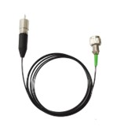
Focusing on High precision, High stability, and Controllable polarization
- High stability and polarization-maintaining characteristics, suitable for polarization-sensitive scenarios
- High-precision optical performance, suitable for precision applications
- Strong compatibility and standardized design reduce supporting costs
- Strict safety and protection design ensures long-term reliable operation
Part Number: VLFL-405-PM-FP-80
- Advantages in power and polarization: 80mW high power meets medium and high power requirements (such as laser direct writing, high-intensity fluorescence excitation), with an extinction ratio of 18dB that far exceeds other models, ensuring more stable polarization states.
- Low voltage adaptation: Operating voltage ranges from 5.0V to 6.0V, which is lower than that of the 488nm and 505nm models. It can be adapted to more conventional current sources, reducing the cost of power supply equipment.
- Excellent spot quality: 3μm thin-core polarization-maintaining fiber + Gaussian spot output, suitable for applications with high requirements on spot size and uniformity (such as micro-structure processing).
Part Number: VLFL-450-PM-FP-30
- Wavelength characteristic adaptation: 450nm blue-violet light is suitable for the absorption and excitation of certain special materials, filling the wavelength gap between 405nm and 488nm.
- Low power consumption and heat dissipation: 30mW power + 5.5-6.0V low operating voltage, low power consumption, stable operation under conventional heat dissipation conditions, no additional refrigeration equipment required, suitable for miniaturized system integration.
- Comprehensive safety tips: anti-static and optical fiber bending requirements reduce the risk of equipment damage or personal injury caused by operational errors.
Part Number: VLFL-505-PM-FP-30
- Excellent spot quality: Integrated single-mode fiber coupling + conformal gradient index lens, the output spot conforms to Gaussian distribution, with high coupling efficiency and reduced light loss.
- Clear electrostatic protection prompts: It clearly requires shorting the pins after use to reduce the risk of electrostatic breakdown and extend the device's service life.
- Good environmental adaptability: Although sensitive to temperature, it can work stably under conventional heat dissipation conditions without complex refrigeration equipment, resulting in low usage cost.
Part Number: VLFL-488-PM-FP-30
- Wide wavelength applicability: 488nm is a commonly used wavelength for biological fluorescence excitation, which can match fluorescein without the need for customized special light sources.
- Good polarization stability: The polarization-maintaining fiber design, with an extinction ratio of 16dB, can stably maintain the laser polarization state, making it suitable for high-precision applications sensitive to polarization (such as polarization imaging).
- Easy operation: The universal connector can directly match most fiber flanges and collimating lenses without additional adaptation components, reducing the threshold for use.
High-Stability Laser Engines
A high-stability laser engine is an integrated core functional unit consisting of a light source module, temperature control system, drive circuit, and optical calibration component. It achieves long-term stability of laser output parameters through multi-dimensional coordinated control. Compared with ordinary lasers, its core difference lies in the adoption of an active intervention mechanism to offset environmental interference, ensuring precise control of wavelength, power, and beam quality during long-term operation.
VLFL-LS High-Stability Laser Engine-

High-performance General-purpose Laser Light Source Solution
- Ultra-high stability laser output
- Broad spectral coverage and customization capability
- Flexible modulation and integration characteristics
- Industrial-grade reliability assurance
Part Number: VLFL-LS-405
- Within the same series, it is the only one that covers the 405nm deep ultraviolet band with a maximum output power of 80mW, providing a strong excitation light source for deep ultraviolet scenarios and meeting high energy requirements; The optical fiber core diameter is the smallest at 3μm, and when combined with the TEM00 spatial mode, the spot focusing accuracy is high, making it suitable for trace sample detection.
Part Number: VLFL-LS-450
- The 450nm blue light band has strong adaptability, and the 25mW power balances "excitation intensity" and "low light damage", making it suitable for biological samples sensitive to blue light. The optical fiber core diameter is 3.5μm, which takes into account both spot precision and light intake, and is compatible with most general-purpose optical fiber probes.
Part Number: VLFL-LS-488
- The 488nm visible light band is the "golden wavelength" for biological fluorescence detection. A power of 25mW meets the excitation requirements of most fluorescent dyes (such as FITC), resulting in a high signal-to-noise ratio. Low noise (RMS < 0.2%) ensures stable fluorescence signals, avoids noise interference with detection results, and is suitable for biomedical detection.
Part Number: VLFL-LS-505
- The power of the 505nm blue-green light band has been increased to 35mW, balancing "excitation intensity" and "sample protection", making it suitable for biological samples that require stronger signals but cannot tolerate high power. The fiber core diameter is 3.5μm, which is compatible with most general-purpose sampling accessories and has low integration difficulty.
Part Number: VLFL-LS-520
- The power of the 520nm green light band reaches 40mW, providing high-power support for green light excitation scenarios, and is suitable for samples with weak signals (such as low-concentration fluorescent markers). The beam quality is ≤1.2, with good spot uniformity, which is suitable for the high-resolution imaging requirements of confocal microscopes.
Laser Modules
VLFL-SF-N Split-Type Single-Mode Laser Module -

Core light source components in the field of medium and high-precision optical inspection and measurement
- High precision, low interference
- Separate and flexible
- Long lifespan and wide adaptability
1Part Number: VLFL-940-SF-N
- It has strong concealment and is suitable for security scenarios that require anti-interference; it has a high degree of deviation from the water absorption peak and excellent stability in humid environments.
- Applications: Concealed security monitoring, infrared remote controls, biosensors, industrial testing in humid environments.
2Part Number: VLFL-638-SF-N
- The orange-red light features excellent biocompatibility with minimal damage to biological tissues; it has outstanding beam collimation, with RMS noise ≤ 1% and 2-hour power stability ≤ 3%; Making it suitable for long-duration fluorescence experiments; its miniaturized design can be embedded in portable optical detection equipment.
3Part Number: VLFL-670-SF-N
- Crimson red light has less scattering loss in turbid media and can travel a longer distance. It is safer for the human eye than the blue light band and is suitable for open optical path applications.
4Part Number: VLFL-660-SF-N
- Red light penetrates biological tissues to a moderate depth (approximately 1-2mm), which can both excite fluorescence and reduce photobleaching. It has excellent power stability, making it suitable for scenarios requiring long-term irradiation such as plant photoperiod regulation.
5Part Number: VLFL-785-SF-N
- Significantly reduce the interference of spontaneous fluorescence in biological samples (reduced by more than 60% compared to the visible light band) and support non-destructive testing. Near-infrared light can penetrate biological tissues to a depth of 1-3mm, making it suitable for the analysis of deep samples
2VLFL-SF-T Split-Type Single-Mode Laser Module-
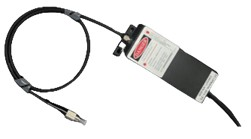
Modular optical device that stably outputs high-purity single-mode laser
- High single-mode beam performance
- Split-type flexible deployment
- Ultra-high wavelength stability
- Full-function integration, safety and reliability
1Part Number: VLFL-638-SF-T
- Probes sensitive to red light (such as rhodamine) have high excitation efficiency; they are visible to the human eye, making optical path calibration convenient; and they have a wide voltage range (90-245V) suitable for global power supply. M² ≤ 1.2, with excellent spot uniformity, suitable for precision optical scenarios.
2Part Number: VLFL-660-SF-T
- M² ≤ 1.2, power stability ≤ 2%, spectral linewidth 1-2nm, TEC temperature control. Penetration depth in biological tissues is 3-5mm (better than 638nm), with little damage, compatible with commercial fluorescent dyes such as Cy5, suitable for fluorescence analysis scenarios.
3Part Number: VLFL-685-SF-T
- Strong ability to resist outdoor natural light interference (680-690nm is the near-infrared "dark line" region). The penetration depth of biological tissue is 2-3mm, suitable for shallow detection.
4Part Number: VLFL-670-SF-T
- It balances human eye visibility (for optical path debugging) and near-infrared penetration (for deep sample detection). Single-mode fiber transmission has no multimode dispersion, and the optical signal has high fidelity, making it suitable for long-distance optical measurement.
5Part Number: VLFL-785-SF-T
- TEC temperature control can effectively suppress the temperature drift of the 785nm wavelength (near-infrared wavelengths are more sensitive to temperature), ensuring the stability of long-term experiments. 785nm is a commonly used wavelength in scientific research and industry, compatible with a large number of commercial fluorescent probes (such as quantum dots, Cy7 dyes) and Raman spectrometers.
Laser Systems
A laser system is essentially a closed-loop system of "energy excitation - beam control - application output". Its core consists of five core functional modules, which work collaboratively through standardized interfaces to form a flexibly configurable technical architecture. Laser systems have evolved from laboratory tools into core equipment supporting fields such as precision manufacturing, scientific research and exploration, and medical and health care.
1VLFL-405 Series Fiber-Coupled Laser Systems-

An integrated laser system with "full power coverage and multi-scenario adaptation"
- Fully integrated system design, plug-and-play
- High-precision performance control with excellent stability
- Strong scene adaptability and flexible customization
- Long lifespan and low maintenance, with low usage cost
1Part Number: VLFL-405-MF-300
- Multimode Fiber (MF), core diameter options of 50/100/200μm, numerical aperture 0.22, interface options of FC/SMA905/SC/ST
- Medium-power multimode model with a narrower spectral width (2nm), suitable for scenarios with slightly higher requirements for wavelength accuracy
2Part Number: VLFL-405-MF-130
- Multimode Fiber (MF), with core diameters of 50/100/200μm optional, numerical aperture of 0.22, and interfaces of FC/SMA905/SC/ST optional
- Low-to-medium power multimode basic model, suitable for conventional optical transmission scenarios
3Part Number: VLFL-405-MF-500
- Multimode Fiber (MF), core diameter 50/100/200μm optional, numerical aperture 0.22, interface FC/SMA905/SC/ST optional
- Medium and high power multimode model, balancing power and wavelength stability, suitable for medium energy demand scenarios
4Part Number: VLFL-405-MF-800
- Multimode Fiber (MF), core diameter 50/100/200μm optional, numerical aperture 0.22, interface FC/SMA905/SC/ST optional
- High-power multimode model with a narrow spectral width (2nm), balancing high energy and wavelength accuracy
5Part Number: VLFL-405-MF-2000
- Multimode Fiber (MF), core diameter 50/100/200μm optional, numerical aperture 0.22, interface FC/SMA905/SC/ST optional
- Ultra-high power multimode model, series power peak, suitable for scenarios with high energy density requirements
2VLFL-450 Series Fiber-Coupled Laser Systems-
An integrated laser system that is "exclusive to the near-ultraviolet to blue light band, covers full power range (30~3500mW), and supports multi-scenario customization"
- High integration and ease of use
- High-precision performance control
- Strong customization and wide adaptability
- Long service life and low maintenance cost
1Part Number: VLFL-445-MF-1000
- Multimode Fiber (MF), core diameter 50/100/200μm (optional), numerical aperture 0.22, interface FC/SMA905/SC/ST (optional)
- 445nm medium and high power multimode model, suitable for scenarios requiring "shorter blue light wavelength + medium energy" (such as excitation of specific photosensitive materials)
2Part Number: VLFL-450-MF-60
- Multimode Fiber (MF), core diameter 50/100/200μm (optional), numerical aperture 0.22, interface FC/SMA905/SC/ST (optional)
- 450nm low-power multimode basic model, suitable for regular blue light detection and low-energy excitation scenarios (such as fluorescent labeling experiments)
3Part Number: VLFL-450-PM-30
- Polarization Maintaining Fiber (PM), core diameter 3.5μm (fixed), numerical aperture 0.12, interface FC/SMA905/SC/ST (optional)
- 450nm low-power polarization-sensitive model, with 16dB extinction ratio to maintain stable laser polarization state, suitable for polarization-dependent experiments
4Part Number: VLFL-450-SF-40
- Single-mode Fiber (SF), core diameter 3.5μm (fixed), numerical aperture 0.13, interface FC/SMA905/SC/ST (optional)
- 450nm low-power, high-beam-quality model, with single-mode fiber outputting Gaussian spot, suitable for high focusing precision scenarios (such as confocal microscopy)
5Part Number: VLFL-455-MF-3500
- Multimode Fiber (MF), core diameter 50/100/200μm (optional), numerical aperture 0.22, interface FC/SMA905/SC/ST (optional)
- 455nm ultra-high power multimode model, the power ceiling of the series, suitable for high energy density demand scenarios (such as high-power 3D printing, material surface modification)
3Three-wavelength multimode fiber white light laser system-

A professional-grade white light laser system featuring "three-wavelength integration, high customization, and compact design"
- Three-wavelength integrated design, adapting to multi-band coordination requirements
- Fiber parameters are highly customizable, with strong scene adaptability
- Software control + high stability, with convenient operation and reliable results
- Compact integration + wide environmental adaptability, flexible deployment
1Part Number: VLFL-450+520+638-MF
- Unlike single-wavelength lasers, this product integrates three commonly used visible light bands: 450nm (blue light), 520nm (green light), and 638nm (red light) into the same system. It can achieve "simultaneous/switchable output of multiple bands" without the need for additional equipment setup, and is particularly suitable for scenarios requiring multi-color excitation (such as multi-color fluorescence imaging and multi-band spectral analysis of materials).
- This greatly simplifies the equipment setup process and saves space and procurement costs.
Detectors
The VenusLab detector product series is core-positioned around the concept of "full-wavelength coverage, full-scenario adaptation, and high-precision output". It builds a complete product matrix spanning from basic optical signal monitoring to single-photon-level ultra-high-precision detection through 6 major segmented categories. Covering the full wavelength range from ultraviolet (185nm) to short-wave infrared (2500nm), with response speeds ranging from 50ns down to 1ns and detection sensitivity spanning from 0.1nW to the single-photon level, this series can meet the differentiated optical signal detection needs across multiple fields such as scientific research, industry, biomedicine, and security. It provides stable and accurate core sensing components for various light-related applications.
Amplified & Specialty Detector Solutions
SiC-EUV-AG Photodetector

Solid-State Integrated EUV Detection Solution
- Fundamental Advantages Empowered by Wide-Bandgap Materials
- Precise Response Capability in the EUV Band
- Functional Upgrade of AG (Enhanced Gain)
- Stable Adaptability to Extreme Environments
SiC-VUV-AG Photodetector
Professional-grade Detection Benchmark for the VUV Band
- Material and Stability
- Anti-interference and Signal Purity
- Flexible Gain Adaptation
- Environmental Compatibility
- Performance and Services
SiC-AG Photodetector

Focus on industrial & research mid-UV accurate measurement needs
- Material-Enabled High Stability
- Pure Signal and Anti-Interference
- Flexible Gain for Full-Scenario Adaptation
- Multi-Scenario Compatible Design
- Long-Term Reliability and Low Maintenance
GaN-AG Photodetector
Optoelectronic devices based on wide bandgap semiconductors
- Full ultraviolet band coverage
- Flexible and adjustable gain
- High reliability and environmental adaptability
- Complete customization and supporting facilities
Si-30keV-AG X-Ray Detector
A dedicated radiation measurement device designed based on silicon (Si) material.
- Multi-ray compatibility
- High detection performance
- Vacuum environment adaptation
- Stable and durable
Si/InGaAs-Ps-S Photodetector

Constructed based on indium arsenide antimonide (InAsSb) material
- Ultra-high-speed response mechanism
- High-sensitivity detection capability
- Wide spectral adaptability
Si-PDA-Adj-G Photodetector
Silicon-based amplifying photodetector
- Wide spectral coverage and strong silicon-based compatibility
- Enlarged design with outstanding low-light detection capability
- Adjustable gain + bandwidth adaptation for wide scene compatibility
- High compatibility + standardization for easy integration
InGaAs-PDA-Adj-G Photodetector
Optoelectronic devices designed for the near-infrared band (800~1700nm)
- Material and spectrum adaptation
- Amplification type and adjustable gain
- Wide dynamic range and high bandwidth
- High compatibility and ease of use
- Stable and reliable
InGaAs-AG Photodetector
Optoelectronic devices with indium gallium arsenide (InGaAs) as the core detection material
- Wide coverage of spectral extension
- Amplification type + adjustable gain
- Low noise and high precision
- Integration and ease of use
- Long-term stability and anti-interference
Si-PDA-Fix-G AV Photodetector
A silicon-based avalanche photodetector
- High-sensitivity weak light detection
- Fixed gain stability
- Multi-scenario adaptability
- High ease of use
InGaAs-PDA-Fix-G AV Photodetector
Professional avalanche photodetectors for near-infrared light detection
- High-sensitivity detection
- Fixed gain stability
- Specific wavelength band response
- Integrated amplification function
Component PIN Photodiodes (Wavelength & Package)
Low Dark Current Silicon PIN Photodiode (TO18 package)

Core components in the field of medium and high-precision optical signal detection
- Excellent optical performance
- Strong structural adaptability
- Good environmental stability
Low Dark Current Silicon PIN Photodiode (COB packaging)

Core devices in the fields of low-light detection and precision measurement
- Wide-spectrum precise response
- Ultra-low noise detection capability
- High integration and mass production adaptability
- Industrial-grade environmental reliability
Near-infrared enhanced silicon PIN photodiode (DIP package)
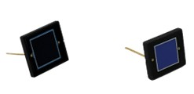
Near-infrared enhanced silicon PIN photodiode (DIP package)
- Near-infrared optimized photoelectric conversion device
- High detection accuracy and fast response
- DIP package for engineering adaptability
- Excellent long-term stability
Near-infrared enhanced silicon PIN photodiode (TO package)
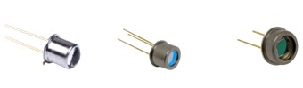
Silicon-based PIN junction near-infrared optimized photoelectric conversion device.
- Highly efficient response in the near-infrared band
- High detection accuracy
- Fast response speed
- Wide scene adaptability
Silicon PIN photodiode in the ultraviolet to near-infrared band

A broad-spectrum photoelectric conversion device whose spectral response covers the ultraviolet to near-infrared bands.
- Accurate broadband response
- Low dark current with PIN structure
- High photoelectric linearity
- Stable environmental adaptability
Ultraviolet-enhanced Silicon PIN Photodiode (COB Package)
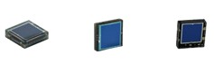
Optoelectronic conversion device with enhanced ultraviolet band response and COB package integration.
- High sensitivity in the ultraviolet band
- Strong integration adaptability
- Excellent environmental stability
UV-enhanced Silicon PIN Photodiode (DIP Package)
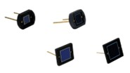
Optoelectronic conversion devices with DIP dual in-line package
- High-sensitivity detection in the ultraviolet band
- Engineering adaptability of DIP packaging
- Wide temperature range stability and low noise
- Plug-and-play compatibility for easy use
Ultraviolet-enhanced Silicon PIN Photodiode (TO package)

A high-performance photoelectric conversion component designed for the ultraviolet band
- High sensitivity in the ultraviolet band
- Standardized TO package
- Good long-term stability and reliability
Silicon PIN photodiode in the ultraviolet to near-infrared band

Optoelectronic devices featuring high sensitivity and wide spectrum coverage
- Ultra-wide spectrum coverage
- High photoelectric conversion efficiency
- Low dark current and high stability
- Strong anti-interference ability
Imaging
Scientific cameras, CMOS cameras and specialized imaging systems. Use the search to filter.
Scientific Cameras
sCMOS scientific camera

High-end imaging equipment specially designed for cutting-edge scientific research scenarios
- Ultra-weak light detection capability
- High-speed dynamic imaging
- Stable low-noise output
- Flexible integration and adaptation
Astra UltraSpeed camera
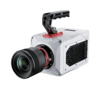
"Transient Vision Engine": domestic benchmark for highly sensitive, ultra-high-speed analysis.
- Ultra-high-speed imaging capability
- High-sensitivity low-light adaptation
HyperStore X Camera

Focus on capturing ultra-high-speed transient details.
- Ultra-high-speed frame rate coverage
- Ultra-large memory guarantee
- Multi-scenario compatible design
CMOS Cameras
ISP CMOS Camera

Balance between professional performance and cost-effectiveness.
- Hardware-level image processing engine
- High-sensitivity and low-noise imaging
UISP CMOS Camera

Efficient and high-quality image transmission and processing at high resolution.
- High-speed transmission, high-definition and smooth
- Full-scene adaptation
L3 CMOS Camera
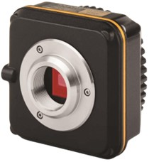
Professional-grade microscopic imaging and industrial inspection scenarios.
- High-performance sensors and hardware-level cache design
- Professional color engine and high-resolution imaging
Optics & Fiber
Imaging optics, fiber parts, collimators and patchcords.
Imaging Optics
VL Plan Apo HR Brightfield Observation Objective Lens

High-order brightfield imaging + quantitative analysis
- Super Apochromatic Global Correction for minimal aberrations across the visible spectrum.
- Synergy of High NA and Ultra-Long Working Distance for flexible sample manipulation.
- Designed for high-resolution inspection of semiconductor features and materials.
VL Plan Apo SL Brightfield Observation Objective Lens
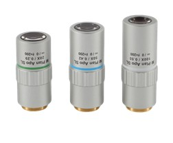
High-end configuration in brightfield observation.
- Apochromatic (Apo): Precise correction of multiple wavelengths for true color imaging.
- Super Long Working Distance (SL) for high-temperature/vacuum chamber compatibility.
- Anti-reflection coatings optimized for UV/Vis/NIR ranges.
VL NIR Chromatic-Free Objective Lens

Apochromatic objective lens series optimized for the Near-Infrared (NIR) band.
- Specifically designed for wafer inspection and deep imaging through silicon.
- Minimized chromatic aberration between the visible alignment beam and the NIR analysis beam.
- High transmission and low-autofluorescence glass materials.
VL Microscope Tube Lens
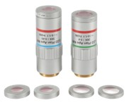
A precision tube lens for infinity-corrected microscope systems.
- Standardized focal lengths (e.g., 200mm, 300mm) for compatibility with various objectives and camera sensor sizes.
- Excellent chromatic correction across visible/NIR spectrums.
- High image quality maintained across large sensors.
VL Phase Contrast Objective Set
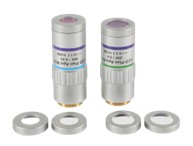
Optics set for visualizing transparent specimens without staining, enhancing subtle phase shifts.
- Dedicated phase rings for optimal contrast generation in biological and polymer science.
- Long working distance for compatibility with inverted microscopes and large containers.
- Ideal for non-destructive, high-contrast imaging of delicate samples.
Fiber Parts
UWB Aspherical Collimator
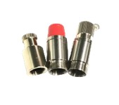
High-precision, wide-wavelength, focus-adjustable collimator.
- Ultra-Wide Band (UWB) operation from UV to IR (350 nm - 2000 nm).
- Aspherical lens design for minimal beam distortion and high coupling efficiency.
- Fine-pitch adjustment mechanism for precise beam focus and collimation.
Single-mode fiber collimator

Multi-wavelength coverage + low-loss performance + Flexible adaptation.
- Optimized for Gaussian beam quality and long-distance free-space propagation.
- Microscope illumination fibers, precision optical inspection (such as surface defect scanning).
- Compact, rugged housing suitable for lab and OEM integration.
Patchchords
SMF Patch Cord

Ultra-low loss transmission,Wide-range environmental adaptability, Flexible customization capability, Precision structural design.
- Ultra-Wide Band (UWB) operation from UV to IR (350 nm - 2000 nm).
- Aspherical lens design for minimal beam distortion and high coupling efficiency.
- Fine-pitch adjustment mechanism for precise beam focus and collimation.
MMF Patch Cord

Small fiber core enables precision optical transmission, wide wavelength coverage from ultraviolet to near-infrared, and FC/PC connectors for universal adaptation to devices.
- Optimized for Gaussian beam quality and long-distance free-space propagation.
- fiber optic sensors (strain/temperature monitoring).
Opto-Mechanics
Optical tables, breadboards, temperature stages and specialized mechanics.
Optical Tables
VL-T Series Teaching Platform

The “zero-threshold” teaching-grade optical platform
- Active electro-pneumatic system cancels vibration down to 0.5 Hz.
- Ideal for high-resolution microscopy, metrology, and precision laser setups.
- Automatic leveling ensures consistent performance regardless of load distribution.
VL-A Series Aluminum Breadboard
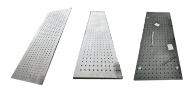
Cost-effective, high-performance solution for general lab use.
- Dampens vibrations starting from 2 Hz using internal air isolators.
- Honeycomb core structure ensures high stiffness-to-weight ratio and minimal deflection.
VL-M Series Magnetic Breadboard

Passive pneumatic legs for cost-effective vibration damping of smaller setups.
- Compact design suitable for confined lab spaces and existing benchtop setups.
- Effective isolation of floor vibrations down to low frequencies.
- Self-leveling capability for quick and easy experimental setup.
Temperature Stage
ThermoPolar Stage

Ultra-thin wide temperature range platform adapted to polarizing microscopes.
- Temperature range: -196°C to 600°C, suitable for phase transition studies.
- Ultra-thin design for high numerical aperture polarizing objective compatibility.
- Integrated water/air cooling jacket for fast cooling rates and stability.
Multi-window heating and cooling stage for Spectrometer
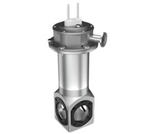
Multi-window optical design and wide-temperature-range precision control.
- Allows simultaneous optical access from multiple angles (e.g., transmission, reflection, scattering).
- Temperature stability better than ±0.01°C at critical points.
- Sealed chamber design prevents condensation and atmosphere contamination.
OptiThermo Stage

Universal temperature control technology and unified optical adaptability.
- Compatible with most inverted and upright microscopes.
- Highly uniform temperature distribution across the sample area.
- Software interface for pre-programming complex temperature profiles.
PeltierThermo Stage

Peltier-based thermal stage for fast and precise temperature control in a smaller range.
- Rapid heating and cooling cycles using solid-state thermoelectric coolers.
- Compact size ideal for integration into existing micro-measurement systems.
- Temperature range typically from -20°C to 90°C.
Specialized Mechanics
GG Series ProbeThermo Stage
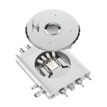
Accurate temperature control (±0.1℃) + probe integrated measurement.
- Features integrated thermal chucks and probe access for IV/CV testing.
- Temperature uniformity across the chuck surface is guaranteed for reliable measurement.
- Compatible with standard analytical probe stations.
ExtProbe Stage
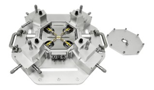
External/internal displacement mechanism with high precision.
- Designed for precise lateral and vertical movement of samples within a sealed environment.
- Sub-micron positioning repeatability for automated testing sequences.
- Motorized options for remote and vacuum compatibility.
MotorProbe Stage
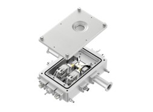
Quick response feature + strong optical compatibility.
- High-speed motorization allows for rapid wafer stepping and die-to-die transitions.
- Integrated with high-resolution encoders for absolute positioning.
- Clear optical path for use with high-magnification microscopes.
Temperature Controlled Stages for mechanical testing
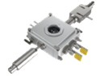
Study on Material Properties under Temperature-Mechanical Coupling Environment
- Wide temperature range + high-precision temperature control
- Strong Adaptability
- Extensibility of multi-field coupling
- Accurate data synchronization
Tensile Stage
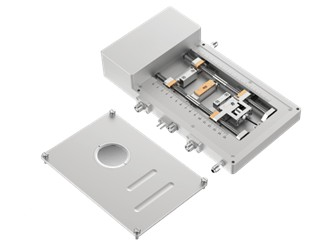
Precision testing equipment dedicated to research on the synergistic evolution of material mechanics - microstructure
- Multimodal mechanical testing
- Wide temperature range
- High-precision control
- In-situ observation capability
- Modular design
TensileThermo Stage
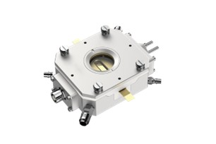
An important equipment for the study of the micromechanical properties of materials
- Precise temperature control
- Diverse mechanical tests
- Convenient in-situ observation
- Strong compatibility
Special Applications
XRDThermo Stage
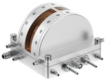
Equipment used with X-ray diffractometers (XRD)
- Wide temperature range regulation
- Precise and stable temperature control
- In-situ testing function
- Good radiation transmittance
SEMThermo Stage
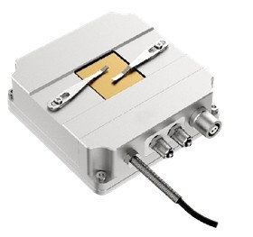
A variable temperature sample stage installed in the sample chamber of a scanning electron microscope (SEM)
- In-situ variable temperature observation
- Wide temperature range
- High-precision temperature control
- Compatible with various analyses
Chambers & Furnaces
Opto-Electric Vacuum Chamber
A versatile platform for performing opto-electric measurements in high vacuum.
- Multiple optical ports (e.g., quartz, sapphire) for UV/Vis/IR light access.
- Integrated electrical feedthroughs for complex device testing and high-voltage applications.
- Achieves high-vacuum levels (<10^-6 Torr) for sensitive material studies.
In-situ Battery Testing Chamber
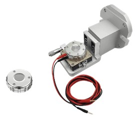
Sealed chamber designed for observing battery components under operating conditions.
- Allows optical microscopy and Raman spectroscopy during charging/discharging cycles.
- Integrated safety features for volatile material testing and safety studies.
- Integrated force sensors to measure volume expansion/contraction during charging cycles.
- Electrically isolated and safe for high-voltage battery research.
FlashAnneal Furnace
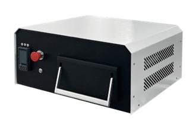
High-temperature processing of semiconductors; rapid temperature rise and uniform temperature.
- Ultra-fast thermal processing (rapid thermal annealing - RTA) capability.
- Halogen lamp heating elements provide fast and precise ramp-up rates (e.g., 100°C/s).
- Excellent temperature uniformity across large wafer sizes.
Optical Test & Metrology
Spectral measurement systems: fiber spectrometers, Raman systems, spectroscopy systems and online spectrometers.
Fiber Spectrometers
Sharp 2K Spectrometer

Industrial-grade miniature fiber optic spectrometer.
- 2048-pixel high-resolution CCD detector array.
- Optimized for fast spectral measurements and high throughput.
- Rugged aluminum housing for industrial environments.
UltraSense 11K Spectrometer
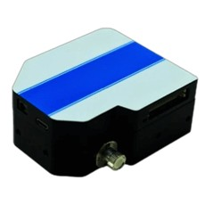
Ultra-high resolution and wide spectral range coverage for demanding lab work.
- High-density (11K pixels) sensor array for exceptional detail.
- Deep UV to NIR range capability with optimized grating.
- Thermally stabilized housing for long-term stability in precision metrology.
SharpGrip Spectrometer
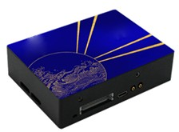
Industrial-grade micro-spectrometer with high resolution.
- Compact and handheld form factor for on-site field measurements.
- Internal battery and storage for standalone data collection.
- Pre-calibrated and ruggedized for rough handling and field conditions.
Raman Systems
Raman Pocket Spectrometer
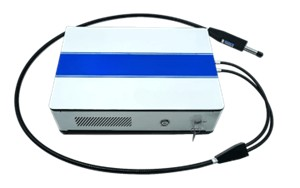
Portable, high-detection-performance Raman system.
- Integrated laser source and spectrometer for non-contact chemical identification.
- High sensitivity allows for detection of trace amounts of material.
- Used for pharmaceutical quality control and hazardous material identification.
R532 Raman Probe
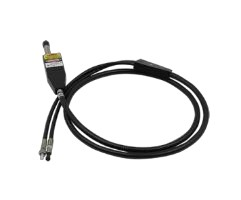
Standardized Raman detection accessory for 532nm lasers.
- Integrated collection optics and excitation filter/notch filter.
- High throughput for efficient signal return to the spectrometer.
- Flexible design for immersion or non-contact sampling.
Spectroscopy Systems
Field Pro Spectrometer

High-precision portable spectrometer (VL-Field 1100 / 1700 / 2500 variants).
- Modular design allowing for VIS, NIR, and SWIR spectral range coverage.
- High-resolution internal display and GPS tagging for field work.
- Calibration reference module ensures data quality and accuracy on-site.
Online Spectrometers
RamanOnline IoT Spectrometer

Molecular-Level Process Arbiter Under Extreme Operating Conditions.
- Analytical Reliability Under Extreme Environments
- Real-Time Multi-Dimensional Process Analysis Capability
- Full-Process Compliance and Digital Integration
- Flexible Adaptation to Multi-Scenario Applications